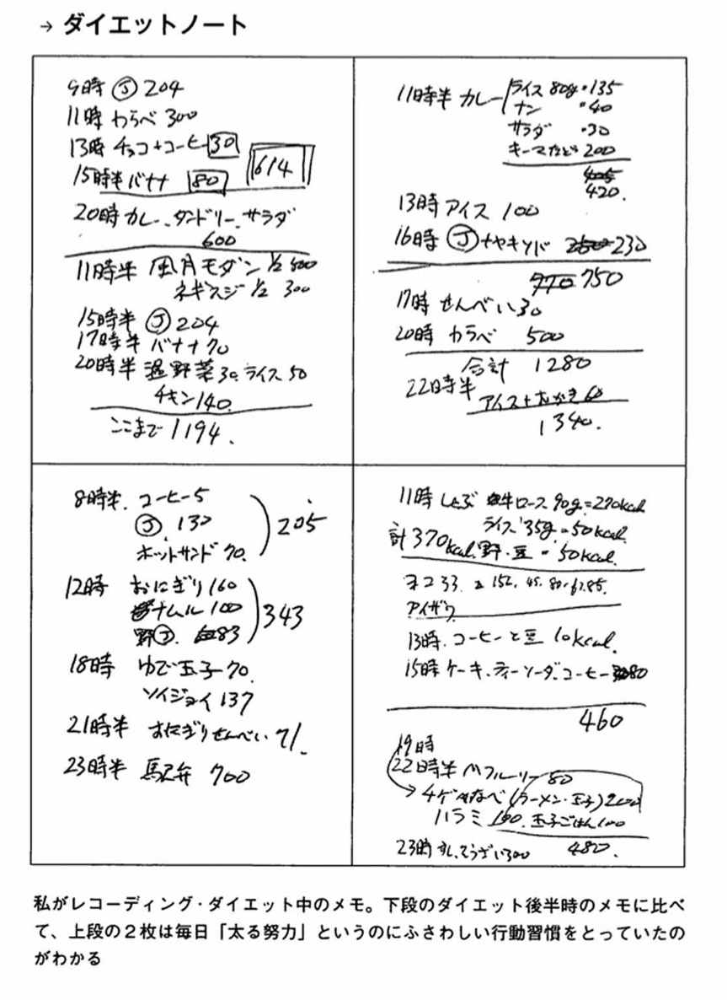
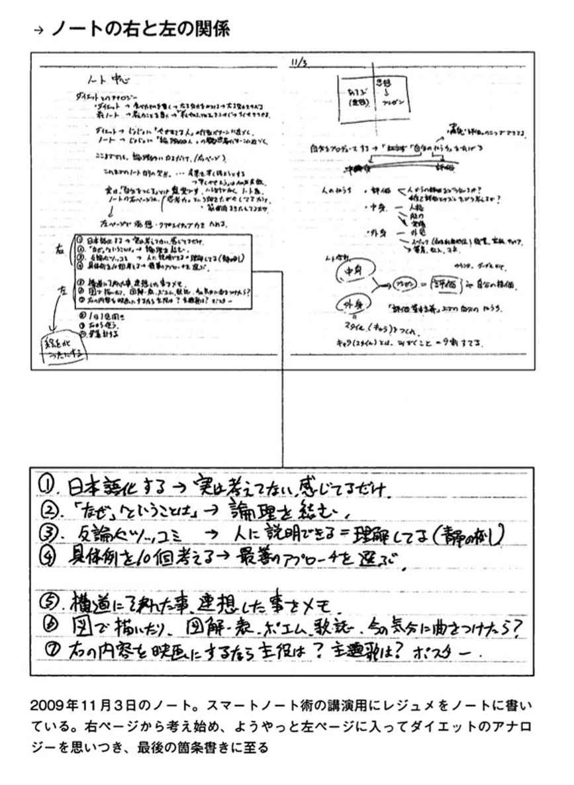
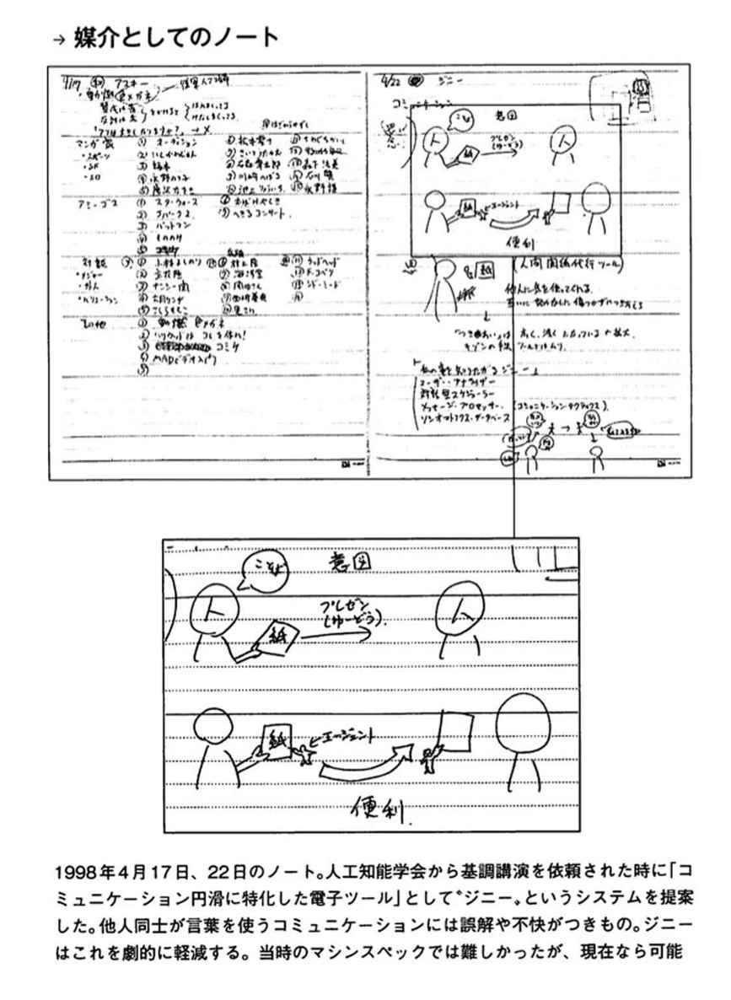
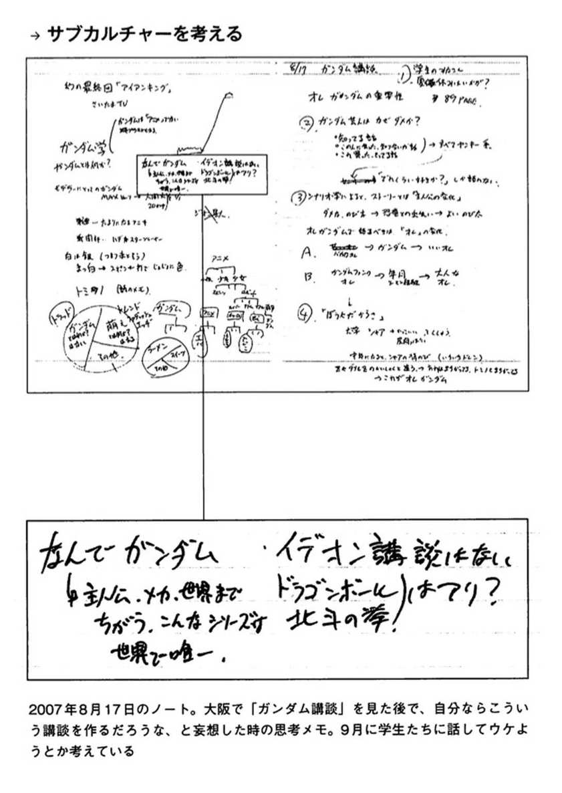

| あなたを天才にするスマートノート・電子版プラス | |
| 岡田斗司夫 FREEex | |
| Rocket Inc (2014) | |
目次
この作品は、2011年２月、文藝春秋社より刊行された『あなたを天才にするスマートノート』に基づいて増補・改訂したものです。また、仕様上の都合により適宜編集を加えています。
本書のコピー、スキャン、デジタル化等の無断複製は、著作権法上での例外である私的利用を除き禁じられています。本書を代行業者等の第三者に依頼してコピー、スキャンやデジタル化することは、たとえ個人や家庭内での利用であっても一切認められていません。
僕はこんなノートをつけてきた
まえがき ノートで「楽に」天才になる
スマートノートは、『天才を作るため』のノート術です。
巷に氾濫しているノート術テキストやマニュアルは、『秀才を目指すため』、つまり単に有能な人材を目指す人のノート術です。
有能な人材、ということは「誰かに雇われて、仕事を他人に決められて働く」という意味です。そんな仕事に「天才」は必要ありません。「秀才」で充分。
もしあなたが目指すのが「秀才」なら、この本は向いていないかもしれません。
現在の仕事に不安や不満が無く、将来も安定していて、プライベートにも満足しているのならば、本書は必要ないでしょう。
「サラリーマンだし、起業も独立も望んでいない。だから秀才で充分」
なるほど、そうかもしれませんね。
でも、本当ですか？
もし本当なら、なぜこの本を見ているのでしょう？
いまの日本に「不安や不満がなく、将来も安定」している職種なんて、本当にあるのでしょうか？
仕事とプライベートの両立を上手くできている人なんて、本当にいるのでしょうか？
「自分にはなにか足りない。なにが足りないかわからないけど、足りていないことだけははっきりわかる」
だからこそ、いまあなたはノート術やら思考法の本を読んでいるわけです。
いかがでしょうか。
もう少しだけ、読み進めたくなりましたか？
なら大成功です（笑）。
ごめんなさい。
マジメに話を続けます。
なぜノート術が続かないのか
書店のビジネス書棚に大量にあるノート術や思考法系の本。それらは大抵、単純でわかりやすい目的が設定されています。
「効率よく時間を使う」
「人生の目的を具体化する」
「プレゼンを成功させる」
自分の人生をランクアップしたいと考えているまじめな人なら、こういうノート術にチャレンジした経験はきっとあるはず。
何ヶ月かがんばってみた人も多いと思います。
でも結局、辞めてしまった。
やらなくちゃ、と思いつつ、なかなか続かない。
確かに効果もあるけど、手間がかかりすぎる。なにもここまで大仰なものでなくても、というものも多い。
私自身、以前にシステム手帳にハマったことがあります。
コレだ！ と思いましたよ。いままでの自分のムダな情報管理や仕事の仕方がバカらしく思えて、システム手帳さえちゃんと使いこなせれば、なにもかも上手くいく、そう思って熱心に使っていた時がありました。
でも、数週間で挫折しました。
だって、手間が多すぎます。
スケジュール帳に記入して、毎週初めに週間予定に転記して、会議のメモは会議ごとにフォルダに分けて、また議事録として転記する。
１日中、シャープペンシルと消しゴムで小さい手帳相手に格闘するのには、ほとほと疲れ果ててしまったのです。
では現在の、パソコンやスマートフォンで使えるノートやシステム手帳のソフトはどうでしょうか？
さすがに紙のシステム手帳時代のような転記のムダはなくなりました。しかし面倒なことには、かわりがない。
なにより、ＩＴ系のツールというのは基本的に欧米エクゼクティブ向けの「とんでもなく忙しく案件の多いビジネスマン向け」のツールです。「人の10倍働く人のための情報管理ツール」なんですよ。
私たちが望んでいる「雑事が楽になればいい」程度の動機で使いこなそうとするのは、大げさでムダが多すぎる。
家でケーキが作りたいだけなのに、お菓子用のオートメーション工場を作っちゃうぐらいのムダさです。
いや別に工場やコンビナートまでは、いらないから。
「どんなに忙しくても対応できる」ということだろうけど、そこまで忙しくないよ。もっと自分にぴったり合ったノート術があるんじゃないか。
そう思って、次々に新しい本を手にとってみました。
これって、なんだかダイエットとよく似ていると思いませんか？
ダイエットも、次から次へと新手法が出てくる。次々と新情報に飛びつき、年中ダイエットを宣言して、でもちっとも痩せられない人、私たちの周りにもいますよね？
そういう人のことを「ダイエット・ジプシー」と呼びます。
同じく「思考法ジプシー」「セミナー・ジプシー」「ノート術ジプシー」になっている人のなんと多いことか！
ダイエット・ジプシーが発生する理由は簡単。ダイエットできないからです。だから次から次へと、新手法に飛びついてしまう。
思考法やノート術も同じです。成果が出ない。だから新手法に飛びついてしまう。
「なぜ成果が出ないのか？」を根本的に問い直さないと、ジプシーを永遠に続けることになりますよ。
私は2007年に『いつまでもデブと思うなよ』（新潮新書）というダイエット本で、53万部という記録を出しました。
この数字は、ダイエット本では日本出版界最大のヒットであり、その他私の書いたレコーディング・ダイエット系書籍は合計で100万部を越えています。
いまだにダイエット特集を雑誌やテレビが組む時には、レコーディング・ダイエットは人気ベスト３に入り続けています。つまり「古くならない」ダイエット法なのです。
なぜでしょう？
それはレコーディング・ダイエットのメソッドは成功者が多い、つまり「成果が出やすい」からです。
ブログや Twitter などが普及したため、一般の意見は隠せない時代です。どんなに宣伝費をかけた目新しいダイエット法でも、効果がなければあっという間にすたれてしまいます。
レコーディング・ダイエットと同時期に大評判になった「ビリーズ・ブートキャンプ」「朝バナナダイエット」「コアリズム」をいまだにやっている人は、はたして何人いるでしょうか？
そう考えると、レコーディング・ダイエットがいまだに人気の上位に居続ける、ということは「効果がある」という証拠のはずです。
無理せず楽しく続ける
さて、レコーディング・ダイエット成功の秘密は、なによりも「継続可能なダイエット法だ」ということです。
継続しやすいから、毎日の努力も小さく、その積み重ねの効果は大きい。
ダイエットと同じくノート術も、もちろん思考術だって、続けることが大切です。
そのためには、「無理せず」「楽しく」が基本になります。
このスマートノートは、レコーディング・ダイエットと同様、実行しやすく続けやすいように、いくつかのフェーズに分けて、無理なくすすめられるように工夫してあります。
楽しくノートをつけたり、それをもとに表現したりしていると、いつの間にか、あなたは「天才」になっている。
「天才」になるほどじゃなくても最低限「秀才」程度には、なっちゃおう。
そのためのノート術です。
「天才」の条件とは？
ちょっと待て！
その「天才」ってなんだよ？
ご指摘、ごもっともです。
「天才」とはなんでしょうか？
「天才」とは、以下の３つの能力を兼ね備えた人です。
１）発想力
２）表現力
３）論理力
このそれぞれに関して高い能力を持ち、それが強い主体性によって１つの人格の中にまとまっている状態。
これを「天才」と言います。
あまりに簡単な定義に驚かれたんじゃないですか？
でも大丈夫。古今東西の「天才」と呼ばれる人たちは全部、上記の「３つの能力」で説明できます。
人によっては「天才」という言葉に思い入れがあるため、もっと「ものすごいもの」でないと納得しないかもしれません。
「オレの考える天才はもっとすごいんだ！岡田の言う天才なんて、本当の天才じゃない！」
う〜ん、本当かなぁ？
私の考える「天才」は、日本で1000人ぐらいいるはずですよ。その中の有名人だけ、私たちは名前を知っている。
「秀才」というのは数百人〜数千人に１人の人物。
「天才」とは数万〜数十万人に１人の人物。
これぐらいのスケールで考えています。
「天才」よりすごい「怪物」「神様」クラスの人物は、目指すモノじゃないし、本人も幸福に生きられない。
なので、本書ではターゲット外とさせてもらいます。
前述の図を見てください。
３つの能力がそれぞれの円で示されています。
この輪すべてが重なりあうわずかな面積、ここが「天才」の領域です。
２つの能力を持った場合
３つの能力のうち、２つでも兼ね備えた人は、人生の成功者になれます。
たとえば発想力と論理力を兼ね備えた人は、「改革者」「やり手」になれます。
ソフトバンクの孫正義社長や、ホリエモン、勝間和代など、ビジネス界の成功者に、このタイプをよく見かけます。
他人の気がつかない意外な視点、すなわち発想力で捕まえたビジネスチャンスを、強烈な論理力で実現化していきます。
他人から見れば彼らは「意志と上昇志向の塊」に見えますが、彼らにしてみれば「論理的に考えればあたりまえのこと」をしてるだけなんですよね。
表現力と論理力を兼ね備えた人は、「頭の良い人」になれます。
ハーバード大学の政治哲学者で、大ブームになったマイケル・サンデル教授やニュース解説者の池上彰、意外なところでは島田紳助が、このタイプです。
彼らの特徴は、その圧倒的なプレゼン能力。たとえ話や噂話などを交えながらも、根底に強い論理力があるため話の軸がブレません。
だから「いくら聞いても面白いし、ちゃんと話に結論がある」「聞いていてタメになる」というわけです。
発想力と表現力を兼ね備えた人。それは「面白い人」です。
ダウンタウンの松本人志など、お笑い界で活躍する人は大部分、このタイプです。
俗にいう「天才芸人」とは、独創的な着眼点を、高度な話芸や演技力で表現することができる、つまり発想力と表現力が優れている人たちなんですね。
だから発想力や論理力が強くて表現力の比較的低い水道橋博士や爆笑問題・太田光のようなタイプは、お笑いの世界では人気がいくらあっても、流派を作るメジャートレンドにはなれないのです。
「天才」を構成する３要素の、２つあれば、相乗効果ですごいパフォーマンスが望めます。実はこれだけで「単に成功するだけ」には充分なのです。
能力３つと２つの差
では、３つの能力を兼ね備えた「天才」とは、どんな人でしょうか？
ビジネス界ならアップル社のスティーブ・ジョブズ。日本の芸能界なら北野武。
また歴史上の人物なら、レオナルド・ダ・ヴィンチや釈迦、イエス・キリストやマルクスも天才です。
単に１つの能力が高いだけではない。圧倒的な才能を感じさせる存在。専門分野の枠を超えたカリスマ。それが「天才」です。
こういう天才たちに比べると、さきほどの２つしか持たない人たちは、何が足りないのか、見えてきます。
発想力と論理力を併せ持つ「改革者」「やり手」。
彼らが、専門分野を超えて歴史に名前を残さないのは、「本人から話をきいても面白くない」「本を読んでも、楽しくない」からです。
表現力が不足しているせいです。
司馬遼太郎によれば、坂本龍馬は無類の話し上手で、その場にいた全員を笑い転げさせる話術があったそうです。
ソフトバンクの孫社長とスティーブ・ジョブズの差は、あのスピーチの差です。ああ、孫社長にジョブズの表現力の半分でもあれば！ ソフトバンク社員はもっと社長に表現力レッスンを受けさせるべきですね。
勝間和代さんは個人的な友人で魅力的な人ですが、やはり「しゃべりがヘタ」です。ビジネスパーソンとしては充分以上に上手いのですが、得意分野以外の話をしても人が聞き入ってしまう能力がありません。それさえあれば、日本初の女性宰相にふさわしい人物なのになぁ。
表現力と論理力を併せ持つ「頭が良い」人たち。
彼らはそのプレゼン能力で、膨大な影響力を持ちます。
だけどなにか新しいものが作り出せるわけじゃない。だから永遠に「いま起きていることの説明」しかできない。
サンデル教授の『これからの「正義」の話をしよう』は哲学書としては例のないベストセラーになりました。しかし完読した人が口を揃えて言うのは「で、結論は？」です。
たしかにサンデル先生、正義についての話はしますが、彼自身の結論はない。というより「そんなの存在するはずがないからこそ、みんなで語ることが必要なんだ」というのが主張なんですけど、さんざん期待をあおってそれかぁ、と思われてしまいます。
あれほど面白い島田紳助にしても、実は新しいことは何もやっていない。語ってる内容そのものも単なる精神論だったり感動話だったり。つまり中身がない。
「わかりやすいけど、意外性がない」。
だから新しい流れが生み出せない。
発想力が不足しているからです。
マルクスやキリスト、釈迦はまず「革命家」でした。この世界の秩序なんか破壊してもかまわない！ という覚悟がないと、「頭の良い」人たちには世界を変える力はありません。
発想力と表現力を併せ持つ「面白い」人たち。
最近の芸人さんはみんなこのタイプです。Ｍ－１やキング・オブ・コントで評価されるのは「新しい笑いかどうか」という発想力と、それをちゃんと客席に届ける表現力。お笑い芸人としての評価だけなら、私が「天才」と定義した北野武よりもずっと才能があって面白い人がウヨウヨしています。
しかし、哀しいかな松本人志には決定的に論理力が不足している。映画、それも作家性の強い映画は一種の論理パズルです。だから映画を作ると馬脚をあらわしてしまう。
なので、お笑い以外の他業界では彼らの才能がなかなか活かせません。
「ワケがわからないけど、面白い」ばかりを目指してるから、継続性がない。
誰がやっても同じような効果が反復して得られる再現性の高いビジネスモデルが作り出せない。
なによりも、自分のファン以外の心を動かせない。
理屈や損得で相手を動かす圧倒的なパワーが不足している。
それは論理力が不足しているからです。
「天才」の三要素。
１）発想力
２）表現力
３）論理力
このうち、１つでもあれば、他人より秀でることができる。
２つあれば、成功することができる。
もし３つあれば、天下を取ることができます。
３つそろえば、世界を変えられる、まるでドラゴンボールですね。
社会を変えることができる。歴史に名を残せる人。
それが本書の目指す「天才」です。
天才の定義、これで大丈夫ですね？
では話を続けます。
どうやれば「天才」になれるのか？
つまり、どうやれば３つの能力を伸ばせるのでしょうか?
それぞれの能力について、もう少し考えてみましょう。
個々の能力の重要性
『発想力』は、いままでの価値観、感性を捨てて、新しい思いつきや概念を生み出したり面白がれる能力です。
いままでの自分を捨てる覚悟や姿勢、柔軟な感性を持つことが、第一歩になります。
そういう意味では、いままでのやりかたを捨て、新しいノート術を試してみよう、という気持ちも、この第一歩にあたります。
ただし、この能力は奥が深いです。
のちほど詳しく説明しますが、ノートをつけ続けることで生まれる脳内リンク。ここを土壌として無限に生まれ出てくるアイディアの海こそが、発想力の源泉となります。
『発想力』は、あなたを他人と違う「個性豊かで、予想外のことを言う、魅力的な人」にしてくれます。
『表現力』は、あなたの考えを他人に伝える技術力です。
「話すこと」「書くこと」「描くこと」「歌うこと」「演奏すること」「踊ること」など、方法は、様々です。
スポーツや料理も表現力がないと評価されません。
同じ「話す」でも、私が講演やイベントでやるように「１人で３時間、語り続ける」という方式から、「インタビューする」「ディベートする」「大勢の前で話す」「２人でじっくり語る」と、様々な形式が考えられます。
１人で語る場合も、イベント会場からライブハウス、大学の講義、落語、演説などメディアや語り口も様々です。
自分に合った方法を見つけることはもちろんですが、それを何度も何度も実際に繰り返して、少しずつ技術の向上を図ることが大切になります。
そのためのレジュメや下書き、アイディアメモが、ノートです。
『表現力』がなければ、どんなに素晴らしい考えをノートに書いていたとしても、宝のもちぐされになってしまいます。
『論理力』は、複雑な考えや雑多なアイディアを、整理し矛盾をなくし、まとめたり順番に気を配って並べたりして、わかりやすい形に整える能力です。
論理力ほど、努力に比例してちゃんと向上してくれる能力はありません。
ノートを使って常に「なぜだろ？ こうかな？」「ではそれはなぜだろう？」と原因をどこまでも追求してみます。「もしそうなら、こうなるはず」「他の可能性は？」と論理を組み上げ、同じような例がないかを探すことで、もっと広いフレームで考えることが可能になります。
このように「ノートを相手に」考え続けることが、あなたの論理力を確実に向上させます。
『論理力』は、あなたを「頭の良い人」にしてくれると同時に、あなたの考えを「わかりやすい、信頼に足る意見」にしてくれます。
なぜ「天才」を目指すのか
この本で語られるノート術は、「天才をつくるためのメソッド」です。
「天才」にならなくても、１つだけでも能力が上がれば充分じゃないか。
そう考える方もいるでしょう。
たしかにその通り。このうちの１つだけでも他人より優れていれば、人より秀でた人、才能ある人、魅力的な人、であることは確かです。
仕事も人間関係もかなり有利でしょう。
発想力が優れていれば、どの職場でもアイディアマンとして重宝されます。アイデアからビジネスモデルを作り出し、大富豪も夢ではありません。
表現力はクリエイターへのパスポート。たとえば文章を書く能力が優れていれば、文学賞を授賞して自分の本がベストセラーになることもあります。
論理力が優れていれば、人生で失敗することはない。蓄財も老後も、不安のない人生設計が可能です。
ところが、１つの能力だけを強くしちゃうと、問題があります。反作用、とでも言えばいいのでしょうか。それぞれの能力には固有の欠点があるのです。
たとえば発想力が強くなると、説得力がなくなります。
「ウケ狙いの発言するけど、役に立たない奴」と思われてしまいます。
表現力の助けなしには、他人にはその発想の素晴らしさ自体が伝わりません。
表現力だけが強くなると、語る内容はどんどん平凡になります。
「すごく良いこと言うけど、あたりまえのことしか言わないね」と人に噂されちゃいます。
クラシック音楽の演奏や古典落語などでも、「上手いけど心が動かされない人」っていますよね？ 彼らは発想力の助け、つまり個性がなくて「表現力」だけが過剰にある人たちなのです。
論理力が強くなると、話が冗長になってしまいます。
「お前の話はいつも長い」と発言の途中でさえぎられる。得意な文章は学術論文ぽくなり、専門家以外には評価されません。いや、専門家にも、発想力の助けなしには評価してもらえないでしょう。
発想力、表現力、論理力。１つだけでは、その能力を活かした範囲で成功するのに精一杯です。
発想力があれば、職場のアイデアマンにはなれるでしょう。でも、せっかく自分で思いついたプロジェクトを動かすことは不可能です。あなたの言葉には「説得力」がないから。
表現力があればライターにはなれるかもしれません。でも、発想力も論理性も凡庸な場合、小説家として成功することも、ビジネス書でベストセラーを出すことも、難しいです。
論理力を武器にアカデミズムの世界で生き残ろうとも、その学問の面白さを大勢の人につたえることができません。大学の講義では学生にアクビされ、画期的な学説を生み出すことも難しいでしょう。
同時に３つ鍛える理由
もちろん、１つだけでも、ないよりはずっと素晴らしい。
が、３つの能力のうち１つだけを鍛えるのは、効率が悪いのです。
たとえどんなに１つの能力を高めていっても、かえって中心位置の『天才』からずれていくばかり。
その結果、総合的な評価が上がりません。
結局、最初からある枠組みの中で、誰かに能力を認めてもらい、雇ってもらうことしか道がなくなります。つまり「使用人としての価値」が上がるだけです。
それでも、ずっと自分の能力を活かした仕事ができれば良いのですが、そうとは限りません。社会のニーズが変わる。企業の方針が変わる。政府の補助金が減らされる。
たったそれだけのことで、自分の能力を活かす道がなくなることも珍しくありません。
せめて２つ、できれば３つの能力を伸ばしましょう。
せめて「秀才」、できれば「天才」になりましょう。
せめて孫社長、できればスティーブ・ジョブズを目指しませんか？
しかも「継続可能な方法」で。
レコーディング・ダイエット並みの成功率と実現率で。
長くなりました。
これが本書の目的です。
というわけで、次章からは、いよいよ本論スタートです。
あなたが「天才」になるためのノート術、今日からすぐにはじめましょう！
スマートノートの段階進行
スマートノートは
１．５行日記（行動記録）......基礎
２．今日はどんな日？（行動採点）......基礎
３．毎日いち見開き（論理訓練）......論理力・表現力
４．見せてお話（表現訓練）......表現力
５．臨界突破（脳内リンク開始）......発想力
６．知識→教養→見識（統合）......統合的人格
７．世に出る（私によれば世界は）......自覚と覚悟
という７つの段階からなっています。
各フェーズをクリアするごとに、次のフェーズに進みます。レコーディング・ダイエットをご存じの方ならおなじみですね。
第１フェーズ「５行日記」は、とにかく毎日ノートに書くクセつけようよ！ というのがポイント。
毎日１〜２分程度、まさに「努力やガマンなしに続けられるノート術」です。
第２フェーズ「行動採点」は、第１フェーズにほんの少し付け足すだけ。具体的に言えば、毎日の出来事５つに５段階で採点します。
これだけで、あなたの毎日から無駄がなくなって、グンと楽になるのが実感できると思います。
スマートノートの効果が実感できる時期となるでしょう。
第３フェーズ「毎日いち見開き」からは、書く分量が増えます。その分難易度も上がるかも、と不安になるかもしれませんが大丈夫！ ちゃんと第１フェーズ、第２フェーズを通過してると、「もっと書きたくてたまらなくなってる」はずです。
もし書きたくならなかったら、無理して第３フェーズに進む必要はありません。第１、第２フェーズだけで充分にあなたの人生は面白く、そしてあなたの行動は論理的になっていくでしょう。
第４フェーズ「見せてお話」は、スマートノートをコミュニケーションツールとして使い始めます。そろそろ周囲のあなたへの評価も変わり始める頃でしょう。
また、ノートを始める前には考えられなかったような深い話や知的な話も楽しめるようになります。
ダイエットに停滞期やリバウンドが起きるように、１人でノート術をやっていても限界があります。それを克服するためのメソッドが「コミュニケ―ション」です。
第５フェーズ「臨界突破」は、これまでのノート中身とあなたの脳内がリンクし始める頃です。毎日新しい発見があり、とにかくノートが楽しくてたまらない時期ですね。
読書量も増えると思います。でも、逆にテレビやネットに対してレベルの低さ、幻滅を感じてしまうかも知れません。
第６フェーズ「知識→教養→見識」は、なんだか元気が出てきて周囲から相談されたり頼られたりする時期です。
第４フェーズで知的な印象を与えたあなたは、いまや「面白い人」という称号を得ることになります。
第７フェーズ「世に出る」は、スマートノートの最終段階です。
あなたはもう、「どこにでもいる人」ではありません。みんな、あなたの解釈を聞きに来ます。ブログで、Twitter で、あるいは直接に「どう思う？」「教えて」と意見を求められる人物になります。
面倒な気がする？ いいえ、この段階のあなたはきっと、ホイホイとそういう質問に答えているはずです。５秒、長くても10秒あれば、この世界のどんな質問にも（日本語であれば）答えることができる状態。それが第７フェーズです。
第１フェーズ ５行日記をつける！
さて、本章では第１フェーズ「５行日記（行動記録）」を徹底的にわかりやすく説明します。
ここさえ読めば、「どうやって始めればいいのか」がすぐに理解できるはず。
また同時に、これまで三日坊主で日記やブログが続けられなかった人への提案となっています。
また、この段階はスマートノートの目指す「天才」のほんの入り口、基礎部分です。
本章の後ろにはコラム「ノート不要論に答える」「ノートは手書きで」を書いてみました。
ここを読むと、「なぜノートを書くのか」「なぜアナログにこだわるのか」がわかっていただけると思います。
第１フェーズ「５行日記」は、いままで日記やブログ、ノートなどをやったことがない人のために書かれています。
すでに何らかのノート術やメモ術などを実践している人は、次のフェーズから読み始めてもらってもかまいません。
毎日、なにか書くことに抵抗がない、と言う人は読み飛ばしてもらっても結構です。
そのまま後半のコラムへ進んでください。
フェーズの重要性
なぜノートをつけるのに、段階が必要なのか？
たとえば、病気がちな子供が武道を習得するには、どんな段階を踏めば良いか、考えてみてください。
まず基礎体力をつけて健康になる。
次に道場内で技や体術などを習得し、めきめき実力をつける。
最後は、いよいよ外に出て試合をする。
病気がちの子どもに、いきない厳しい練習をさせることは無意味どころが害がありそうです。
練習もしていない子どもを、いきなり試合に出すのも危険ですよね。
世の中に出回っているダイエット法にも、この段階という考え方が抜けています。
そもそも、およそダイエット法と名のつくものなら、どんなものでも１年続ければ、必ず痩せるに決まってます。
つまり、「どうやって痩せるか？」はどうでもいいのです。
10キロ痩せるのに５ヶ月かかるか、４ヶ月かかるか、６ヶ月かかるか。
ダイエット法による痩せ方の差なんて、その程度に決まってます。逆にそれ以上のペースで痩せるダイエット法は怪しんだ方がいい。
絶対に「リバウンドしやすいダイエット法」に決まってますから。
「どうやって痩せるか？」はどうでもいい。
問題は、「どうやって１年続けるか？」ということなのです。
毎日運動する。
食事制限する。
同じものを食べ続ける......。
こんなやりかたで１年持つ人は、よっぽど意志の強い人です。
そりゃダイエットできてあたりまえ。というより最初から太ってないでしょう。
ダイエットで考えるべきは、「どうやって痩せるか？」ではありません。
「どうやってモチベーション（やる気）を保ち続けるか？」だったのです。
私がレコーディング・ダイエットを発表した当時、体に関しては、それこそ数多くのダイエット法が提案されていました。しかしモチベーション、すなわち心に配慮したダイエット法はまったくなかったのです。
その心に注目し、心と体のバランスを考えて作ったのがレコーディング・ダイエットです。
今回のノート術も同様に、「能力開発」だけではなく「心」も同じようにケアしました。
フェーズを重視し、最初は簡単に始められる。
できるだけ手間をかけないで続けられ、必要以上の無理せずに進むことができる。
そういう視点でまとめています。
では、さっそくはじめてみましょう。
名詞と動詞で
最初のフェーズ「５行日記」のルールは簡単。
『毎日５行、やったことを書く』
たった、それだけです。
身近にあるノートやスケジュール帳に書いてもらってかまいません。
おススメはＢ５またはＡ５サイズの普通の横罫ノート。
これなら文具屋でもコンビニでも売ってるし、先々もノートのサイズを変えずに続けられます。
これを１週間にいち見開き、つまり２ページずつ使います。
毎週月曜か日曜、新しい週に替わるたびに真っ白な２ページを開いてください。右ページに毎日５行ずつ、日記を書きます。
Ｂ５版のノートには罫線がちょうど35行あります。
図のように５行ずつ太線で区切り、日付を書き込み、それぞれを１日分として使って下さい。
右ページには、実際にあったことを具体的に書きます。
○○が○○した。
○○が○○だった。
という感じで、名詞と動詞を使って短く書きます。
１日の出来事で印象に残っていること、５つを選んで書いてください。
たとえばこんなふうに。
（１）通勤電車で村上春樹を読んだ。
（２）ランチに親子丼を食べた。
（３）雨が降ったので、駅まで走った。
（４）母親と電話で話した。
（５）録画していたアメトーークを見た。
左ページには、それに対する感想、反省、出来栄え、連想したこと etc. があれば書き加えます。
一つひとつに対して書くのが理想ですが、なければ無理に書く必要はありません。
また、左ページは買い物メモや見たい番組、教えてもらった本のタイトルなど、なにを書いてもかまいません。
悩みがあれば書いてもいいし、覚えておきたいメモでも愚痴でも大丈夫。
もちろん、左ページは全部空白のままでもＯＫです。
とにかく右ページに、あったことをちゃんと毎日５行書くだけ。
これが第１フェーズです。
５行以上書きたくなるようでしたら、次の段階に進む時期かもしれませんし、そのなかでベスト５を書くのでも構いません。
大事なことはウソを書かないことです。
ノートは残ってしまうものなので、人間というのはついつい少しだけ見栄を張ったりしたくなります。少しだけでも、そうやって毎日ウソを書いていると、いつの間にか自分の考えたことや気持ちがウソで塗り固められることになってしまいます。
ウソを書くくらいなら、書きにくいことや、思い出したくないことは、書かなくてもかまいません。
別に人間修行のためにノート書いてるわけじゃないんです。
書いたあとは忘れる
さて、書き終わったら忘れてしまって問題ないのがスマートノートの特徴です。
実際に悩んでいることをノートに書いたら、あとはさっさと忘れてしまった方が、よほど気が楽になります。
なにを書いてもＯＫな左ページに「忘れちゃいけないこと」を書いたら、もう気楽。だってノートが覚えてくれてるんですから。
少なくとも翌日までは忘れましょう。
大丈夫、翌日ページを開くと、ちゃんと残ってますから（笑）。
ここまで楽に逃げると、不思議なもので、なぜか続けていけたりします。
もし忙しくて書けなかったら、空けておいてもかいません。そのかわり、週末になったら思い出して埋めるようにしましょう。
全部埋めるのが難しいようでしたら、空欄があってもかまいません。
毎週続けていると、自然に全部書けるようになります。
なぜノートにこんなことを書くのでしょうか？
毎日の行動記録は、すべてノートの右ページに書いてあります。
今日のあなたにとってはあたりまえのことでも、３ヶ月先や半年先、１年先のあなたから見れば「え？ こんなこと毎日してたっけ？」という驚きの記録になっていることでしょう。
つまり、右ページは、『あなたの行動のタイムカプセル』です。
左ページは『自分の気持ちのバックアップ』です。
たとえば、将来やりたことも、行きたい場所も、こんな家に住みたいとかも、全部ノートの左ページに書いてあります。
もし、いきなり人からそんなことを聞かれても、そんな質問に直面しても、ノートの中に書いてあります。
ノートを見れば、その時の気持ちが思い出せます。
もう「いまの瞬間のあなた」「いまの気持ち」が消えることはありません。
だから便利だし、安心なのです。
第１フェーズのポイント
（１）毎日、５行書く。
（２）具体的に名詞と動詞で書く。
（３）ウソは書かない。
（４）毎日書けるようになったら、第２フェーズへ。
【コラム】ノート不要論に答える
ノート術について一番よく聞く反対意見は、「ノートなんて必要ない」という拒絶反応です。
昔、私もノートを書くのが大嫌いだったので、ノート不要論を唱える人の気持ちがよくわかります。
けれど、いまではノートを書くことの利点を確信しています。
「ノートは有利」
その理由を説明していきましょう。
私は高校生の頃から、毎月20冊以上本を購入し、図書館でも借りて、毎日２〜３冊を読み終えるという生活を送っていました。
その結果、大学生になる頃には本は増えに増え、蔵書数は約１万7000冊。
47㎡の部屋に図書館のような密度で本棚を設置しても、本があふれていました。
読書量には相当な自信を持っていた私でしたが、大学生になって大学のＳＦ研の連合サークル、関西ＳＦ研究会連盟（＝関Ｓ連）に参加しました。
総勢100〜120人ほどの連盟でしたが、いくつもの優秀な大学が参加していたため、ある種エリートのような人も大勢いました。
さて、入会したら驚きました。
そこには、大阪中の優秀な人材が集まっていて、私はベスト３にも入れないのです。
なにせ優秀な人は、私のように翻訳されたＳＦなど読まない。英語やロシア語で原書を、海外の雑誌を読んでいるのです。
世の中、上には上がいるものです。
「負けた！」と素直に思いました。
私が見つけた"勝ち目"
ところが、です。ふと気がついたのですが、そんな頭のいい人ほどメモを取りません。
自分の頭の中で、すべて覚えてしまうことができるからです。
覚えてしまえる限り、彼らは一生ノートを書かないでしょう。
蔵書量や読書量、あるいは知識では負けていても、ここにこそ私の"勝ち目"がありました。
彼らは「大事なことは全て頭の中に入っている。いちいちノートを書く時間がもったいない。その時間があればすぐに行動した方が時間を無駄にせずに済む」と言います。
たしかに合理的だし、そういうとカッコいい。それに比べてメモを取ってる自分は、いかにも「愚直」に見えます。
しかし、記憶力のクライマックスは、18歳ぐらいと言われています。以後、経験や判断力によって知性を保つことになりますが、そこから先はメモをとるかどうかで、ウサギをカメのように徐々に開きが出てくるのです。
関Ｓ連は、何度もイベントを主催しました。
そのときは当然、様々な話し合いが行われます。みんなで決めたはずのことも、あとで言い合いになることは珍しくありません。
そんなとき、メモをしない人は、必ず無理して議論に勝とうとします。
お互いにメモを取っていないから、自分が何をどういうふうに言ったのか、会話の証拠が残っていないから議論で声を張り上げるのです。
しかし、私は議論よりもメモを使いました。
証拠というほど大げさなものでなくても、ちょっとしたメモ書きが残っているだけでも、ひとことキーワードを書いておくだけでも、自分の記憶を引き出す引っ掛かりになります。
議論はどちらか一方が覚えているキーワードを手がかりに、会話を再現することになります。そのうえで、思い出したことを頭の中で組み立てなおし、論理を組み上げなおします。
上手くお互いの同意点が見つかる場合もありますが、大抵の場合、そうはいきません。
「そういう意味じゃなかった」とか、「それはおまえの思い違いだ」などと、口の上手い人や先輩という立場を利用する人、その場で論理の帳尻を合わせることができるような頭の良い人が、無理やり言い負かしてしまうことになるのです。
自信と思いこみのせいで
これが頭の良い人の行動構造です。
頭の良い人はメモしなくても、自分の意見を通すことができてしまいます。
だから、メモを取らなくても大丈夫という自信だけが残ります。それが、強い思いこみになります。
そのままメモを取らないということは、徐々に目が悪くなってきてもメガネをかけずに生活するようなものです。不便が生じてきても、変化がゆっくりすぎて気付きません。
気付かないうちに、本が読みにくいので目を本に思いきり近づけて読んでいたりします。
画面が見えにくいとか、字幕が読みにくいからと、無意識に映画を避けるようになっていたりもします。
結局、心や体に負担をかけることになり、楽しめるはずのことが楽しくなくなったりしているのです。
「自分はまだまだ大丈夫だ」と心に言い聞かせて、現実に目をつぶるよりは、メモを取ったほうが楽になれるのに、と私は思いました。
メモが"武器"という確信
私は大学の時からメモをつけていました。
その頃は、数字とか人の名前を書いているだけでしたが、それでも効果は大きいのです。
議論の際はポケットからメモを取り出して、書きながら話をしていました。
ＳＦ研究会に入ったときは１年生だったので周りには先輩しかいません。当然のように先輩たちがすべてを決定して、私たち下級生はそれに対して唯々諾々として従うしかありませんでした。
そんな状態で、メモは絶大な威力を発揮したのです。
「会話の証拠」という書き方をしましたが、そこまで大げさな使い方をしたわけではありません。
たとえば、細かい数字や人の名前などをメモしているだけで、先輩たちの会話に入っていけます。
「何月何日だっけ？」「誰と誰だっけ？」「いくらだったっけ？」
メモを取っている私だけは、瞬時に正確に答えられます。メモを見ながら答えているので、違うだろうと言い返す人もいません。
イベントが進みだして情報が錯綜し始めると、すべてを正確に覚えていられる人など、いなくなってきます。
最初、「おまえはメモを取らないと覚えられないのか」と見下げるような態度だった先輩たちも、最終的には、私のようにメモを取る人間に確認しないと仕事ができなくなってきたのです。
そうすると、いきなり自分中心で仕事が回りだしました。
メモは最終的に強力な武器になる。そう実感した瞬間でもありました。
これは、人の話を逐一書くという意味ではありません。人が話していることの中の、数字や名前など、ちょっとしたメモを取るだけのことです。
それだけで、その場の主導権がじわじわ自分に移ってくることが実感できたのです。
私が関Ｓ連の中で徐々に中心に入っていけたのも、ゆくゆくはアニメ制作のプロデューサーという立場になれたのも、こまめにメモを取るクセがあったからだと思っています。
【コラム】ノートは手書きで
ノートを書くという行為は、「思考を肉体化する」ことです。
肉体化なので、最初から手書きのクセをつけた方が、効率が良くなります。
でも５個の箇条書きをメモする段階だったら、スマートフォンや携帯でも構いません。
なにに書いても良いので、とにかく１日５行ずつ書いてみてください。
ただし、最終的には手書きのノートに切り替える必要があります。
自分で書いた文字というのは感情が乗り移るので、あとで見るとその時の気持ちまで再生されやすいからです。
キーボードを叩くのは手と指先ですが、ノートいっぱいに文字や図形を書くのは手首や腕、肩まで使います。
肩まで使って書くと運動になります。記憶にも繋がります。
キーボードや携帯の方が、手書きより早くかけるという意見もありますが、それは文字に特化して考えた場合。
絵や図解を描く場合、現状のパソコンはレスポンスが遅くて手書きにはかないません。
自由度の高さではノートの方がはるかに上なのです。
効率を考えすぎない
パソコンでテキストとして打ち込むと、あとでデータベースとして使える、という意見もありますが、私は賛成できません。
自分の日記やノートをデータベースにしても、大した意味はありません。書いて忘れることの方が重要です。
本書の後半で述べますが、ノートによる思考法は基本的に『農業』です。
「効率よく知的なアウトプットを増やす」という工業的な発想ではありません。そんなやり方では一時的にアウトプットが増えたように見えても、あなたの脳内はやせ細り枯渇してしまいます。
脳を効率よく使うことを考えてはいけない。
脳はもっと、肥沃な大地として実りを願う場です。
考えたことやメモをデータベース化して、いつでもどこでも取りだそうとするよりも、「書いたから忘れても大丈夫」「ノートの棚の中のどこかにある」と考えてください。
自分が考えたことが思い出せないなら、その日のノートを探すのではなく、今日のノートにもう一度書いてください。
発想のリミッターを外す
もう１つの手書きをオススメする理由。
テキストで打ち込む時、私たちは無意識に「テキストで書ける範囲のことしか考えないようにする」というリミッターが働いてしまうからです。
パソコンに文字として残す書き方は、無意識にブログなど人に見せることを前提にした文章になってしまいます。
体裁を整える方に気持ちがいき、なかなか面白い考え方を練る、ということに集中できません。
日本語の文字は象形文字です。要するに、ヘタ絵なのです。
脳についてよく言われる俗説に「右脳はイメージ・直感・絵を処理する」「左脳は、言語や論理、分析、計算を処理する」というのがあります。
右脳左脳というのはかなり怪しい仮説のようですが、それでも手書きで文章を書くという作業は、論理を司る脳部位を使いながら、同時に絵を書く脳部位を駆使していることになります。
これが脳にとってよいレーニングになるのは言うまでもありません。
ノートというのは実は肉体的な作業ですから、肉体によるストレス解消でもあります。脳だけ使わずに、身体も使ってノートを取って、ストレス解消しましょう。
第２フェーズ 行動採点をする！
さて、あなたはさっそく新しいノートを買い、スマートノートをスタートさせました。
いかがですか？ 毎日ちゃんと５個書く、「５行日記」は続いてますか？
毎日が無理なら、土曜か日曜に抜けている部分を書き足して、ちゃんと１週間で合計35個の行動記録が並んでいるでしょうか？
１週間続けてノートが埋まるようになったら、次の段階です。
このフェーズもスマートノートの目指す「天才」の入り口、基礎部分です。
やることは超簡単。
今日の行動記録に、図のように右側に０〜５点の間で点数をつけてください。
日記に書いた事柄がどれだけ楽しかったか、どれくらいの出来栄えかを、自分の満足感や心の動きをもとに評価して点数にしてみるわけです。
マイナスはなし。
2.5点とか、3.7点とか微妙な点数もなし。
前日と比較したり、あまり深く悩んだりはしないで。とりあえず心に思いついた点数で結構です。「ま、これは３点」とか適当につけてください。
大事なことはマイナスの点数をつけないということ。
どんな最低な体験でも０点です。これは絶対に守ってください。
私たち人間は、ネガティブに考え出すといくらでも考えてしまう。楽しかったことは最高の５点でも、嫌なことがあれば－10、－20といくらでも悪い点数を付けてしまいます。
そんなマイナスなことを評価しても意味がない。０点で充分です。
良くも悪くもなかった普通のことなら２〜３点、面白かったことに４点をつけます。
ポイントは０点や５点を乱発しないこと。できるだけ１，２、３，４点の４段階で評価してみましょう。
楽しかった ......４点
ふつう ......３点
楽しめなかった......２点
つまんなかった......１点
これを基準にしてください。
０点や５点はそれぞれ、１週間に数回程度。多くても１日１回にとどめること。
これは後に論理力を鍛えるための練習です。物事を考える時や判断する時に、ゼロか１かという二者択一で考えないクセをつけましょう。
物事の本質は、だいたい中間に在ります。
０点は本当にイヤなことがあったとき。５点は本当に楽しかった時のために温存しておきましょう。
こんな感じかな？
思い出すだけで顔がニヤついちゃう......５点
楽しかった ......４点
ふつう ......３点
楽しめなかった ......２点
つまんなかった ......１点
ダメだ。思い出したくない ......０点
点数を気にしすぎない
もし平均点数が毎日上がっているなら、それは「毎日が楽しくなっている」という意味です。
でも、そんなふうに「平均点数を上げる」とかは目指す必要、ありません。
楽しいことだけをすることに効率化なんかできない。人間は機械じゃないんです。
機嫌がいい日には全部満点にしてしまったり、ノートをつける前に嫌なことがあると、必要以上に悪い点数をつけてしまいます。
それが人間です。
客観的な基準があるわけではない。だから、この点数に一喜一憂しないでください。
え？「私の毎日はサイテーで、０点の出来事ばかり」ですって？
じゃあ採点基準を変えてください。毎日がサイテーの出来事だとすると、その中でいちばん「普通のサイテー」を３点にしましょう。
「耐え難いサイテー」は２点。「まぁまぁのサイテー」は４点です。
毎日がハッピーな人は、その中でいちばん「普通のハッピー」を３点にしましょう。
「ビターなハッピー」は１点。「ミラクルなハッピー」は４点です。
この「自分の日記を採点する」という行為、なにも考えずにまず１週間、試してみてください。
すぐに効果があらわれ出します。
つまり......点数の低いことを徐々に避けるようになるわけです。
これ、さっき書いた「平均点数を上げることを目指さない」と矛盾してるように聞こえますが、違います。
無理に楽しいことばかりするんじゃなくて、自然と得点の低かったことは避けるようになる。
それだけのことです。
ここまででカンのいい人、あるいはレコーディング・ダイエットを経験した人はおわかりかもしれません。
そう、これは「太る努力をサボる」と同じなんです。
"レコダイ"との相似
ちょっと長くなりますが、私の著作『いつまでもデブと思うなよ』（新潮新書）から引用します。
＊＊＊
私は別にトンカツとかハンバーガーばっかり食べてるわけではない。和食だって、蕎麦や自然食みたいな、いわゆるヘルシーなものだってそれなりに食べている。
なのになぜ、私は太っているんだろう?
そんなにムチャな食生活を送ってるとは絶対に思えない。ではなぜ？
分からないときは、詳細なデータを集めるに限る。
会社の経営が苦しいときも、まずやるべきことは、お金の出入りの把握だ。自信満々で発売した商品の売れ行きがイマイチだったときも「発売から週何個ずつ売れたのか」「どんな店で何個ずつ売れているのか」という、売れ数の把握が第一歩だ。対策をすぐに考えたり、理由を安易に想像すべきではない。
私のような中小企業の経営者なら誰でも知ってる鉄則だ。
現状を、冷静に数字で把握すること。具体的に、細かい勘定科目まで把握し、それから、合計したり、差し引きしたり、平均をだす。と、冷徹な事実が見えてくる。
カード破産する人は、全員必ず、自分の借金の総額を知らない。
利息をいれて、１ヶ月の返済額がいくらかも知らない。
１ヶ月の収入がいくらで、生活費はいくらなのかも、知らない。
破産する人はかならず「自分の借金状況を知らない人」なのだ。
借金状況など簡単にわかる。具体的な数字を書き出して、足してみるだけだ。が、そんな単純なことができない。
「やったら、怖い結果がでそうだから」
少し考えればわかることだが、計算することで怖い結果を招くわけではない。結果が怖いなら、既にもう怖い状態に陥っていて、そこから目をそらしているだけだ。
どれくらい怖いか？ どうやって現状を乗り越えるべきか？打開策の第一歩は？
すべて、具体的な数字の把握から始めるしかない。
同じく、ひょっとしたら私はすでに「体重的に破産」してるのかもしれない。そう考えてみた。だっていま、自分の体重を知らないし、「なぜ太ってるのか」について自分でもわからない。
これって当たり前みたいに思ってたけど、カード破産の人たちと同じじゃないだろうか？
自分の「太った体」も、何らかの行為の結果に違いない。その一番の原因は、自分が食べたもののはずだ。
そこで今までつけていた「食べ歩きメモ」を、もっと詳細につけることにした。朝・昼・晩、すべて記録する。おやつもつける。
それまで年に２回ほどしか計らなかった体重も、毎日のように計りはじめた。
（中略）
体重はなぜか10キロ落ちた。
原因はおそらく、「無意識のうちに太る行動を避けていた」ということだろう。
ここ、重要だから注意して欲しい。
「なぜ記録するだけで10キロ落とせたのか？」がポイントではない。「太る行動を無意識に避けるだけでやせる」のである。
つまり、太っているのは、毎日まいにち「太り続けるための行動」を繰り返している成果なのだ。
（中略）
並外れて太るのは、「並外れて太る行動」をとり続けた結果なのだ。たえまなく太る努力をし続けなければ、そんなに太り続けることなどできない。
並外れて太っていた私は、当然、「並外れて太る行動」をとり続けていたのだ。
（中略）
それでも週１回は焼肉屋に行っていたし、毎食苦しいほど食べていた。
そんな生活をしながら、体重と食べたもののレコーディングだけは休まずに続けていると、なんと５ヶ月の間に10キロもやせてしまったのだ。
レコーディングだけで痩せられるなんて感激だった。というより、今までいかに「太るための努力」を怠らず熱心に続けてきたか、と思い知らされた。
それ以外に考えられない証拠が目の前にあった。
私の自己評価としては、「瞬発力は人一倍あるけれど、継続力は全然ない」と思っていたけど、食べることに関しては、ほんとうに途切れなく努力をし続けてきたのだ。
その努力（？）の積み重ねの結果が117キロだったわけだ。ほんの少し、その「努力」をやめるだけで10kgも痩せてしまったのだ。
毎日毎食、レコーディングする必要性はこれで了解いただけただろう。
あなたの体重は、あなたの無意識の「太る行動」でようやっと維持されている。その維持するという努力をやめるだけで、あなたの身体はやせはじめる。
とりあえず今は「まず現状を知る」というところからはじめよう。
・自分が太っているのは、実は「太り続けるような食事・行動を取っているから」という事実を知ること。
・その「太り続けるような食事・行動」とは具体的にはなにか？ を特定すること。
罪悪感や反省はまったく必要ない。あなたが「そういう行動」を取っているのには、絶対に理由があるはずだ。
日常のストレス、長年の習慣、ただ単に「好きでしょうがないから」。
これらはすべて立派な理由だ。やめる必要なんかない。
やめなくてもいいから、それが「太っている原因」だということだけ、自覚しよう。
「でも、もしこれを２回に１回ガマンしたら」とかいつのまにか考え出したら上等だ。
その程度でかまわない。考えるだけで実行しなくても、この段階はかまわないのだ。
ダイエット情報をたくさん仕入れて、常に自分のしていることに罪悪感を抱きながら生きている人は多い。そんな人ならレコーディング中に、「あぁ、こんなものを食べてしまった」と自分を責める気分になるかもしれない。
そう思いはじめるとレコーディングが自分にとって本当に辛い作業になってしまう。自分に嫌気がさす程度ならよいが、自己嫌悪で元気がなくなってしまうのでは、意味がない。
レコーディングだけの助走期間は、対策を練る期間なのだ。
ダイエットという旅路のための旅行プランを練る期間。「わ〜、これをやめるだけで、すごくやせられるかも？」「やめるのは無理でも、２日に１回にするだけで」とか、楽しくプランニングしよう。
「太っている」という状態は、絶対に「太り続けるような行動」を毎日取らないと維持できない。
軍隊や刑務所など「同じ行動と食事」を強要される場所で生活すると、みんな体型が似通ってくるのが証拠だ。「太りやすい」「太りにくい」という体質差はあるかもしれないけど、そんな微妙な差よりもはるかに「行動による差」が大きい。
「太るような行動」を毎日、それも無意識にまで習慣化しているからこそ、人は太る。
だから「太っている」という状態から逃れるのは簡単だ。まず自分がいかに「太り続ける行動」を毎日しているか、充分知るだけでいい。
カロリー制限なんて、まだ必要ない。まず現実を、それも「自分自身が目をつぶろうとしている現実」を把握するのが一番なのだ。
とりあえずガマンさえすれば、それだけ早くやせられる、というわけではない。
中途半端な決心で「食べるのを控えよう」とか考えても、それは無意識に「なんでこんな辛い目に」「早くダイエットやめて好きなもの食べたい」というマグマを溜めるだけだ。
メモをして、自分の行動を客観化することが、「やせる」という結果をもたらす。
「決意する」とか「頑張る」などという精神論は必要ない。
決心や決意だけでは人間は動けない。
「食べても、なんとなくうれしくない」という気持ちと、「やせはじめて、なんとなくうれしい」という利益。
この"気持ち"と"利益"のふたつがそろって、人間は行動できる。
行動して結果が出てはじめて、人間は決心できる。
だからこそ、カロリーなどの制限なしに普段どおり食べたいものを食べて、ただひたすら記録をつける「助走」期間が必要なのだ。
まずは「助走」から始めよう。今までどおり、毎日食べたいものを食べる。その上で、「口に入れたものを記録する」「体重を記録する」。
これだけでいい。
これがレコーディング･ダイエットの第１段階、「助走」だ。

＊＊＊
......いかがですか？
ダイエット出版業界最大のヒット、レコーディング・ダイエットは関連書籍合わせて100万部を越え、ＴＶや雑誌でも紹介されました。試してみて、その効果を実感した人、ダイエットに成功した人は数百万人に及びます。
スマートノートは、レコーディング・ダイエット発案者の私が、同じ思想で組み立てました。だから仕組みは同じです。
まず、自分の行動を記録すること。
次に、その行動に点をつけること。
反省や後悔は無用。
反省や後悔なんかしなくても、あなたの無意識はちゃんと採点結果を覚えています。いつの間にか「点が低かったこと」をする頻度が減り始めます。
点数が低いと、人間は意識しなくてもごく自然にやらなくなったり逃げるクセがついてきます。それがこの第２フェーズの目的です。
どうしても避けられない行動の評価が低いこともありますが、その分を取り返そうと「楽しいことに自然に目が向くようになってくる」と発想できたら大成功！ です。
スケジュール術や仕事術などの本で「時間の節約をしよう！」という呼びかけをよく見かけます。
でも、そうやって時間を節約する努力なんかより、自分で評価した「採点の低かった行動は繰り返さない」という方が、毎日楽しくなるし、結果として時間も節約できます。
自分では楽しいと思ってやっていたことでも意外と点数が低かったり、逆に無駄に思えていることでもやりがいを感じている場合もあります。
まず、ひたすら「行動記録」。
その後に「行動採点」。
これがもっとも効率のいい、幸せへの近道です。
６段階評価にする理由
さて、この第２フェーズの「行動採点」、自分自身の行動になぜ０〜５の６段階を採点するのでしょうか？
なぜ、たとえば上中下の３段階じゃない？
なぜ、100点満点じゃない？
100点制にしない理由は単純です。
採点する時に悩んで欲しくないから。
「これ、35点だろうか？ いや、37点かな？」とか悩んでも意味がないし、時間の無駄です。
行動につける採点結果にはあまり意味がない。それが何点だろうと、極端に言えばどうでもいい。
大事なのは「毎日続ける」「採点結果によって、行動が変化することを知る」、これだけです。
だから必要以上に採点には時間をかけてもムダなのです。
では３段階ではなく、６段階にした理由は？
それは「評価のボキャブラリーを適度に増やすため」です。
私は大阪芸術大学で客員教授を務めています。
１年生を担当していますが、最近の学生には極端な表現しかできない人が多いように感じます。
人間は訓練されないとなかなか表現としてのボキャブラリーは増えません。そして、ボキャブラリーが少ない人は極端な表現をしがちになってしまいます。
ここで言う「ボキャブラリー」とは、自分の考えが少ないという意味ではなく、表現のボリュームコントロールということです。
０か100の２つに１つしかない場合が多い。
いまの学生たちにアニメなどの作品の感想を聞くと、「あれはクソです！」というふうに０で表現するか、「あれは神です！」といった両極端でしか語れない人が多いように思います。
そのため、友達と話すときでも、「大親友」か、「死ねばいい！」になってしまう。
豊富な言語表現を扱うために、巨大な大脳を与えられて知的生命として生まれてきたのに、これでは人間は"動物化"してしまいます。
スマートノートをはじめた最初の第１フェーズでは、短くて極端なことしか書けません。
「昼ご飯を食べた」「テレビ見た」とかですね。
しかし、文章がだんだん長くなるようになります。
「ランチにビッグマック食べた」「アメトーーク、最後まで見た」
ここまで書くと、徐々にニュアンスが現れ始めます。
ビッグマックは美味しかったか？ アメトーークは面白かったのか？
あとひと息で、そこまで書けるようになってきている。
多様な評価の必要性
そして、次の第２フェーズ。自分の行動に点数をつけていくと、だんだん「評価のボリューム設定」ができるようになってきます。
単色で描いていたモノクロの絵に、１色ずつ増えて赤・青・黄の三原色がそろうようになり、さらに色の重ね合わせ方を覚えるといったふうに、豊かに表現ができるようになってきます。
本当に色をつけてしまって、０〜５までの６段階を６色のマーカーで彩色してもいいんです。カラフルな方が楽しいし、それぞれの点数用のミニシールを貼ってもかまいません。
自分にとって面白かったことが、本当に５点の楽しさだったのか、３点の楽しさだったのか、これがわかるだけで充分です。
「自分の日常なんてなにもなくて、家に帰ってネットを見て寝るだけ」
という人もいると思います。
充分です。ノートには「ネットを見る」「布団で寝る」とだけ書けばいい。
たとえば寝たことに点をつけてみると２点しかなかったら、その人は寝る行為があまり好きではない、もしくは睡眠状態があまり良くないということです。
じゃあ改良の余地があるのかな？ こう考えて、毎日繰り返す「布団で寝る」を２点から３点にしてみましょう。
いや、無理に改良する必要はないかもしれません。
でも、寝ることに点数をつけてみると、徐々にこれをもっといい状態にできるのでは、という発想が生まれてきます。
それまで普通に寝ていたことに対して、もっと良い枕が欲しいとか、寝る前に食べるクセをやめるといったことが、頭の中で生み出されてきます。
そこまで発想が進むかどうかはわかりません。すぐに解決する必要のないことなので、自分が気になったこととしてノートに書いておけばいいのです。
あなたが忘れてしまっても、ノートはけっして忘れません。
ノートだけが、あなたをけっして裏切らない、あなただけを見つめている親友なのです。
なぜ右側からなのか？
さて、そろそろノートの左ページのこと、気になってきましたか？
スマートノートでは、ノートの右側の使い方を細かく指定しています。
しかし、左ページについては「好きなことを書け」「なんでも思いついたことを書け」というだけです。
なぜ右ページから書き始めるのでしょう？ 毎回左ページが真っ白のままだったら、ページがもったいないではありませんか。
結論から言います。
もったいなくても、右ページから書いてください。
なにも書くことがないなら、真っ白のまま空けておいてください。
でも、真っ白のままだったら不安でしょ？
右のページに「行動記録」と「行動採点」がぎっしりと並んだら、なんか左ページになにもないの、もったいなくないですか？
実は、この「もったいない」が狙い目です。
もったいない！ と思うなら、何でもいいから左ページに書いてください。
イタズラ書きでも、買い物メモでも、地図でもけっこうです。
仕事に使っても、電話メモにしてもかまいません。
右ページは「行動記録」、つまり自分のやったことが書いています。
でも、本当はどうだったのか？ 次はどうしたいのか？
また行きたいのか？ 二度と会いたくないのか？
もっと安く買いたいのか？ 今度は自分で作りたいのか？
次回は１人で行きたいのか？ 誰か誘いたい人はいるのか？
暑かったのか？ 寒かったのか？
帰りが電車というのがイヤだったのか？ 誰かに電話したくなっちゃったのか？
そういう「どうでもいい」、だけど「本当に大事かもしれない」ことを書いてみましょう。
左ページは、右ページに対するツッコミであり、カミングアウトです。
点数や評価であらわせない、ひょっとしたら言葉にできないことを小さなイラストで描いてしまう。
今日の気分を、曲名で表現してしまう。
右ページの「自分の行動」について、ひと言コメントしたり「いいね！」と励ましたり、ちょっとした忠告をしてあげる。
右ページのブログに対して、左ページはそのコメント欄として使ってください。
ノートでウツ症状が消えた
さて、第１フェーズの「５行日記（行動記録）」と第２フェーズの「行動採点」、実はもう１つメリットがあります。
それは意外なことに「ウツの軽減化」です。
10年ほど前までの私は定期的な躁鬱の波に飲み込まれてました。
ウツと言っても大した症状ではありません。年に数回、波のように襲ってきて数日間〜数週間、本当に動けなくなるぐらい毎日が辛くて味気なくなる。
こうなったらもう寝るしかないんですよね。ベッドから出れない日は、夜になると「また１日を無駄にした」と自分を責めるだけ。本当にしんどかったなぁ。
躁の時期はやたら気が短くなってケンカ早くなります。すぐに声が大きくなって、感情が激しく極端に変わるけど、自分で気がつくのは躁期が終わってから。
「躁とは陽気になること」と思ってる人もいますが、違います。
感情の振幅が激しすぎて自分でも制御できなくなっちゃう状態なのです。
さすがに不安になり、いちおう医者には行って薬をもらいました。だけど、ちょっと怖くて飲めなかったんですよね。
幸いというか、私の躁鬱の周期は、ほぼ１ヶ月に１度の小波、３ヶ月に１度の中波、年に１〜２度の大波というパターンがありました。
パターンがあるから「いずれウツ周期から抜ける」と予想が立てられたので耐えられたのだと思います。
当時の私と一緒に仕事をしていた人は、みんな「いまウツですか？」「最近、ウツはどうですか？」と体調を聞いてから打合せに入っていました。
周期によって本当に仕事ができなくなるのを知っていたからです。
それが、ダイエットする少し前から周期が見えなくなり、ダイエットを始めた頃には完全にウツ症状はなくなっていました。人によっては「きっと痩せたからウツも治ったんですよ」と言ってくれたりもしました。
だけど、違うんですよね。
もしウツなら、ダイエットをするなんていう発想になってるはずがない。
「食べたモノを全部書き出す」なんて、ウツの状態で数ヶ月もできるはずがない。
時期が合わないんです。
つまり、私のウツはダイエットする直前には治っていたらしい。
精神的・神経的な症状というのは、治っちゃうと「昔、そういう病気だった」ということすら忘れてしまいます。
私自身もこの数年間、ウツという状態を忘れ、自分にそういう症状があったということすら忘れてました。
今回、スマートノート本の準備のため、昔のノートを見た時もなかなか思い出さなかったぐらいです。
ところが、です。
スマートノートをブログや公式サイトでイベント映像による発表をしてから、いろんな人がブログや Twitter で感想を書いてくれました。そしてその中には少なからぬ数の「これ、ひょっとしてウツ治療に使えるんじゃないの？」「私のウツは、この方法でマシになりました」「ウツが治った」という報告がありました。
あ、そうか！
本当にビックリしました。人から指摘されるまで気づかなかった。
そう、私のウツ症状が治ったというか、とりあえず「忘れてしまうほどに軽微になった」のは、明らかにスマートノートの成果じゃないですか！
第１フェーズの「今日、あったこと」だけを書くという行為。
第２フェーズの「それに採点して、マイナスはつけない」という思想。
これらはすべて「ウツ」で苦しかった頃、頭の中でしていたことをルール化したものだったんです。
ノートに残された"ルール"
ウツの時、僕は「落ち込んでもかまわないけど、落ち込みをこじらせない」に注意していました。
つまり「ウツなんだから落ち込んだり働けないのは仕方ない。誰のせいでもなくて病気のせい。だから『落ち込んだり働けないこと』に罪悪感を持つのはやめよう」と考えていました。
毎日「今日も落ち込んでいたな。昨日と同じ」とスルーしていました。
なんとか抜け出そうとあがこうとせず、逆に「明日は今日より楽しいことをしよう」だけを考えていました。
もちろん、ウツだから楽しいことなんかありません。
「今日よりちょっとマシだったら上等！」と考えていたわけです。
第１フェーズや第２フェーズの行動記録・採点はその時期の私のやっていたことそのままです。
スマートノートは「天才」になるためのメソッドです。
でも、まずその第１段階は「毎日がちょっと楽になる」という効果があります。
是非、第１、第２フェーズだけでも試してみてください。
第２フェーズのポイント
（１）１週間で見開きを埋める。
（２）評価をするが、マイナス評価をしない。
（３）くだらないことにでも評価をしてみる。
（４）５行で書きれなくなってきたら次の段階へ。
【コラム】悩みの"ジャグリング"をやめる
私は、自分の食べたものを細かくメモすることで、ダイエットに成功しました。
有名な「レコーディング・ダイエット」です。
とはいえ、書いていたのは食べたものだけではありません。
実は、自分が考えていることや、悩んだことをなんでも書き出していました。
書くだけで、心が楽になれたのです。
食べたものを書いたら、無駄な「太る努力」をしなくなるように、悩んでいることや考えていることをすべてノートに書き出すと、無駄な悩みや無駄な迷いがなくなってしまうのです。
アンドリュー・カーネギーという人がいます。アメリカの有名な実業家で、鉄鋼王カーネギーと言えばご存知の方も多いと思います。
ある夜のことです。彼は、あまりに多くの悩みを抱えてノイローゼのようになり、自殺まで考えていました。
「不倫相手の女性から連絡が入り、子供を認知して欲しいと言ってきた」
「親戚の全員が問題を起こしていてもみ消さなきゃいけない」
「ろくでなしの甥っ子が警察沙汰の事件を起こし、身柄を引き取りに行かなくちゃいけない」
「政治家からの不当な圧力で、会社が存亡の危機に陥ってる」
「妻から今夜食事に付き合ってくれなければ離婚すると言われてしまった」
身の回りのことから仕事まで、すべての危機が同時に頂点に達していた瞬間だったのです。
その時のカーネギーの行動
もうダメだ、限界だ、とカーネギーは思いました。
遺書を書いて自殺しよう。
そうカーネギーは決心し、机の引き出しを開けました。引き出しにはもちろん護身用の拳銃が入っていたのですが、その下には自分の名入りの立派な便せんセットがありました。
「ああ、自殺するんだったら遺書を書かなくちゃ」
カーネギーはそう思って苦笑します。まったく、自殺する前にもひと仕事しなきゃいけないのか......。
遺書を書く段になってカーネギーは考え込んでしまいました。
「死にたいぐらい悩んでいるんだから、さぞかし自分には深い悩みが多いんだろう。いったいいくつぐらいあるんだ？」
わかんなくなっちゃったカーネギーは、黄色い便せんと鉛筆を持ち出し、思いつく問題や悩みをすべて書きだしたそうです。
当時、カーネギーは「世界で一番忙しい男」と言われていました。
仕事だけでなく、家族関係を含めると、悩みは絶対に何百もあるに違いない。ひょっとしたら1000個ぐらいあるんじゃないか？
ところが、箇条書きにしてみると、60個ぐらい書いたところで、鉛筆がピタリと止まったそうです。
思い出して考えて、とりあえず「もっと悩みはあるはずだ」と些細な問題まで書き出します。しかし、あんなにたくさんあると思っていた悩みは、結局70いくつぐらいしかなかったのです。
普通の人では70も悩みがあれば多いと思います。
でも自分の問題や悩みは何百もあると思っていた彼は、あれ？ と思ったわけです。
結局、70個の悩みを順繰りに次から次へと考えていたことで、自殺をしようと考えるほど追いつめられていたのです。
悩みを書ききった瞬間、今夜中に解決できることはほとんどどないことに気がつきました。
カーネギーは悩みを書いた便せんを、問題ごとにちぎってカードみたいにし、それを仕分けし始めました。
「明日できること」
「来週以降に着手できること」
「来月でも間に合うもの」
「解決できないこと」
という４つの山に分けて、その４つ目の山はそのままくず箱に入れてしまいました。
残った３つの山、自分の悩みを書いた便せんの切れ端をカーネギーは大事に机の引き出しにしまい、そのまま彼は奥さんと夕食へと出かけたそうです。
もうすっかり、拳銃や自殺のことなど忘れて。
苦しさの本質に気づく
私がこのエピソードを読んだのは、もうずいぶん昔のことです。
それでもその時、頭を殴られたようなショックを受けました。
そうか、悩みの本質、苦しさの本質というのは、「複数の問題を頭の中でグルグルと回している状態」から生まれるのだと気付きました。
これを私は「頭の中でジャグリングしてる」と呼んでいます。
ノートを取らずに悩むことは、悩みをジャグリングのように空中で回しているのと同じことです。
本来、悩みの解決に使うべき脳の容量をジャグリングに使っている。だから、あんなに悩むのは疲れるんです。だから、悩んでも答えが出ないんです。
悩みが多くなると、一度にすべてを考えることは不可能です。だから、いくつかの概念やアイデアを、同時に何個かずつ組み合わせては、ぐるぐる回すことになります。
悩んでも答が出ないと、次は別の組み合わせでぐるぐる回します。その次も、その次も、回し続けます。
組み合わせが変わると違って見えるので、悩みは無限にあるような気がします。
なまじ頭がいいせいで
ここで気の毒なのは、頭のいい人です。頭のいい人は、なまじ能力や記憶力があるため、すべてを脳内で扱えてしまいます。
つまり一度に扱える悩みや問題のパーツやサイズ、分量が増えます。が、結局は限界があります。それどころか、逆に複雑な組み合わせをいくらでも作り出せるので、「悩みを作る名人」になってしまいます。
それよりも、ジャグリングしているものをいったんテーブル上に並べて、腕を組んで考えた方が、物事を冷静に見ることができるでしょう。
記憶だけに頼って脳内で覚えておこうとすることがジャグリングなら、それをテーブル上に並べて一目で見れるようにするのが「紙に書き出す」です。
面倒に感じても、一度紙に書き出してしまえば、二度と「イヤ待て、他にも考えることがある」とか悩まないで済みます。
繰り返しますが、人間の悩みの最大ポイントは「同じ悩みをぐるぐる繰り返す」ことです。
この繰り返し、つまりジャグリングさえやめれば、実はかなり楽になります。
そう、自殺を決意した鉄鋼王が、妻と夕食に行く程度には楽になれるんです。
ノートやメモを取ることを毛嫌いしてる人。
そうするとなにか自分が負けたような気がしてしまう人。
自分はメモなんか取らなくても、大事なことは勝手に覚えている。忘れるようなことは大事じゃなかったんだ、と思っている人は、是非考え直してみてください。
楽になるんですってば。本当に。
第３フェーズ 論理訓練を始める！
毎日、５行日記が続けられて、ちゃんと評価も採点できている。
最初は真っ白だった左ページも、徐々に埋まってきている。
もう毎日、書きたいことが５行では収まらない。
１週間でいち見開きでは、狭くてなにも書けない！
そう思い始めたら、おめでとう。
第３フェーズに進む時期です。
第３フェーズ「毎日いち見開き」は、別名「論理訓練」のフェーズです。
右ページでやることは言語化、論理、プレゼンテーション。
左ページでやることは連想、発想、クリエイティブ。
これが基本パターンです。
と、いきなり作業を書いてしまってもわかりませんね。
こんな難しいこと、最初は考えなくても大丈夫です。とりあえず毎日２ページ書くんだな、とだけ知ってくれたら充分。
「論理？ 理屈っぽいこと、苦手かも！」
いえいえ、逃げ腰にならなくとも大丈夫。苦手意識がある人や、理屈っぽくしゃべれない人ほど、このフェーズの効果は絶大です。
「でもいままでいろんな入門書を見たりしたけど、どれもピンとこなくて......」
あたりまえです。
論理を身につけたり、論理的に話したり考えたりするのに、「入門書を読む」ほど的外れなことはない。
論理は肉体訓練です。スポーツと同じ。
水泳や自転車を習うのに、入門書ばかり読んでる人なんていないですよね？
毎日、書く。
これ以上の論理入門はありません。
あと、論理が使えるようになると、急に頭が良くなった気がして気持ちいいですよ。
いや「良くなった気」ではなくて、実際に良くなるんですけどね。正確には「頭が良くなる」ではなく、「ムダな横道に気が逸れなくなる」んです。
風邪でずっと鼻が詰まっていたのに、一気に鼻が通った状態。あのス〜ッとする感覚が脳内に行き渡ります。
なんでみんな、こんな簡単なことがわかんないんだろう、と急に見通しが良くなる。
これが「論理の力」です。
ノートの大きさの重要性
では具体的に、スマートノート・第３フェーズの方法を説明します。
第１、第２フェーズで、スケジュール帳や小さなメモ帳を使っていた人は、ここからノートのサイズを大きくしましょう。
私はずっと大学ノートサイズ、つまりＢ５判（18.2センチ×25.7センチ）のノートを使っています。Ｂ５判のノートは広げれば見開き、つまり２ページでＢ４サイズ。25.7センチ×36.4センチというたっぷりサイズを広々と使えます。
これだけの面積を毎日使えると、本当になんでも書けるし、描けます。
Ｂ５判ノートの利点はもう１つ、日本中どこでも、コンビニでもどんな小さな文具店でもほぼ確実に置いている、ということです。
もしＢ５判のノートがないなら、そのコンビニにはノート自体が置いてないに違いありません。ダメなコンビニです。
色や種類も豊富で、罫線の間隔や紙質も選びほうだい。あらゆる記録用具の中でもっとも安上がりで、同じものが日本中どこでも手に入る。
Ｂ５ノートこそ、スマートノートをフル活用できる媒体です。
しかし、これは私のようにもの書きとして「書くことに慣れている」から使いこなせるのかもしれません。
FREEex社員（あとがきで説明します）たちは、すでに１年以上前からスマートノートを始めています。すでに第３フェーズや第４、あるいは第５に入った人も多くいます。
彼らは普通の仕事もしているので、そんなに大きなノートは持ち歩けない。
なので、Ａ５サイズ（14.8センチ×21.0センチ）のノートを使っている人がほとんどです。
Ｂ５とＡ５、どちらが正しいという正解はありません。文具店かコンビニで、ご自身で好きな方を選んでください。
あまり小さなノートを使ってしまうと、ノートを書く分量の最大値が決まってしまいます。ノートの大きさはあんがい自分の思考スケールに比例します。無理のない範囲で大きなノートを使うことをおすすめします。
あまり大きすぎるとかばんの中に入らなかったり、その場で開いて書くことが難しくなります。
最大でもＡ４、小さくてもＢ６サイズかなぁ。
とりあえず、どこにでも持ち歩けるノートにすることが大事です。
使っているグッズ
僕はノートカバーも使っています。
写真のキングジムLezaface《レザフェス》はカバー表にあるチャックにペンや小物が入れられるので、私はずっとこれを使っています。
その前はコクヨの SYSTEMIC《システミック》を使っていました。こっちは軽くて帆布地でカジュアル。とても使いやすくおススメです。
ここからは毎日、思いついたらその場で、気になることをなんでも書きとめられるように、いつもノートを持ち歩いてください。
私は近所のコンビニに買い物に行く以外はいつでも、自分のノートを持ち歩いています。
携帯電話を手放せないと同様に、いやそれ以上にノートは手放せません。
使う前に、ノートの表紙には書き始めた日にちを記入してください。このノートを使い切ったら、書き終わった日にちを記入するので、そのスペースを空けるのをお忘れなく。
写真は私の使っていたスマートノートです。メーカーや色をある程度統一したり繰り返したりすると、ごらんのように統一感が出て楽しいですよ。
表紙に日付を書く理由は、あとで整理する時のためです。スマートノートは自分の本棚などに残しておくことになります。時系列で並べる時に、表紙の日付がとても便利です。
仕事やプライベートで使い分ける必要はありません。
用途別にノートを分けてしまうと、あとからそれをどこに書いたかわからなくなってしまいます。
システム手帳やカード式のようにあちこちに書いてしまうと、自分の思考をトレースするのも大変になってしまう。情報管理は時系列順のみ、書き終わったノートを並べるだけで充分です。
ただし、勉強や仕事の資料として使うノートは、別にしてください。
スマートノートは思考を広げる装置です。自分の感情を幸せにする道具、論理の積み上げを練習する知的ジムになります。
発想やアイデア、フレームなどを広げる訓練は、受験や資料には必要ないでしょう。
受験ノートや資料ノートとは分けてください。
さて、肝心の中身の使い方です。
第３フェーズもこれまでと同じく、見開き２ページでノートを使います。
ただし、毎日２ページ、使います。
なので、図のように右ページの上に書いた日の日時を入れてください。
日付を書いたら、右ページから使い始めます。
まず、これまで毎日書いていた５行日記は、もう書く必要はありません。
「書いてはいけない」ではないので、もし書きたければご自由にどうぞ。
でも、すでに「毎日書く」というクセはついてるので、やめても大丈夫です。

「感じている」から「考えている」に
そう言われても、いままで１日５行しか書いて来なかったあなたは、抵抗を感じるかもしれません。
また右ページ？
つまり見開き２ページの中央上に日付を書け、ということ？
ええっ？ 左ページ、もったいなくないの？
もったいなくありません！
世界中にあなたは１人だけ。そのあなたの考えていること、感じたこと、誰にも言えない独り言や、みんなに言いたいこと、その全部を書くんです。
ノートなんて定価で買っても１冊100円。だいたい62ページありますから30見開き、つまり１ヶ月で100円です。毎日３円ですよ？
これをもったいながって、どうするんですか？
あなたは１日３円の値打ちもない人ではないでしょ？
堂々と、毎日２ページ使ってください。
たった１行しか使わない日があっても全然ＯＫ！
そういう日は空白の部分に堂々と「なにもなし！」と書き殴って、翌日は次の２ページを使ってください。
さて、これからは毎日、「感じたこと」「考えたこと」を書きましょう。右ページいっぱいに、です。
なんでもかまいません。連想するままに、あるいは深く考えて、なんでも書いてください。
読んだ本の感想や、テレビで気になった情報を書くのでもかまいません。
「面白かったこと」や「腹が立つようなこと」でも、気になったことを書きとめてみてください。
「つまらなかった」ことを書くときは、そのつまらなさを忘れないように、いつでも人に話せるように書きましょう。どんなにつまらなかったかを、いつでも思い出せるように具体的に書いてください。
これを毎日繰り返すと、普段の自分が実は「考えている」のではなく、単に「感じている」のだというのがわかります。
毎日、自分は「考えている」ような気がしますよね？
でも、いざ書こうと思ったら書けない。
実は私たちは、毎日脳内で「考える直前」までの作業をしてるんです。だからワンフレーズ、たとえば「あ〜イヤだ」「あ〜面倒だ」というワンフレーズは心の表面に出てきます。
でも「なぜ？」と聞かれると、よくわかんない。あわてて心の中を見ても、なにも残っていません。
だから「なんとなく」と答えるしかないんですよ。
本当に考えるためには「あ〜イヤだ」というフレーズが心の中に浮かんできた瞬間に「なにがイヤなんだろう？」「なぜ、いまこう思ったんだろう？」と心の中を探る必要があります。
でも、それをせずにアクビだけしてたら、心の中にずっと霧がかかったような状態になっちゃうんですよね。
「書く」という作業は、そういう「考える一歩手前」の想念を、無理やり固定化させる働きがあります。たとえ「あ〜イヤだ」であっても、ノートの右側に書いてしまいましょう。
すると、落ち着かなくなる。
なぜ自分はイヤだと思ったのか？
何がイヤなんだろうか？
絶対にこんなふうに考えちゃうんですよ。
これが「考える」ということです。
まず「感じる」。次に「感じた理由を考える」。
私たちは感じているだけで、実は考えていない場合が多い。考えを言語化していません。
そのためにも自分の感覚や感情を日本語にする訓練をしてみてください。
書きながらまったく関係ないことを思いついたり、連想したらそのまま書き加えましょう。人間の頭は論理的に考えている間に、脳の別の部分はかなり遊んでいて、いろいろなことを思いついています。
あなたが右手または左手でペンを走らせる。ノート上にどんどん文字ができあがる。それを見ている脳はトリップするんですね。まったく別のことを考え始める。
これまた、残さず書きとめてみましょう。
「お題」をもとに、考える
スマートノートの第３フェーズ、まずは感じていることを言語化することです。
私たちは普段頭を使っているつもりでも、言語化していない＝感じているだけで考えていないことが多いです。
感じたことは、はっきり日本語にしてノートに書いてみましょう。
そしてそれを「考えて」みましょう。
脳内でジャグリングしていることを、ノートの中に書く。
思った以上に頭の中のもやもやも晴れます。
まず「感じたこと」「思いついたこと」を書く。
書いてみましたか？
では、それが今日のあなたの「お題」です。
この、なにがなんだかわかんない、自分の中から出てきた言葉。感想というか考えというか、単なる思いつきに対してあれこれ考えること。
自分の中から出てきた「お題」に対して、まる２ページ使ってあれこれ考えること。
これがスマートノートの第３フェーズです。
「お題」について、論理的に展開してみましょう。
展開の仕方は、「なぜ？」と問いかけて答を書くことです。
「あったこと、思ったこと、理由、反論」まで書けると、かなり論理的になります。
たとえば、まだ５行日記を続けている場合。具体的な名詞と動詞をノートに書いてますよね？
それに対して思ったことを具体的に書いてください。
たとえば、テレビが面白かったことについてノートを書いていたら、なぜ面白かったかを具体的に書いてみる。
どこが気になったのか？、自分なりに日本語にしてみてください。
これは自分にとっての理由であって、この段階では人に説明しても、「よくわからない」とか「勝手な理屈だな」と言われてしまうものでもかまいません。
未完成な論理や、中途半端な理屈、単なる屁理屈でも大歓迎です。
自分が使える言葉で、とりあえず書いてみましょう。
上下水平方向に考える
世の中には「論理的になるための本」がたくさんあります。
論争用のテクニックであったり、昔からあるパラドックス問題が書かれています。
思考法として既成枠をはずしたり、体系づけて考えるなど、何十もの技法が紹介されています。
しかし、多くの論理的思考方法を覚えても、実際に使いこなすのは難しい。思考が厳密になりすぎて、自分が考える部分や自由度が少なくなってしまいます。
覚えるべきテクニックに自分の思考が振り回されるだけ。あきらめて忘れかけた頃、また別の新しいツールを見つけて試して、またあきらめる。
こんな悪循環に陥り、使いこなせないままの状態になります。
まず基礎訓練は、「簡単な論理つくり」です。
子どもの遊ぶ積み木のような、単純で少ないパーツで理屈を組んでみましょう。
それには、自分自身の「感覚」や「考え」を「なぜだろう？」と説明するのが一番の近道です。
論理的に考える、というのは上下水平方向に物事を考えることです。
まず下方向に「なぜ？」と原因を掘り下げる。
次に上方向に「ということは」と推理を積み上げてみる。「どうする？」という解決策を考えてみる。
左方向、すなわち時間軸の過去をさかのぼって、「昔はどうだったか？」を考える。
右方向に、「同じような事例がなかったか？」と類似や連想を広げる。
最後に「私はいま、こう考える」という自分事として結論を出します。
これを繰り返すことで論理力は十分に身につきます。
論理その１「なぜ？」
論理的思考の第１段階である「なぜ？」は下方向に掘り下げることです。
いや、別に「下方向」と決まってるわけじゃないですけど（笑）、とりあえず「土台を疑う」という意味で「下」と考えてみてください。
たとえば、「iPadが欲しい」と書きました。その次には「だけどお金がない」と書いてあるとします。
「なぜ？」を考えるというのは、「iPadでなければダメな理由」は何なのか考えてみることです。
誰かに見せたいから？ 特定の機能に惹かれてるから？
もしあったら、どんなふうに使えると思っている？
他のデバイスを使ってもできるかもしれないし、すでに持っている機器を使ってやりたいことはできないだろうか？
次に「お金がない」理由。
なぜ買うことができないのか？
これ以上節約したくないから？ 生活費から回したくない？ 収入を増やすのは無理？
仕事で必要なのに、その仕事ではiPadを買えない？
だったらその仕事はやめるべきでは？
このように分類して「『なぜ？』の深度」を深めてください。
論理その２「ということは？」
論理的思考の第２段階「ということは？」は上方向です。
「なぜ？」が前提を疑う基礎工事であるならば、「ということは？」は論理の構築物を基礎工事の上に建てることです。
充分に「なぜ？」と考えたあとで、「じゃあ、どうする？」と解決法を考えると、ちゃんとした答に行きあたります。
しかし、多くの人が物事を考えるとき、すぐに解決法を考えてしまいます。解決法を考えることを「考える」と思っている人があまりに多い。
基礎工事である「なぜ？」を充分に吟味せず、手っ取り早く答を見つけようと「じゃあ、どうする？」と解決法を考えると、ロクな答は得られません。
地盤がゆるゆるな状態で上方向に論理を組み上げると、小さな建物になるか途中で倒れてしまいます。いびつな論理になったり、取ってつけたような建物になってしまう。
論理が組み上がらずにグルグルと同じことを考える、悩んでいるのと同じ状態になってしまいます。
論理は「なぜ？」の部分をしっかり考えると、自然に上方向の「ということは」が生まれてきます。土地に見合った構造物になります。
「仕事、やめたい」と思った時、「じゃあどうしよう？」「次の仕事、なににする？」といきなり考えてはいけません。「なぜやめたいのか」を充分に考えること。
「なぜやめたいのか？」という疑問の中に、絶対に「次の一手へのヒント」が隠れています。
朝、起きるのがイヤなのかもしれない。女性だけの職場がイヤなのかもしれない。
座りっぱなしの、あるいは立ちっぱなしの仕事がイヤなのかも。
お客さんを騙すような仕事がイヤなのかもしれない。
「なぜ、やめたいと思ったのか？」を充分に考えると、「じゃあ、どうしよう」は勝手に生まれてきます。
論理その３「時間をさかのぼる」
では、過去に同じような問題に当った経験がないでしょうか？
いまiPadが欲しいと同じく、過去になにか欲しくて堪らなかったものはありませんでしたか？
それは手に入りましたか？ 満足できた？ 幸せになれましたか？
もし手に入らなかったとしたら、なぜいままで買わなかったのでしょう？
「いま欲しいモノ」「いま困ってること」に意識を集中しすぎると、客観的に見えなくなります。
いまよりも過去に、答よりも「同様のパターン」を、探しましょう。
論理その４「類似と連想」
論理的思考の第４段階は「似たもの探し」です。
前に同じようなことを考えた、同じような現象をどこかで見たとこがあるなど、他のものと比較して考える。
本で得た知識や歴史的な観察、経験など構造的に抜き取ってみることです。
たとえば、いまのテレビの視聴率の落ち込みは、数十年前にラジオが衰退した経緯から類推ができます。
ラジオがメディアとしてどんな歴史を進んだのかを考察すると、これからテレビの行く末がある程度は予測可能になります。
論理その５「私はいま、こう考える」
論理の長所は、すなわち欠点でもあります。
つまり「論理は誰でも納得できる答を出せる」イコール「誰が考えても同じ結論になるから、つまんない」ということです。
論理を深めていくと、みんな同じような結論になりやすい。
だからこそ、最後に自分の感情を入れると「私だけ」の論理になります。
たとえば環境問題について考えてみましょう。
環境問題について考えるときに、なぜ環境が悪くなっているのか、これまでの経過や原因について本で読んでも、学者の意見も同じ方向の結論になりやすい。
そこで、「自分がなぜそれが気になるのか？」という要素を入れると、初めて自分だけの問題意識が出てきます。
環境についてこれから先のことを予想するとき、政府の対応が悪いなど第三者に責任を押しつけることで結論にしてしまう人が多い。
それではテレビのワイドショーの当たり障りのないコメントと変わりません。
必要なのは、自分はどうするのか？ というところまで考えること。
それまで無責任に考えていたことに責任感が加わり、他人とは違う意見になります。
考える、ということは「間違っててもかまわないから、自分なりの結論を持つ」ということです。
間違うことを恐れて、頭のいい人の意見ばかり聞いては、頭は良くなりません。
頭のいい人の意見を聞く＝自分の頭の訓練を怠る、です。
ネットや書籍で答を探すより、まず自分で考えて間違えてください。間違ってようと偏見だろうと自分の意見を作ったあとなら、書物やネットで「答合わせ」をしてもかまいません。
そうすれば「自分は"なぜ"間違えたのか？」という新たな練習問題が手に入ります。
自分で考えた結論なら、それが中途半端だろうが間違いだろうがかまわない。
たとえば環境問題なら「とりあえず割り箸を使わない」でも、問題ありません。
「いまはわからない」でもいいんです。
解決できない問題にグルグルと同じことで悩む必要はありません。
解決はノート君にお任せして、また別の機会に考えましょう。
考えるのは、ノート２ページまで。
翌日に持ち越さない。
それがスマートノートの流儀です。
ノートは論理の練習場
さて、以上の論理思考５段階をこなせれば、たぶん世間の人の99.9％よりは頭が良くなります。
毎日は無理としても、週に３回ぐらい、以上の５段階で右ページを真っ黒に書き込みできれば、１年程度で人には負けない論理力がつくでしょう。
世の中に出ている論理本や思考ツールなど、ほぼ不要になっているはずです。
しかし、急ぐ必要はありません。
あなたが目指すのは「論理的で頭が良い」という単なる「秀才」ではないはず。その向こうにある「面白い人」や、そのまた先にある「天才」を目指してるんですから。
「頭が良い」程度の低い目標で、うっかり満足しちゃわないように注意しましょう。
まず最初は下部構造の「なぜ」を３回繰り返すところから始めてください。
最初は１つしか思いつかなくても、繰り返すことで論理の根拠となる「原因」に近づきます。
そして最後に「なぜ自分は気になるのか？」を問いかけることで、血の通う論理になります。
同様に上部構造の「ということは？」「どうすればいい？」を繰り返し、３段階で推理と予測、解決法を考えてみる。
そして最後に「自分が今日すぐにできる解決法の第一手」を考えましょう。
これがあなたの意見に「責任感」を与えます。
......と例を出しましたが、スマートノートに毎日書くことは、ここまで深刻な話でなくてもかまいません。
ノートをつけるという習慣は、その人なりの論理の練習場です。
あくまで演習問題です。正解することが目的ではありません。
演習は自分だけの論理のパーツを増やすのが目的です。やがて訪れる大きな論理の塊を育ていている状態になります。
論理を正しく、間違わないように組み上げることより、中途半端でも、人に聞かれたら恥ずかしいような稚拙な理屈でもかまわないので、たくさん練習しましょう。
上下水平方向を利用して、自分の中にたくさんのパーツを作るようにしてください。
スマートノートでとりあえず目指す「面白くなる」ということは人と違った論理体系を身につけることです。
正しい論理からは面白みは出てきません。ある意味でたらめな組み上げ方、論理的なズレを保持することが、最終的には人間の面白さにつながります。
でたらめな論理、間違った論理は大歓迎。
間違ってるけど魅力的な理屈。
それを人は「面白い」と呼びます。
左ページの書き方
さて、ここからはスマートノートの左ページの書き方です。
左ページの書き方は大きく分けて４種類あります。
このうちどれでもかまいません。日によって変えてもかまわないし、面白くなくなったら切り替えても結構。
考案者である私が思いつかなかった使用法でも全然かまいません。
Ａ：右ページの続きを書く。つまり左右ページで使用法を変えるのではなく、単に右ページを下まで書いたら、その続きを左ページの上から書く。
Ｂ：図解や要点をまとめたり箇条書きとして抜き出す。つまり「まとめページ」にする。
Ｃ：論理的な右ページに対して、左は「面白いこと」を書く。
Ｄ：ホワイトボードとして使う。
Ａは説明するまでもないでしょう。私自身、いまだに時々こうやって使っています。
毎日スマートノートを使っていると、どんどん考えがあふれることがあります。そういう時は左ページまで侵略しちゃってかまいません。
Ｂのやり方にはコツがあります。右ページの目次を作るつもりで、または解説を書くつもりで左ページを書けばよろしい。
右ページは下書きと考えて、左ページに清書するつもりでもかまいません。
Ｄは第３フェーズでは扱いません。次の第４フェーズで解説しますので、それまでお待ちください。
さて、問題はＣです。
スマートノートが他のノート術と最も違う部分。それは「面白いことを書け！」と推奨している点にあります。
「面白いこと」と言うとわかりにくいかな？
クリエイティブなこと、極端なこと、ムチャなこと、単なるギャグ。
これをノートの左ページに書いてみましょう。
いきなり、ノートが面白くなります。

「面白い」を重視する理由
なぜ「面白いこと」を書くのか？
それは来るべき第４フェーズで、このノートの中身を人に自慢したり話したりするためです。
「ええっ！ノートの中身を人に話すの？」
びっくりしましたね？
はい、その通り。話すんです。
「イヤです。絶対にイヤ！ 人に言えないことばかり書いてあるし、そもそも私はそういうタイプじゃない！」
いやいや、落ち着いてください。直接話すんじゃなくて、ブログで書くでも Twitter でつぶやくでもいいんです。
とりあえずこの件は第４フェーズで説明しましょう。
いまはとにかく、人に発表する、という前提で話を聞いてください。
そのためには「面白く」説明できなければいけません。
いくら右ページで論理力を鍛えても、それは面白いわけじゃない。
人は面白くなければ、正しい意見でも聞いてくれないのです。
では「面白い」とは何でしょうか？
古今東西、いろんな人が「面白いとはなにか？」を考えていますが、そこにはっきりとした解答はありません。
解答はないけど、誰でもノートに書けるコツというのは存在します。
面白い要素とは何か？
６つに分類してみました。
１．具体的な経験談（失敗談）
２．的確な「たとえば」話
３．「要するに」抽象化
４．無茶なギャグ、ダジャレ
５．ムリくりイラスト化、替え歌
６．キャラ化
ノートに「面白い」を加える方法
１．具体的な経験や失敗談とは、右ページで論理的に考えたことを自分の体験に置き換えてみることです。
右ページで地球温暖化や政治問題をテーマにしていたとすると、それに対して自分が関係したことを書いてみる。
自分にしかわからない話やほとんど関係ない話でもＯＫです。自分のわかる身近な話題に引き寄せるのが目的です。
一番のおススメは失敗談です。
エコ商品でこんなの買ったけど後悔してる、とか。人は他人の失敗談が大好きです。
逆に言えば、どんな話題にも自分の失敗談が話せるぐらい失敗の多い人なら、その人はとてつもなく魅力的、ということになります。
２．的確な「たとえば話」は、右ページで考えたことを人に説明するための練習です。
小学校の高学年や中学生ぐらいにわかるように書いてみる。自分の友達など共通認識のある人に話すのではなく、誰にでもわかるように書いてみましょう。
どんな言葉を使ったらわかりやすくなるのか、どんな表現方法をすれば伝わるのか。
教壇や舞台で話をしている自分をイメージして、真剣に、なりきって書いてみると面白くなります。
もしあなたに小学生や中学生の子どもや兄弟がいるなら、チャンスです。
右ページの論理的な話を、彼らが退屈しないように面白く話してみてください。
３．「要するに」抽象化は、ひと言にまとめてみることです。
右ページで考えたことは、要するにどういうことなのか。抽象的な言葉や決め台詞（セリフ）にまで落としこんで「ひと言で」言い切ってみてください。
映画を観たり小説を読んだとき、「この作品が伝えたかったことは、人と人とはけっしてわかりあえないってことだよね！」などの感想が出てきます。
つまりテーマですね。キャッチコピーと言ってもいいでしょう。それを右ページの論理に対して書いてみてください。
万人に伝わるような的確な抽象化である必要はありません。自分だけにしか通じないとか、自分だけがクスっと笑えるものでもまったくかまいません。
４．無茶なギャグやダジャレ。
人に伝える時のためのきっかけづくりです。
自分の考えを聞いてもらうときに、人の気を引かせるフレーズはあった方が興味を持ってもらえます。
これは自分の理論に対する冷静な見方です。夜通しで思いを込めて書いたラブレターが、翌日の朝に見ると、独りよがりで他人に見せられないのと同じようなもの。
ギャグの中に批判性や残忍性のようなものも含まれてくるので、自分の理論に対する冷静な視点が生まれてきます。
５．イラスト化や替え歌は「表現としての面白さ」です。
客観的に別の側面から自分の考えを見ることができます。
自分の論理を一度、かなり突き放して扱わないと、イラスト化や替え歌にまではできません。
ラジオのハガキ職人になったつもりで、右ページを書いたのは他人だというつもりで、からかうようなつもりで書いてみましょう。
愛のあるツッコミ、というやつですね。
６．キャラ化。
これ、発表するのイヤだなぁ。
え〜と、私が考えたキャラです。論理的に考えるロゴスちゃんと、感情的に考えるパトスちゃんという「萌えキャラ」を描いてみました。
さすがにこんな画を毎日書くのはゴメンでした。それにキャラが人だと単に説明的な会話になってしまう。キャラは３人作ると、上手く廻るようです。
で、考えたのがコレ。熱血小学生ゴクーと、寂しがり屋のロボット・サンゾウ、そしてお色気妖怪のアラフォーです。
中でもお色気妖怪アラフォーはキャラ立ちまくりで、とてもここには紹介できないようなエロいセリフを毎日吐いてくれました。とにかく右ページの論理に対して、下ネタでしか返さないんですよ、こいつは！
左ページの使い方は以上を参考にしてください。
右ページに書くことはどうしても論理という突き詰めた考え方になってしまう。そのまま続けてしまうと、「問題を解決しなきゃ」という自分への責任感でノートを書き進めてしまうことになります。
こんなことを考えていると、人間はどんどん落ち込んでしまいます。眉の間にタテジワができてしまう。
左ページは漫才コンビで言うところのツッコミです。
右ページが深刻に考えてるのに対して、論理に対してツッコミを入れることで俯瞰的に見ることができる。
これが左ページの役割です。
この第３フェーズを続けると、論理力・表現力を伸ばす訓練になります。
「秀才」はもうあたりまえ。徐々に「天才」の世界が近づいてきます。
第３フェーズのポイント
（１）ノートはいつも持ち歩く。思いついたらすぐに書く。
（２）右ページはなんでも書く。とりあえず毎日、埋める。
（３）今日の「お題」を決めて、論理的に上下左右に考える。
（４）左ページは使い方が数種類。できれば「面白いこと」を書こう。
（５）最後に自分の結論を入れるようにする。
（６）平均して週に４日以上、２ページ書けたら第４フェーズへ。
【コラム】とりあえず『面白くなる』で
世の中には色々なノート術があり、それを紹介した書籍も多くあります。
『「結果を出す人」はノートに何を書いているのか』（Nanaブックス・美崎栄一郎）
『情報は１冊のノートにまとめなさい』（Nanaブックス・奥野宣之）
『東大合格生のノートはかならず美しい』（文藝春秋・太田あや）
実際にこれらの本を読み、あるいは実践した人も多いと思います。
題名でおわかりの通り、これらの本は仕事を効率よくするための自己啓発系のノート術、スケジュールやメモなどの管理するためのノート術、自分の感情を残す日記系ノート術です。
そして、そのすべてが「頭を良くするため」について、書かれた本なのです。
スマートノートはこれら既存のノート術とは違います。
もちろんゴールは「天才」になっちゃおう、ということなんですけど、そこまで遠大な目標を見てるとしんどくなる時もあります。
そこで著者の私からの提案です。
とりあえず「面白くなる」というのを目標にしませんか？
ノートによる「見返り」
なぜ「面白い」を目標にするのでしょう？
それはノートをつける目的が「自分を幸せにするため」だからです。
スマートノートに限らず、これからノート術を始める人は、毎日ノートとペンを持ち歩くことになります。
小さくて軽いものとはいえ、カバン内のスペースを占拠し、１日あたり５分ぐらいは時間をかけることになるわけです。
少しのコストで始めることができますが、それに対する手間などを投資する以上は、それなりのリターン、つまり「見返り」「利益」が絶対に必要です。
ダイエットだって「痩せて、カッコよくなる」という見返りがあるから、続けることができるんですよね。
ノート術にだってリターンは絶対に必要です。でないと続けられない、つまり効果が出ないからです。
では、目標の「面白い」とはどういう意味でしょう？
もちろん、人前に出て笑わせるとか、ギャグを飛ばしてウケるという意味ではありません。
話題が豊富だ。視点にオリジナリティがある。たとえ話が斬新だ。感性が非凡だ......。
こういった、人間としての面白みであり、個性です。
私は「現代社会では、面白くなることが人生で幸せになる一番効率の良い方法だ」と思っています。
通常、「ワンランク上の自分」というと、勉強して資格をとったり、知識を広げたりする方向で考えます。
が、頭が良くなるということ自体は途中の段階でしかありません。
最終的には面白くなって、人から評価されたり、好かれたりして初めて、自分が幸せになれると思うのです。
頭が良くなり、仕事でお金を稼げれば幸せだという人もいます。それを否定はしません。
けれど考えてみて下さい。残念ながら、これから先の日本では、総論としてみんな毎年給料が減っていきます。仕事でお金を稼げる人の絶対数が減ってしまうのです。
（理由を話すと長くなってしまうので割愛しますが、興味がある方は「オタキングｅｘ公式サイト＞証券会社の講演」を見てください）
給料自体が減ることは避けがたいけれど、労働が減ること自体を私は悲観的だけには捉えていません。給料と関係なく、豊かな生活はいくらでもできると思うからです。
たとえば、携帯電話。
発売された当初は、高くてステイタスのあるものでした。が、今では日本人の96％の人が持っています。機種を問わなければタダ同然で手に入ります。
デジタル製品に関しては、新製品が一般に普及して安くなるというサイクルがどんどん早くなっています。今では、「お金を持っていること」は「人より数年先に新しい経験をすること」でしかなくなっているのです。
以前は、「成功」というのは、「どれぐらいお金で稼いだか」で計ることができました。お金で、ある程度の幸せを買えた時代もありました。
が、その効果がかなり薄れてきています。
ムダな効率や資格よりも
書店には、頭が良くなるためのノート術や思考法の本があふれています。
論理的になるとか、フレームワークが身につくとか、自己管理ができるとか、様々な謳い文句が並んでいます。
が、その本にお金や時間を投資し、頭が良くなったからといって、自分が投資しただけの得があるのかはわかりません。資格をたくさん取ったとしても、その資格を使わなければ、結局はムダになってしまいます。
頭が良くなって、たとえ収入が増えたとしても、幸せになれるとは限らない。
せっかくノート術を身につけるのです。単に「論理思考」や「頭が良くなる」を目指すだけではもったいない。
スマートノートは、違います。
まず最初に悩まなくなります。次に頭が良くなります。そして中間ゴールとして「面白く」なります。
これこそが、これからの世の中で幸せになるための方法だと、私は思っています。
「とりあえずビール！」じゃありませんけど、
「とりあえず面白く！」でいってみましょう！
【コラム】なぜノートを右側から書くのか？
スマートノートは、右ページから書き出します。
その理由は「左側に余白を作るため」です。
普通にノートを使っていると左ページから無駄なく書いてしまいます。
自分の書いたことに対して「なんでだろう？」という考察やツッコミが生まれません。
論理だけのノート術になってしまいます。
私がノートを右側から書きだしたのは1998年ぐらいからでした。
当時のノートを振り返ると、９月30日、10月１日と連続で書いたあとは、12月28日、１月28日と非常に長いあいだなにも書いていません。
当時は毎日ノートを書くことを意識していました。絵やマインドマップもどきなど、頭に浮かんだものを何でも書くスタイルでしたが、３ヶ月近く書き込まれていませんでした。
傾向が変わりはじめたのは１月31日。右側に箇条書き、左側の図解という形式が現れた頃です。
このころは罫線なしの白紙のノートで、左ページが紙の裏側にあたるのか、書き込みがしにくかった。そのため、書きやすい右側から書くクセがついたのです。
思わぬ効果だったのは、ノートを書くという習慣の定着率が上がったこと、そして書きやすくなったことです。
右と左の違い
そうなるとだんだんノートの右ページと左ページの役割が違うことに気付きました。
右側に具体例を書いて、左側にアイデアを書くようになったことで、頭の中からいろいろなものが出てくるようになり始めます。
人間の頭が右脳や左脳のように分担された役割を持っているように、ノートも右ページと左ページで役割が違うことを発見しました。
しかし最大の発見は、「右ページから書き出すと、左ページが気になって仕方がない」ということです。
気になるから、とりあえず何か書いて埋めようとします。すると、とりあえず埋めようと書いたものの中に思わぬ発見があるのです。
この時期から私は意識的に「ノートは見開きで、右ページから書く」を実行しました。 効果はすぐにあらわれました。
右ページから書くと、左ページに巨大な空白の空間が残ります。
この空いている空間は「もったいない」。だからムリクリにでも「なにか書こうと思う」。
この「無理やりでも何か書く」というのが、無意識というか上手く連想を働かせてくれます。普通に論理的に考えるだけでは出てこない、別の発想が生まれるのです。
とりあえずムダな空間がある。すると人間とは不思議なもので、空白の場所に何かを書きたくなる。
そのときに本文のようなツッコミや図解、連想的なことを書いてみると、スマートノートは面白くなり始めます。
最初は左ページが空白のままでも問題ありません。
「もったいないなぁ」と思いながら、右ページだけでもスマートノートを続けてください。
そのうち、あなたの「もったいないなぁ」と思う心が左ページにイタズラ書きを始めます。
お楽しみに。
第４フェーズ 見せてお話をしてみよう！
毎日、楽しくノートが見開き、つまり２ページ書けるようになったら、そろそろ第４フェーズに進む時期です。
もうあなたは２冊目、３冊目のノートに突入してるかもしれませんね。
第４フェーズは「見せてお話」、つまり前章でも少し話した「他人にノートの中身を話す」という段階です。
で、どうですか？
やっぱりイヤですか？
実はここ、本書を単に「読んでるだけ」か「本当にスマートノート書きながら読んでる」かで分かれます。
「まだスマートノートを始めずに、とりあえず読んでるだけ」の人は、他人にノートの中身の話するなんてとんでもない！と考えてるんじゃないですか？
でも「すでにノートはじめてる」人たちは違いますよ（笑）。
「いや、いろいろ面白い話も思いついたし、聞いて欲しいネタもいっぱいです！ でも話がヘタなんですよね。ちょっと話が上手くなるコツ教えてください。そしたらノートの中身、いくらでも語りたいです！」
大げさじゃないですよ、スマートノートやってると、徐々にこうなるんです（笑）
直に話すのはイヤ、という人でも「とりあえずブログには書きたいので、文章術を教えてください」ということになります。
なので、第４フェーズに入る時期、それは、「ノートの中身を人に教えたくなった頃」というのが、正しい定義かもしれません。
話すにしても書くにしても、必要なのはその「相手」です。
第４フェーズでは、まず話を聞いてくれる相手、ブログを読んでくれる相手を見つけなければなりません。
誰が良いのでしょうか？
あなたの話を理解してくれそうな人。
最後まで聞いてくれる人。
突拍子もない話に付き合ってくれる人。
マジメで堅い話を退屈がらずに聞いてくれる人。
そういう人はどこで見つかるのでしょうか？
はい、結論です。
そんな人、どこにもいません。
あのですね、私ですら、
......言わせてもらいますね。
この岡田斗司夫ですら、大学で学生相手に講義する時は、全身全霊で準備して資料を集めて緊張してテンション上げてギャグまで考えて話すんですよ。
あなたのような素人が（失礼！）、ノートに書いたような長い目の考察を話したとして、上手く話せるはずがない。
いや、落ち込まないでください。
「最初からは」無理、という意味です。
だからですね、結論としてはこうなります。
あなたや私の話を、最初から理解して聞いてくれる人は、たぶんいない。
だから「理想の相手」を探すのはやめましょう。
それよりも「誰彼かまわず話しかける」という戦略の方が、ずっと効率がいいんです。
ノートの中身の話は、誰彼かまわず話しましょう。
ブログは、読んでくれるかどうかわからない。
だから「読んでもらえる場（ＳＮＳなど）」に参加して、そのコミュニティで発言するようにしましょう。
ではこれより、スマートノートを利用した「誰彼かまわず話しかける方法」を説明します。
そう、実はスマートノートはコミュニケーションツールでもあるんです。
iPadと同じぐらいのサイズで、iPadより安くて誰も持ってないあなただけのインテリジェントツール。
スマートノートを持って、街に出かけましょう！
ホワイトボードとしての使用法
前章で、スマートノートの左ページの使い方を列記しました。
Ａ：右ページの続きを書く。つまり左右のページで使用法を変えるのではなく、単に右ページを下まで書いたら、その続きを左ページの上から書く。
Ｂ：図解や要点をまとめたり箇条書きとして抜き出す。つまり「まとめページ」にする。
Ｃ：論理的な右ページに対して、左には「面白いこと」を書く。
Ｄ：ホワイトボードとして使う。
はい、お待たせしました。
Ｄ：ホワイトボードとして使う、の出番です。
ノートをいつも持ち歩いてる人は、「スマートノートがコミニケーションツールである」ということに気がついています。
実際にノート術を続けていると実感できるでしょう。
というのは、自分の中だけで考えているより、人と話したときの方が、新しい発見や気付きが生まれやすい。私の経験上でも、面白いアイディアや新しい概念が生まれる場合、人との対話がきっかけになることがほとんどです。
とは言え、人と話す時に、いつも自分がしたい話題にもっていくことは難しい。
しかし、ノートを広げることで、対話を望む方向にもっていくきっかけにできます。
第３フェーズに入ったら、早い段階から自分のアイディアや仮説を人に話してみることをおすすめします。
新しいアイディアが生まれるときは、繰り返し散々考えて、ノートに残らず押し付けていったん忘れたあと、ということが多いです。
なぜか考えている最中ではなく、忘れたあとから、ふっとアイディアが生まれたりするのです。
人と話して何かつかんだような気がするときも、それだけでは不充分です。それをノートに書きながら考えてみると、１つのアイディアに形成されていくということもよくあります。
だから、誰かと話す時に、その場でノートを広げる習慣をつけることをおすすめします。
自分１人でノートを前にして考えていても先に進まなかったことが、案外簡単に解決できることがあるのです。
自分に足りなかった部分を補強してもらうこともあります。
人前でノートを広げるからといって、他のページまで見せる必要はありません。
自分のノートはある種、究極の私的空間です。
心理的に、他人を入れることは抵抗が大きいと思います。ノートを見られるということは自分の頭の中を見られるのと同じですから。
他人とノートをはさんで話すときでも、ノートは相手に渡さなくてもかまいません。相手の方に向けて確認を取るだけでも充分です。
コミュニケーションツールとしてのスマートノートの使い方は、相手と自分の間にノートを広げて、目の前でメモを取るという方法がいいでしょう。見開きの左ページを、互いが書き込める共用ページとして使ってみるのです。
教室や会議で使っていホワイトボードのかわりにする、というイメージです。
自分からは出てこないフレーズやアイデアも書き込んでみてください。
話し合いが終わると、左ページにはお互いが同意したメモやまとめができあがっています。相手が考えている間に、できれば自分の意見やツッコミなどを右ページに書き加えてみましょう。
この場合、左ページは授業や講演を聞きながら、リアルタイムでメモやノートを取るような作業です。
その左ページの内容に対して、右ページでツッコミを入れてみる。
映画のＤＶＤに副音声で解説が入っているものがありますが、あのノリですね。
コミュニケーションツールとして、誰かと話しながら書くこと。相手に見せながら書くこと。
そうすることで、１人で考えるだけより何倍ものアイデアや思いつき、解決方法がノートの中に残ることになります。
相談された時の使い方
たとえば、友人から恋愛相談を受けた場合。
白紙のノート見開き２ページにメモをとりながら話をきいてみてください。
まず相手の話を右ページに箇条書きします。
すると、相手が思っていることのフレームが見えてきます。相談を受けていることを理屈で分析したり、反論したりするのではなく、とりあえず書き出してみるのです。
前にも書きましたが、悩みの本質は頭の中でジャグリングをしている状態が原因です。
ノートに書き出してみることによって、記憶することに頭を使うのではなく、解決するために頭を使えるようになります。
次に右ページに箇条書きした内容を一緒に見ながら、左ページに相手が言いたかった要点をまとめたり、図解を描いたりしてみます。
そうすると、相手も感情だけにとらわれずに、冷静に状況を見ることができるようになります。左のページには互いに同意できたやりとりが残ります。
もう一度右ページに戻りアプローチ方法や気になる点を元に、自分なりの仮説をまとめましょう。
左ページに戻って解決方法のプレゼンをしてみるのもいいでしょう。
こうして右ページと左ページを行ったり来たりしてください。
右ページはあくまで相手の言い分だけ。あなたの主観はゼロ。
それに対して左ページはあなたの意見や２人の話し合いの結論が入っています。いわばこの相談の司会者です。第三者としてのまとめ役とも言えます。
普段の会話で急にノートを使うのはやりにくいかもしれませんが、悩みを解決する手段としては非常に効率がいいので、是非使ってみてください。
話し合いが終わると、右ページには相手の言い分や事実関係、左ページにはお互いに同意した内容やこれからの対策が残っていることになります。
もちろん、これ恋愛相談だけではありません。
ビジネスでも、子どもの進路相談でも、企画の打合せでも、なんにでも応用が可能です。
やってみたらわかりますが、相手はものすごくビックリします。
あなたのことを、とんでもなく頭が良い、と思い込むかもしれません。
しかしあなたにすれば、単に相手の言うことをノートに整理しただけ。あとは会話の流れに任せてるだけです。
誰が偉いのでもありません。強いて言えばノートが偉いのかな？ いや、ノートを書いたのはあなただから、やっぱりあなたが偉いのかもしれませんね（笑）。
でも相手がビックリするのは理由があるんです。
まず相手の話の要点を右ページにまとめて書ける、という能力。
でもこれは、第１フェーズや第３ですでに毎日訓練済みだから、あなたにとってはあたりまえのことです。
次に、それらの要点から問題を抽出したり、いろんな切り口を見つけたり、複数の解決策を考えたりできること。
これは第３フェーズの論理思考で身についた能力です。あなたにとってはあたりまえ、まだまだ未熟と考えるかもしれませんが、普通の人から見たら「え？ なんでそんなに頭がいいの？」となってしまいます。
つまり、これぐらいスマートノートを使ったコミュニケーションには絶大な効果がある、ということです。
ノートが機能するわけ
さて、スマートノートによるコミュニケーションですが、そのコミュニケーションには３段階あります。
自分の感情的内面。
自分の理性的内面。
具体的な他者。
この三者を相手にできるのが、スマートノートです。
第１、第２フェーズの５行日記と、その採点を思い出してください。
自分の内面を見るのは辛くて難しい。だから行動とその採点のみをしました。
すると「点が低い行為はしだいに避けるようになる」という成果を得ました。
言語化できない無意識の部分と「記録と採点」を通してコミュニケーションできた、ということです。
私自身やブログ読者のみなさんが経験した「ウツが軽減されて楽になる」という効用も、自分の感情的内面とコミュニケーションをすることで得られたものです。
自分の中の幼稚な部分、感情的な部分、ジャグリングをしている部分を書き出して、客観視できるようにすること。
そうすると、自分のことが他人事のように見ることができて、ぐんと気が楽になります。
「セルフ・カウンセリング機能」。
それがスマートノートの第１の機能です。
第３フェーズでは、論理的な考え方の訓練をしました。
毎日、自分の考えたことを書いて、それについて論理を組み立てる。
自分は何をしたいのか？何を求めているのか？
徹底的に考えて分析する。
それは「理性的な自分」を一度客体化して考える、ということです。
自分の考えや願望をノートに書く。それぞれを「論理化→面白化」することによって「感じる→考える→推理する→仮説を立てる→責任を自覚する→行動する」という階段を少しずつ登る。
自分自身の最高のアドバイザーとなること。
「セルフ・マネジメント機能」。
それがスマートノートの第２の機能です。
第４フェーズでは、スマートノートをホワイトボードとして使いました。
つまり他者とのコミュニケーションに使う。
話しっぱなしはもったいない。どんな話をしたのか、どんな関係が２人の間にできて、どんな世界観やどんな言葉が共有できたのか。
ブログと「友達との交換ノート」の間の世界。
相手がわかって、自分の考えも伝わる。
「コミュニケーション機能」。
それがスマートノートの第３の機能です。

３つの関係の中立ちとして
１．自分の感情
２．自分の頭脳
３．他者
この３つの世界と「私」とは、コミュニケーション不全に陥りがちです。
「私はなにがしたいのか？」
「なぜ理解できない・思いつかないのだろう」
「どうすればわかってもらえるのか？」
こういう悩みは「頭の中で考えてるだけ」だから起こります。思考のジャグリング中は忙しすぎて、考えが回らないから。
無理なんですよ。ジャガイモや人参をジャグリングしながらカレーは作れません。
ジャグリングを一度やめて、テーブルの上に素材を全部のせて（ノートに書き出して）みましょう。
それからゆっくり、ジャガイモの皮を剥いて、お湯を沸かし始めればいい。不安になったら途中でレシピ本を見るとか。
スマートノートは手で書いて、目で見ることで効果が出ます。
キーボードやスマートフォンの入力では、まだ届かない。
10年後あたり、紙とペンよりも早く思い通りに画でも文字でも書けるマシンが発明されたら私も乗り換えを考えますが、少なくとも向こう５年は無理でしょう。
コンピューターは紙の自由度・自在度にはるかに及びません。是非手で書いて、紙に書いた自分の文字、下手くそな自分の文字を見ましょう。
そこにはフォントで整形されていない、素のままの「肉体化された思考」があります。
どんなに世界がデジタルになろうとも、ネイルアートはやっぱり自分でやりたい。
強くなりたければ、ビデオを見るのではなく、地道に練習して試合に出るしかない。
「手に入れる」とは自分の手で掴むこと。自分の体を使わないと技術は身につきません。
同じく、思考は考えるだけではダメです。肉体化しなければ、脳に筋肉はつきません。
スマートノートが鍛えるのは「効率よく正しい情報にたどり着くため」の"賢さ"ではないのです。
そんな"賢さ"は「秀才」の人たちにくれてやりましょう。
私たちが目指すのは「天才」の領域、「私によれば世界はこう語れる」という英知の世界です。
スマートノートを持って出かけましょう。
ノートを開いて、いろんな人に話しかけましょう。
１人でノートに書くより、より多くの発見や学びがあります。
そして運が良ければ......。
あなたの発見や、訓練で得たあなたの能力が、その人たちの助けになるかもしれません。
第４フェーズのポイント
（１）ノートを持って出かけよう。
（２）考えたことは人に話そう。
（３）左ページをホワイトボードに使おう。
（４）相談事には積極的に乗っちゃおう（でもお金は貸しちゃダメ！）。
【コラム】脳という"魔法の財布"を活かす
スマートノートに限らず、あらゆるノートの目的は、「普段自分が考えていることを失わないため」です。
実は、私たち個人個人は自分で考えているよりも頭がいい。
しかし、せっかく考えたことを忘れたり、途中で考え続けるのをやめてしまいます。そのため、前にこの問題について考えたことがあると思いつつ、また一から考えることになってしまいます。
これが旅行であれば、１日目に10キロ、２日目に５キロ、３日目に10キロ歩いたとして、合計25キロ進んでいるとわかる。地図を見ると自分の達成度もわかります。
でも「考えたこと」は、どこにも地図がありません。
だから「どこまで考えたか」も忘れてしまいます。
ノートに記録しないと、自分がどこまで歩いたかわからなくなる。毎日毎日出発点まで戻ってしまいます。
毎日出発点まで戻っていては、絶対に10キロ以上遠くへは行けません。
確かに頭の中のものを「すべて書き込む」ことはできません。その時点まで戻れるわけではありません。
しかし、自分の考えをノートに書き貯めておくことによって、徐々に伸ばしていくことができます。
だからこそ、自分の考えを失わないために毎日ノートに書いた方がいい。
嫌な話になってしまいますが、私たちが日常で考えたり感じたりしたことは、自分が死んでしまえばすべて終わりになってしまいます。
歴史においても、過去の偉人たちが国を統一したりテレビを発明したといった記録は残るでしょう。でも、彼らが頭の中で考えたことはほとんど残っていません。
夕焼けを見て感動したことや、友人と面白い体験をしたこと。そんな脳内の思い出や、感じたことは、彼らの日記や書簡集などで残っているだけです。
それ以外は、すべて消えてしまいます。
そういったあたりまえの日常的な小さな発見や感動こそノートに残しておいた方がいい。
死んで消えてしまうのはあまりにももったいない。
脳は魔法の財布だ、というのが私の考えです。
毎日毎日、なんにもないところから感情や考えなどいろいろなものが生まれてきます。
何か雑念のようにぼんやり浮かんできたところに気づきが生まれたり、考えが統一されて、毎日意外な発見が魔法の財布から黄金のコインのようにたくさん出てきます。
しかし、この魔法の財布には困ったことに穴が開いている。そこからぽろぽろコインが抜け落ちていくように、世紀の大発見でも人生の真実でも、すべて失われてしまいます。
「ものすごくいいことを思いついたのに、思い出せない」という経験、ありませんか？
脳は魔法の財布です。
毎日のように素晴らしいアイデアや、得難い真実という黄金のコインを、なにもないところから無料で無限に生み出してくれる。
しかし、この財布には穴が空いている。いくら素晴らしいアイデアや企画でも、ノートという記録を取らない限り、失われてそれっきりです。
脳の容量を守るため
ノート２番目の目的は、「失わないため」と矛盾しますが、「忘れるため」です。
なぜ素晴らしいアイデアも脳内ではいずれ消えてしまうのでしょうか？
言うまでもありません。人間は身の回りで起こったことをすべて記憶しておくと脳の処理ができなくなるからです。
「忘れる」とは脳を守るための自然な生理現象なわけです。
日常の中でストレスがかかるのは、これは覚えておかないといけない、というときです。
子どもをお迎えに行く時間。クリーニング屋にシャツを取りに行くのは来週の木曜日。レンタルビデオを返すのは土曜の夜まで。
あ、見逃した大河ドラマの第１話が明日の夕方に再放送がある！
おぼえておかなくちゃ。
これ、すごいストレスになります。
だから、ちょっとした用事や、面白かった本の内容などはその場でノートに書いてしまいましょう。左ページに書けば、たとえばいまは第２フェーズなら、その週は絶対に見ることになる。
もし翌週の予定なら、ノートの次のページの左に書いてしまいましょう。
書き終わったら忘れてしまってかまわない。むしろ忘れるためにメモをする。記録はノートに任せてしまって、頭は考えるために使った方がいいと思います。
ノートなしで覚えようとしたり、自分の記憶力に頼っても疲れるだけです。
頭の中でジャグリングが上手くなっても、誰も誉めてくれません。
【コラム】ノートの効果が現れるまで
スマートノートを続けていくと色々な効果が現れてきます。
第１の「楽になる」という効果は比較的早く出てくると思います。
早い人で数週間くらいかな？
毎日５行書くだけでも、心の負担が取れて、第２フェーズの行動採点をする頃には、それ以前に比べると心の楽さを感じる人も多いでしょう。
つまりスマートノートの第１、第２フェーズをやるにつれて効果が現れます。
次の「頭が良くなる」という効果は、どれだけノートを書いたかによって変わってきます。
論理的に思考できるようになるためには、第３フェーズの「なぜだろう、どうしよう」という論理的訓練でどれくらい量を書いたか、どれくらい突き詰めて考えたかによります。
論理の失敗や空振りをどれくらいしたかによって変わってきます。
何週間、何ヶ月という単位で考えてください。そのため、繰り返すしか方法がありません。
具体的に言うと、スマートノートを「何冊」やったかで効果が出る。それぐらいの訓練量が必要でしょう。
しかし、徐々に頭の回転が良くなってきたと実感できたり、以前は途中で挫折したことがもう一歩先まで考えられるようになってきます。
そこから先の「面白くなる」という効果。
半年くらいで面白くなろうとしても、劇的に変化をするわけではありません。
焦って効率的にノートを書こうとしても、逆に続かなくなったり、書くことが面白くなくなってきてしまいます。
つまりスマートノートを実践した「年数」だけどんどん面白くなっていくというのが正直な答です。
短期間でやろうとしても、ただの理屈っぽいだけの人間にしかなれないと思います。
１日２ページ書くだけで少しずつ楽しくなっていく。前より前進している。
その実感を持ちながら少しずつ進めてください。
第５フェーズ 脳内リンクが始まる！
第３フェーズの左右ページを使ったノート、そして第４フェーズの人に見せながら書くノート。
これらの段階を経ると、次の段階は第５フェーズ「臨界突破」です。
第５フェーズへの移行は、これまでの第１〜第４フェーズとは違って、なにか具体的な「やること」があるわけではありません。
第３、第４フェーズをずっと繰り返していると、ある日急にやってくる「状態」です。
さて、どんな「状態」でしょうか？
脳内でこれまでノートに書いた断片的な論理や小ネタ、個人的なエピソードやたとえ話。あるいは人に見せながら書いた相談内容などがひと塊になり、ある日急に「わかる」瞬間が来ます。
それは小さな「わかる」かもしれません。
１日に何度も「わかる」かもしれないし、１週間連続で毎日いろんなことが「わかる」かもしれない。
人と話してたり、本を読んでいたり、ブログを書いている時、それは急にやってきます。
「あ、そうか！」と叫んでしまうでしょう。
人と話していたのをさえぎって「ごめん！」と言いながら慌ててスマートノートを取り出し、急いでいま頭にあふれることをメモしてしまうかもしれません。
同じことをノートに書いていたり、前に考えたことをノートの中で右側と左側の違う方向からのアプローチで書いてみると、急に「わかった」と思える瞬間がくるのです。
自分の考えていたことが構造的に見えたり、何かを発見できたと思える瞬間が急にくる。
私の場合は、いつも興奮して部屋の中を行ったり来たりグルグル歩いてしまいます。
ノートに数行、あるいは数ページ一気に書いてしまう時もあります。
ハワイに休暇に向かう飛行機内でいきなり「わかって」しまい、座席ポケットに入れてたスマートノートを出して何ページも書きました。ノートを肌身離さず持ち歩いてよかった！と思いました。
手ぶらでトイレに入ってる時に「わかった」が来てしまった時は、もう大慌てです。携帯を持っていたら、とりあえずパソコンの自分のアドレス宛にメールします。持ってない場合は、小声で何度もキーワードを口にします。
毎日、スマートノートをつけていると、こういう発見や認識を記録しないことがいかにもったいないか思い知っているからです。
アルキメデスも味わった快感
この第５フェーズの快感、「わかった！」の快感はすさまじいです。
アルキメデスが「エウレカ！」と叫び、発見に喜んで裸で風呂から飛び出したエピソードは有名です。
この世界のあらゆる美食よりも、セックスよりも、感動よりも、勝利よりも、愛よりも、育児よりも、ずっとずうっと気持ちがいい。
この世界が一瞬でみずみずしく姿を変え、自分の周囲すべてのものに意味があるとわかる。その中で自分は何をしてるのか、ほんの一瞬だけ俯瞰で見える。
こんな感じに近いでしょうか。
なぜ「わかる」だけでこんなに気持ちいいのか。
それは私にもわかりません。「人間はそういう生き物だから」としか答えようがない。
逆に言えば「それほど"わからない"が不安な生物だったんだな」とも考えられます。
私たちは生まれてすぐ、意味不明の世界に放り込まれます。自分を保護してくれる親の正体も、その言語も、暑いだの寒いだのの環境も、すべて「意味不明」です。
落ちれば痛いし、火に触れば熱い。
こういう世界の意味を早く知らないと生命の危機に晒される。
巨大な同族たちの一部が親で、一部が兄弟。彼らが話す音が「言葉」。それ以外にしぐさにも意味があるらしい。
顔に浮かぶ動きが「表情」で、のたくるような曲線と線分の組み合わせが「文字」。
外を走る巨大な影が「車」で、轟音をたてる怪物が「電車」。
この世界の謎が一つひとつわかり、意味が少しずつ理解できる。それでもわからないことのほうが圧倒的に多く、やがて成長して成人になるころには「わかる」ことをあきらめます。
「わかる」ことより「知ってる」ことの方がずっと多くなるから。
初めて経験するキスも、露天風呂の温泉も、デリバリーのピザもカラオケも、経験するよりずっと前から私たちはその存在を「知っている」。
いつの間にか私たちは「わかる」ではなく「知る」ことを求めるようになっている。
知識や情報を求め、検索し、調べ、流し見し、チェックする。
そんな「知る」ためのやり方ばかり続けていると、もっと複合的な、自分の中に取り込んだときに起きていた、あの「わかる」を忘れてしまうんですね。
誰にでも得られるような情報を集めても、「わかる」は発生しません。
スマートノートに毎日書く、という行為は「あたりまえかもしれないことを、自分でいちいち言語化する」、つまり自分用にカスタマイズした「ことば」にする、という作業です。
自分で書いた「ことば」は、「知ってる」情報よりほんの少しだけリアルです。
具現化とか受肉と言えばいいのかな？ ほんの少しだけ「呪」というか「魂」というか、オーラみたいなものを帯びている。
それはあなたが具体的に手を動かし、紙の上にインクなり鉛筆の炭素を擦りつけてその痕で文字を書いた、「物理的な作業」を経ている。
そのぶん、あなたにとってリアルな存在になっている。
それがノート数冊分、あるいは数ヶ月分蓄積されたあるとき、急にリンクしだします。
いままで書いたこと、考えたこと、回答不能で放っておいた疑問や、何を書いたか自分でも思い出せないメモなどが、「自分にしかわからない組み合わせ」で急に意味を持ってしまう。
とんでもなく複雑なミステリの伏線のように、ノートのいろんな箇所の書き込みが有機的に結びついて「あ、そうか！」と思う。
ノートに書いたいろんな情報がいっせいに脳内でリンクする。
数冊、あるいは数ヶ月書き貯めたノートの分量が、ある臨界値を越えた瞬間にやってくる。
これまで書いたことの「関係」がわかる瞬間。
「わかった！」がやってくる。
それが第５フェーズです。
脳は工場ではない
さて、このフェーズまで来てくれたから、または読んでくれたからこそ、話せることがあります。
それは「能力」についての誤解です。
私たちは知的能力を、まるで工業のように語ります。
自己啓発本や能力開発本には、よくこういうフレーズがあります。
「効率よく情報をインプットする」
「情報を処理して、アウトプットしないと無駄になる」
フォトリーディングや人生戦略、レバレッジ読書など、書店を歩けば「読むだけで知的になる」「実行すればメキメキとたちまち能力が身につく」系の本があふれています。
たしかにそれらの本や方法論には効果があります。
読むだけ、はオオゲサにしても、やればやっただけの効果はあるでしょう。
でも、スマートノートの考え方は違います。
もっと「ムダ」を重視している。
効率よく「能力」を伸ばそうとはしていない。
脳は工場ではないからです。
たとえば第３フェーズを思い出してください。
第３フェーズでは、ノートの右ページに論理を書いて、左ページでそれに対するツッコミをします。
これ、毎日実行するのは実は難しいです。ノートの右側に３行くらいしか書けなかったり、まったく書けない日も出てくるはずです。
しかし、ノートには日記のように日付が印刷されているわけではない。毎日書くのも書かないのも自由です。
たった３行、あるいは１行しか書けない日もある。
まったく書けずに、何週間もしてから次のページに書き始めることもある。
あるいは毎日のように２ページいっぱいに書いて、それどころかあふれ出して１日に４ページも６ページも書いてしまうこともある。
私は最大、１日に14ページ書いたことがあります。
あ、スマートノートでは「毎日いち見開き」というのは「使用するページの最低分量」という意味です。これ以上になる分には、何ページ使ってもかまいません。
ただし、ページは絶対に見開き単位で使うこと。ルールはそれだけです。
このようにノートの分量やページの使い方にばらつきがある。
いままで書いたノートを見返してください。いっぱい書いてる日と、全然書けずにスカスカの日が混ざってるでしょ？
それでいいんです。
２ページをムダに使ってください。
第３フェーズや第４フェーズで逆に難しいのは、毎日２ページをムダに使うということです。毎日、たった３円のコストをムダにするのが怖くて「全部書かなきゃダメだ」と思ったり、逆に「毎日書けないから、２ページもムダに使うのはやめよう」と思ったり。
左ページが空いているので、書かなければいけない気がして無理に書くとどうなるでしょう？
頭は工場ではありません。無理にそんなことをしていては、すぐにアイディアが涸れ果ててしまいます。
左ページはもっと無責任に、書きたいことを書く。関係ないイタズラ書きを書く、という「気楽にできる範囲」にとどめるべきです。
思いついたことが３行くらいしかないから書くことをやめてしまったり、左ページは書かないので１日１ページにしてしまうのは？
たった３円が惜しくて、そんなことしちゃダメですよ。勇気を出して、ムダに見開きを使い続けましょう。
ほとんど書かない日があるのに、左ページを空けたまま毎日ノートをつけるのは最初はかなり抵抗があると思います。
しかし、これは武道の型と同じです。肉体的な訓練と同じく、精神的・知的な「型」を身につけるための修行です。
右ページだけでも書けるときに書いて、左ページは空けておくように意識してください。
スマートノートの第３フェーズを続けると、早い人は始めた１週間から10日ぐらいで脳内リンクが始まって、左ページがいきなり書けるようになります。
自分の中からいろいろなものが出てきて、「スマートノートってすごい！」と思うようになります。
しかし、それはあっという間に涸れ果ててしまって、また書けない日が続くようになるはずです。
それでも続けてください。
数週間か数ヶ月したら、また脳内リンクの時期が来ます。
「来た！」と思ったら数日続き、また消えてしまう。なんにも思いつかない日が続くかもしれません。
これで正常です。
これでいいんです。
なぜか？
私たちの脳は工場ではない。原料である知識や情報を搬入して、常に刺激を与えれば一定のアウトプットが得られる、そんな工業製品ではないからです。
脳から"収穫"を得るために
脳内の世界は、農業です。
私たちにできることは「開墾」「日当たりと水はけの配慮」「日々の手入れ」「害虫の駆除」、そして「収穫」だけなのです。
なにかを思いついたり、アイデアや企画が脳内で生まれる。それは「収穫」です。収穫には準備期間として種まきや生長が必要で、急かすこともスケジュールを守らせることもできません。
でも、私たちは「良き農夫」となることができる。収穫物が少しでも大きく素晴らしいものになるためにできることがある。
それがスマートノートなのです。より詳しく農作業にたとえると、こうなります。
「開墾」（第１フェーズ）......５行日記。
「日当たりと水はけの配慮」（第３フェーズ）......論理的思考の訓練や、読書したりなどの勉強。
「日々の手入れ」（第４フェーズ）......毎日、書くこと。人に話すこと。
「害虫の駆除」（第２フェーズ）......５行日記の採点（楽しくないことを、しなくなる）
「収穫」（第５フェーズ）......脳内リンクの発生。
効率追求の結果は
これまでの思考法やノート術というものは、効率的にインプットやアウトプットを行うものでした。
効率よく順列組み合わせをして工業的にアイディアを生み出すという方法です。
確かにそのやり方で、仕事の効率や生産性は上がります。しかし工業的な効率の追求のみをもとめる方法を続けると、すぐに脳は涸れてしまうことになります。
無理をするので辛くなってやめてしまう。そして、また別のメソッドに飛びつくということを繰り返してしまいます。
書店にいつもノート本や思考法本、能力開発本があふれる理由、そしてそれらが売れる理由がここにあります。
脳は一時的な効率追求で、たしかに生産性は上がる。だから効果があるとみんな思って、新メソッドに飛びつく。
しかし同時に、脳は工場ではない。生産ラインを作るように思考プロセスは作れない。だからみんな、身につけたはずの思考法がいつの間にか上手く作動しないことに気づく。
「はは〜ん、耐用年数が過ぎたんだな。どうれ、新型の海外製新思考法でも導入するか」と考える。
違います。「思考法が古くなって作動しない」ではなく、あなたの脳内農場は「収穫物を促成栽培で作りすぎて、涸れ地になってる」だけの状態なのです。
涸れ地はしばらく休ませると復活します。別の作物を植えると収穫できることもある。
するとあなたは「おお、やはりこの新型思考法が役に立ったのか！」と解釈してしまう。
そしてまた、農地から促成栽培で収穫を急ぐ、というサイクルに戻るわけですね。
ぶっちゃけ、だからいろんな自己啓発本やセミナーを受けても、頭が良くならないんですよ。
脳は工業じゃないんだから。
もっと農業的に考えないとダメです。
身体的に、と言ってもいい。
なぜ"術"なのか
私がスマートノートを「ノート術」と呼ぶのは、人が身につける技として覚えてもらうためです。繰り返し日常で使うことで初めて見つけられるもの、それが技術です。
たとえば、野球選手が毎日ボールを投げていたり、マラソン選手が毎日走っているといったことと同じです。
正確な投球ができるようになるため、一秒でもタイムを縮めるために、毎日繰り返すとだんだんその人はスペシャリストになっていきます。
資質や才能が関係するので、その人なりの伸び方や限界値なども出てくるのは確かですが、やってない人よりは明らかな差が出てきます。
そのための繰り返しです。
脳の開発は、農業です。だからこそ、私たちは「ムダに書いたページ」を大事にしなくちゃいけない。
ムダに書いたページや検索できないメモ、アイデアの断片や論理的思考の過程。それらの「これまでに書いたノートの中身」は、すべて膨大なノートのバックナンバーとなって、あなたの脳内に蓄積します。
これが豊かな腐葉土を作る。だから「忘れてもいい」「検索なんかしなくてかまわない」のです。
必要なのは「膨大なムダな書き込み」です。
いいアイディアとは、毎日毎日ムダなページを延々と使って、同じようなことを何回も何回も繰り返し考えて、ダメなアイディアを山のように積み上げた上にできあがるものです。
いわば、山のように積み上がったアイディアが腐って頭の中で腐葉土のようになるという状態です。
豊かな土壌は畑を耕してその中に腐葉土を混ぜることによってできあがります。
スマートノートの毎日の書き込みは、基本的にムダになる場合が多いと思います。
なぜなら、頭にできた構造物をとりあえずノートの中に書き出す、というやり方だからです。
書き出すことで、私たちは気が楽になります。
その分、もちろん役に立つんですけど、なにかを生み出すわけでは、まだありません。
でも、そのムダに思える作業が積み重なった時に、変化が訪れます。
書き出したノートの中の土壌が豊かであればあるほど、アイディアが湧きあふれる恵みの季節がやってくるのです。
「収穫の秋」はいつまで続くか
このたとえ話をもう少し続けます。
ノートが毎日２ページきちんと埋まり始め、スマートノートは抜群だ、いくらでもアイディアが生まれるぞと思うときが来ます。
しかし、それは「収穫の秋」がやってきただけで、腐葉土が少ない状態では１週間くらいしか続きません。
それでもノートを書き続けることが重要です。
２、３行しか書けなくても大丈夫です。なぜなら、スマートノートを続けていくと、頭の中の畑は一毛作から多毛作へと変化していくからです。
人間は、悩みや考えていることが変化していく生き物です。
会社のことや、人間関係、当たらない企画のことなど、多様なことで悩みます。
それについて毎日中途半端な論理でも組み上げていると、ある日問題が解決される日が来ます。
面白いもので、この「問題解決」には連鎖作用があります。自分が見つけた解決法が別の問題の解決の糸口になったり、まったく違う種類の問題でも構造を理解するのに転用できるといったことが起こります。
連鎖はまだまだ続き「この問題も解決できたから、少し難しそうな問題でも解決できるかもしれない」と、いいサイクルができあがります。
これがスマートノートの醍醐味です。
多毛作というたとえは、心の中にある畑が何カ所もある状態だと思ってください。
１ヶ所でも実りがあれば、連鎖して別の場所でスイカの実りが始まります。それがなくなる頃には、別の畑でトウモロコシ畑の収穫の時期がやってきます。
このように、春夏秋冬いつでも収穫の時期があるような状態になります。
「いつもアイデアにあふれている」「いつも面白そうにしている」
あなたの周囲にもそんな人、いませんか？
彼らは脳内に「多毛作の畑」をいっぱい持っているんです。だから１つの畑が涸れていても、別の畑から実りがある。
つまり「いつも面白いことを思いつく」わけですね。
この状態になると、ノートがほとんど毎日２ページ書けるようになります。
最初の、何を書いていいのかまったくわからない状態から、いろんなことが書けるようになるまで、そうですね、およそ２年はかかるでしょう。
このノート術を発明し開発し、実践してから10年以上続いている私でさえ、書いている日と書いていない日がバラバラに存在します。62ページ30見開き、つまり１ヶ月分のノートを、そのまま１ヶ月で使い切るのはなかなかできません。
それくらいノート術というものは、毎日続けるのが難しいものでもあります。
しかし、毎日書けば書くほど、畑の数が増えてきて、その畑がリンクし始め、作物の数が増えていきます。
毎日ノートの中で面白いことがどんどん生まれてきます。
脳内に生じる「構造」
さて、農業のたとえ話から戻りましょう。
脳内リンクの話です。
ノートの中にはたとえ中途半端なものでも残した方がいい。
なぜなら、毎日バラバラのものを残したとしても、それがいずれリンクして全体像が見えてくるからです。
たとえば、アメリカに急に転勤することになった場合を考えてみましょう。
最初は人と話すことや、食事のメニュー選びですら難しいでしょう。買い物をするだけでも一苦労です。
なので、日本からの旅行者が来てアメリカのことについて話してくれと言われても、近所のお店のことくらいしか教えられません。
しかし、１年くらい生活を続けていると、買い物や流行などいろいろなアドバイスができるようになります。これは、アメリカで生活するという「構造」が頭の中に自然にできてきた、つまり脳内リンクが発生しているから人に話せるわけです。
買い物をするという限定的な事柄をノートの見開き１ページだとすると、ノートを書き進めるたびに全体構造が徐々に作られていくのです。
臨界量に早く達するためには、同じことを頭の中でグルグルと考えているだけではだめです。中途半端なものでも、理屈っぽいことを繰り返し書き貯めていくしかありません。
つまり、やった分だけリンクが繋がっていき、広がる可能性が高くなるということです。
毎日書いていると、１週間か10日くらいで頭の中でリンクが始まって、右ページが埋まってきたり、左ページが書けるようになります。
その時、ノートの書き方がわかったと思うかもしれません。しかし、それは前述した「収穫」の瞬間がきただけなので、すぐに書けなくなってしまします。
オリジナリティは「左」に
ここで覚えておいて欲しいのが、ノートの左側が重要だということです。
実は、右側の論理の部分を増やしてもあまり意味がない。なぜなら、オリジナリティが広がらないからです。
論理の部分は、「頭が良くなる」という中間段階のために存在します。この部分は、ある程度突き詰めると同じような結論になってしまいます。
頭がいい人同士が話し合っても「わかる」「同じ問題で悩んでる」という話にしかなりません。
頭の良さというのは、ある領域に達してしまうと凡庸、つまんないんですよね。
では、面白くなるためにはどうすればいいのか。
これは、論理や分析に対する異論を書いたり、ツッコミをすればいい。自分の組み上げた論理を俯瞰的に見て、もう一段階異なった発想をしてみることです。
たとえ妄想だとしても、へんてこで面白い意見が出てくるようになると、これが実りとなっていきます。
ツッコミや反論でなくても、「ヘンな実例」でも充分です。
理想は前にも書いた「自分の失敗談」です。
論理や理屈は、誰が書いても同じようなもの。ならばそれにオリジナリティを与えるのは「自分だけの体験」「笑えるような失敗談」が最強でしょ？
ビートたけしがズラっと居並ぶ知識界や政財界の大物相手に話す時、偉そうに論理的な話、ほとんどしてませんよね？
彼はいつも「その場で一番的確な、自分の失敗談やドジ話」をします。
これが「面白い」ということ。
これが「天才」の領域です。
第３フェーズで論理力と表現力の一部。
第４フェーズ４で表現力。
そしてこの第５フェーズで、あなたはついに「発想力」を手に入れました。
ついに「天才」の門戸が開かれたのです。
第５フェーズのポイント
（１）毎日２ページをムダに使う。
（２）ひたすら続ける。
（３）ある日、「わかる」がやってくる。
（４）脳は工業ではなく、農業である。
（５）多毛作を目指そう。
【コラム】論理という"執事"の役目
論理的になるということは、数理論理学で「ＡならばＢ」と表せれるように、感情を挟み込めないものだと思っている人がいます。
「論理的だから人間性がない」「感情を否定している」と考える人も多いと思います。
しかし、スマートノートで考える論理とは「感情を幸せにするためのツール」です。
頭の中で天使と悪魔が口論するアニメ描写があります。
同じく、私はこう考えています。
私たちの心の中には２つの人格があります。
感情という名の"ご主人様"と、論理という名の"執事"です。
ただし、良い論理執事は執事でありながら、ご主人様の言いなりにはなりません。
ダイエットをしているご主人様が、夜中だというのに「焼肉を食べたい」とか、「スイーツ食べたい」と無理難題を押し付けてきたとき、単にバカな執事だったら「すぐに近所のコンビニでプリンを買ってきます」と答えてしまいます。
ダメな論理執事は、「この時間帯なら駅向こうのコンビニはスイーツ入荷時間。もし外れでも帰りに深夜スーパーでプリンを買えばいい。となると長距離歩くことになるから、面倒でも靴下をちゃんと履いて出かけた方があとで楽」とか、スイーツ入手を効率的に考えてしまいます。
これは感情のままに動いてしまう使用人であって、良い執事とは言えません。
良い論理執事は、どのように動くでしょうか？
論理執事による懐柔
「ご主人様はこの時間になると毎晩プリンをご所望になるなぁ。どうすればご主人様に納得していただけるだろうか？ ノンカロリーのゼリーではご主人様は納得してくれないだろうか？ でも、へたにコンビニに行ってしまうと、発作が起こってプリンだけじゃなくてスナック菓子なども手を出してしまうかもしれないなぁ。なんとかご主人様をコンビニに行かせずに楽しませる方法はないだろうか？」
「そうだ！ご主人様、エロ本などを見てはいかがでしょうか？」
論理から生まれる理性は、このように主人に奉仕して感情を幸せにするために存在しています。
これがスマートノート流の論理の使い方。
論理的な思考法を身につけて楽になろう！ という発想です。
感情を抑え込むのではなく
ダイエットに対して悩んでいることを右のページに書きだしてみると、自分の考えを俯瞰的に見ることができます。
左ページで別の発想や思考を次の段階に進めることができます。
左ページはダイエット問題を解決しようとする使用人であり、客観的に判断できる別人格です。
この場合、通常とはノート左右の役割が逆になりますが、気にしないでかまいません。
自分はどんなことをすると喜ぶのか。
夜中にプリンを食べないと気がすまないような人なのか。
なかなか思い通りにいきません。自分の心のなかにある動物的なものが感情です。
心に潜んでいる感情を抑え込むために論理的になるのではなく、夜中にプリンを食べたいと叫び出す感情の気を逸らしたり、なだめたり、納得させるのが論理の役割です。
半年後ぐらいにあの時プリンを食べなくて良かったと、感情という名のご主人様に感謝されるような、忠誠心を持っているのが良い執事です。
この本を読んで、明日からノートを持ち歩いたら、学校や会社で何を言われるだろうか？
こう悩んだり、反発してしまうのが私たちの感情です。
発生してしまうこんな感情に対して、
「ノートカバーで目立たなくしてしまおう」
「お昼に会社を抜け出して外でノートを書こう」
こういう解決法を考える。自分を無理やり説得するのではなく、ちゃんと理屈で自分を納得させるのが論理的なやり方です。
論理はあくまで道具であって、感情が論理的になることでは幸せにはなれません。
論理的になって理屈で考えれば考えるほど、自分の感情を幸せにする方法がいくつも思いつくようになります。
頭の中で悩まずにノートに考えさせることが自分の感情を幸せにする一番の方法です。
論理は冷たい敵ではありません。
機械かもしれないけど、ちゃんと保温機能がついているウォッシュレットみたいな、「役に立つ良い奴」です。
みなさん、安心して論理的になってください。
【コラム】"大目標"を立てない理由
ノート術と聞くと、自分の夢や目標を書いて現実に落としこむという、いわゆるミッション・ステートメント系のノート術を連想する人が多いと思います。
例えば、スティーブン・Ｒ・コヴィーの『７つの習慣』という本で紹介されているのは、まず自分の人生の目標を決めて実際のスケジュールに落としこむという方法です。大目標から中目標、そして１日の目標にブレイクダウンしていくわけです。
ビジネスマンにもこの手法を信じ、実践してる人は多くいます。
私もこれを効果があると信じてやっていた時期もありました。
『７つの習慣』からメソッド化された商品「フランクリン・プランナー」の熱心なユーザーだった時期もあります。
でも、いまはその効果を信じていません。
その理由をここに書いてみます。
私はいま、大阪芸術大学で客員教授として毎年１年生250人を担当しています。そこにはアニメ監督やゲームデザイナー、小説家になりたい人が集まっています。
それを『７つの習慣』流に大目標としてブレイクダウンすると、どうなるでしょうか？
アニメ監督になるためにアニメの演出家になる。その前にアニメの制作進行になって、と具体的に目標値に置き換えることはできます。
そして、自分がいま何を行動すべきかと考えると、課題を提出して良い成績を取って、面接に行くという現実的な目標を掲げることができます。
小説家やマンガ家志望の学生でも同様です。
しかし、学生全員がこの方法をやると仮定して、250人中の何人が成功するかというと、楽観的に考えても２〜３人しか成功しないと思います。
おまけにその２〜３人は『７つの習慣』メソッドを熱心に実行したからではなくて、たまたま運が良くて採用された子ばかりでしょう。
声優志望の生徒には、なんといえばいいでしょうか？
声優になるには、まず声優事務所の経営する学校に入らなくちゃダメだ。そこに入るには東京に引っ越して、オーディションを受けて、と説明するのでしょうか？
そんな方法で声優になれるもんですか。学生にそんなこと言ったら笑われてしまいます。
彼女たちに『７つの習慣』のメソッドは徹底的に無力です。
夢や目標を言語にすること自体は、反対ではありません。しかし、目標を具体的に決めてしまって、その中間地点をワンステップずつクリアする、というスケジュール管理型の発想には無理があります。
しかも、大きな夢であればあるほど、実は成功するには運や周りの状況による影響が多すぎます。
そうすると具体的なスケジュールを決めても無駄になってしまう場合が多い。
運や偶然の領域
運次第というのがどういうことか、具体例を挙げてみましょう。
木村拓哉さんのドラマでいつもシナリオを書いている女性ライターがいます。その方は元々テレビドラマの大道具さんでした。
大道具という仕事は、ドラマのセリフに合わせてセットを用意したり、舞台を作らないといけません。そのため、台本やシナリオが回ってきます。それを見ると、セリフにあまりにセンスのないものが多い。
そこで彼女は自分で赤ペンで線を引いて、自分が知っている少女マンガのかっこいいセリフに書き替えていました。
すると、その台本を見かけた監督や俳優さんが「このセリフいいね、どうしたの？」、「いや、少女マンガにあるんですよ」という話になり、面白がられて実際に書いてみることになりました。
彼女は少女マンガのセリフをたくさん知っていたので、シナリオライターの仕事が回ってきました。
しかし、知っているのはセリフだけなのでシナリオ自体を書く実力はありません。シナリオは実力のある先生に書いてもらうということにして、セリフを直すだけの仕事をもらうことになりました。
これは日本ではあまりない事例ですが、ハリウッドではよくある仕事です。
ダイアログ・ライターと言います。セリフを直すだけの仕事ですが、いまではドラマでもクレジットされてます。
では、この職業に就きたいと思った人はどうすればいいのか？ テレビ業界に入って大道具をやれとは言えないし、少女マンガを読めとも言えません。
本当に実践したとしても、誰かの目に止まらないといけないし、気に入られて採用されなければ自分のやりたくないことを延々と続けなくてはいけなくなってしまいます。
なによりも、彼女がライターになれた最大の理由は「偶然」なのです。
同じように、正社員としてゲーム業界に入ってゲーム監督になりたいと思っても、なかなか難しい。なぜなら、現役でゲームを作っている人はなかなか引退しないし、その次は自分より上の先輩たちが長年待ちかねた座を譲らなくなるからです。
自分の番が来る頃にはずいぶんと年齢を重ねていたり、さらには会社が潰れてしまう可能性もあります。
大目標を掲げて、努力することの難しさや空しさの、これはほんの一端です。
大目標に値するような目標であればあるほど、それは努力や人知の範囲外、偶然や運の領域となってしまいます。
話が逸れてしまいましたが、システム手帳によくある、自分の夢や目標をはっきり決めてそこからスケジュールに落としこむといったやり方には、以上のように無理があります。
大きな目標であればあるほど、偶然や運の力が大きいので、予定のスケジュールどおりに上手くいくケースはほとんどありません。
夢はスケジュールに入れない
だから、スケジュールとノートを一緒にすることはあまりおすすめしません。
自分の夢や行動に効率を求めても仕方がないと思います。
効率が上がったとしてもすぐに行き詰まるか、効率が上がったことに対して体も心もついて行けなくなります。
夏休みを効率的に過ごそうとして、朝６時に起きて６時15分に歯を磨いて、６時45分に勉強を始めて、といったふうにびっちりスケジュールを埋めて効率化したとします。
しかし、一時的に効率が上がったとしても、そのまま最後まで夏休みを過ごすことはできません。余裕がないから最初はアドレナリンが分泌されてできるかもしれませんが、正に三日坊主という言葉通りに動けなくなるでしょう。
スケジュールとノートはあくまで別の物です。
自分のやりたいことや夢を、スケジュールの中に混ぜてしまえば、自分の夢がスケジュール化されて近づくような気がします。
しかしそれは「自分の夢に縛られて生きる」ことです。
自分のやりたい夢を一番最初に書いてしまったがために、毎週末、そのことをやらなければいけなくなったり、その仕事に追い立てられることになります。そして、手段が目的にすり替わってしまうことになってしまいます。
自分が夢として決めたことで毎週毎週スケジュールが埋まってしまって、それをやらなかったら自分が負けたような気がします。
やることがイヤになったら、まるで自分が駄目になってる気がします。
そんな劣等感で日々を過ごすのはバカらしいことです。
スケジュール帳は純粋にスケジュールを管理するために使いましょう。
考えるためのノートというものは、純粋に自分が考えたり、自己実現したり、自己プロデュースするためといった目的に、割りきって使う。
それが正解だと私は思います。
第６フェーズ 知識から教養、見識へ！
第６フェーズは、いよいよ「統合」の段階です。
これまでずっと、右ページに論理的なことを書き、左ページに面白いことを書いてきました。
論理的に考えるとは？
問題について、何でだろう？ 何でだろう？ 何でだろう？と原因をたどる。
で、どうする？ どうなる？ どうする？ どうなる？ と、具体化する。
他に言いたいこと、言えることを探す。
面白いこととは？
具体例や失敗談。的外れかもしれないけど、たとえ話。
ダジャレやパロディ。関係ないけど連想した話。
イラストやキャラ化や決めゼリフ。
こうしたことを何ヶ月もずっと続ける。
そして、時々は人に話してみる。
ノートを見せながら話したり、相手の話をノートにまとめたり。
伝わらない時は、たとえ話を工夫したり、思い切って省略したりする。
上手く伝わった場合には、別の人にも同じパターンを試す。ダメだった場合は、そのパターンは封印する。
男にウケる話や女にウケる話。子どもにもわかる話や、人を選ぶ話。
できるだけ多くの人に話して、ウケたりスベったりを繰り返して経験値を貯める。
さて、どうなったでしょうか？
気になっているテーマやアイデア、考えから「何でだろう？」とか「じゃあどうしよう？」と考えて書いていると、それが自分の意見や仮説になり始めます。
意見や仮説。
これこそが財産です。
リンクが発展していくと
ノートを書く目的は、この「意見や仮説」を多量に生み出すことです。
途中までしかできない意見や、証明されていない仮説でいいのです。中途半端で全然かまいません。
大切なのは、そういうパーツが大量にあることです。
そういうパーツが20、30、40とたまって、ある臨界量を超えると、脳内で自然とリンクし始めます。
脳内リンクとは、鉄道網のようなものです。
最初のうちは路線が１つしかなかったり、駅の数が少なかったりしますが、やがて路線も増え、縦・横・斜めにリンクし始める。そういうネットワークです。
リンクが始まっても、最初は「大した事ないなぁ」と思うかもしれません。でも気長に続けるのが大切です。
気がつくと、縦横無尽に面白い組み合わせが見つけられるようになります。
ある駅から別の駅に行くのに、思わぬショートカットが見つかります。
定番のよく使う路線や駅（思考法）が身について、そっちに持って行ければ考えやすい、という発見があるかもしれません。
そうなると、ネタ探しのために新しいものを見る必要はなくなります。
あえて面白い仕事をする必要もないし、特別、面白い体験をする必要もありません。
「人より早く新しい情報を見つけて発信する」とか、「人の知らないことを見つけて発信する」という競争に巻き込まれなくてよくなるのです。
他人とまったく同じモノを見ていても大丈夫。
他人とまったく同じガンダムを見ても、他人とまったく同じ紅白歌合戦を見ても、面白い反応や感想が出てくるようになります。
脳内リンクというストックがあり、途中段階までの意見やアイディア、考えもいっぱい貯まっている。この状態だと、同じことを見たり聞いたりしても、他の人と違うリンクが発生して、オリジナリティのある意見、面白い意見が出てくるようになります。
結局、脳内でどれくらい自分の世界が作れるのかが勝負なのです。
「見識」はなにで成り立っているか
そういう「意見や仮説」が集まって、最終的に「見識」と呼ばれるものに成長します。
ちょっとお説教っぽい話になってしまいますが、聞いて下さい。
「見識」とは「知識」と「人格」と「教養」とで成り立っています。
まず第１の要素、「知識」から始めましょう。
「知識」というのは、情報を個人のフィルターで取り込んだ状態のものです。
この世の中には様々な情報があふれています。それらすべてに興味を持つことは不可能です。
だから、その情報はまだ「知識」とは呼びません。
それを、私やあなた、それぞれが自分のフィルターで取捨選択して取り込みます。
好きとか嫌いとか、｢あっ、これ知っとこう｣とか、「うわ〜、びっくり！」とか。
そういう自分なりのフィルターを通して自分の中に取り込んで初めて、情報は「知識」と呼ぶことができるようになります。
だから、「知識はネットや本で手に入るもの」です。
では第２要素、「人格」。「知識」の上にプラスするのが「人格」です。
意外な言葉が出てきましたね。でもこれ、必要不可欠なんです。
「人格」とは、取り込んだ知識をどう解釈するのかというスタンスです。
社会に相対する際のスタイル。たとえば、ひねくれてるとか、アグレッシブだとか、ポジティブとか。いろんなスタンスがあると思います。
ただ、それは一言で表せるほど単純なものではありません。
「俺はどうもひねくれてるんですよ」という人は、「なぜ自分がひねくれているのか」を考えてみる必要があります。
何で？、何で？、何で？......を繰り返し本質に近づいてから、 ということは、ということは、ということは......と、理屈を積み上げなおします。
俺が知っているひねくれた奴とか、俺の好きなひねくれた奴、俺の嫌いなひねくれた奴などと考えて視野を広げてみることによっても、意外なことがいっぱいわかります。
これはかなり大変な話になりますので、次の章にしましょう。
ただし、最終的に面白い人になるときには、この人格という要素が利いてきます。
「人格はかなり重要・大事だ」ということだけは、覚えておいてください。
ノートで「教養」は育つ？
第３の要素は「教養」です。
「教養」というのにはいろいろ捉え方があるんですけど、第一義的には、大学でいうところの「教養」ですね。
アカデミックな場所で研究され、確立されている知識体系のことです。
先生がいて、先輩もいて、本も出ていて、「こういうふうに学べばいいよ」という入門書もある状態です。
それとは別に、サブカルチャーといったジャンルに関する教養もあります。たとえば、マンガ学、アニメ学、映画学、オタク学......。
マンガやアニメ、オタクといったカテゴリーで教養という言葉を使うと、違和感のある方もいると思いますが、そんなことはありません。オリジナルの史観とか理論を確立している研究レポートがあれば、それを「教養」と呼ぶことはけっして間違いではありません。
レポートや研究が不完全でも、それは単に「発達途上な教養」であるだけです。
それを理由に「マンガ学や映画学は教養ではない」という人は、単に「知性が足りない」人たちです。
つまり、私たちもスマートノートを書き続けることで、自分なりの論を作ることができる。その論を少しずつ体系づけて、「教養」に育て上げることもできるということです。
そんなことはできない？
いえ、けっして無理な話ではありません。
たとえばツイッター論、読書論、ノート論......。
毎日のノートから生まれていくる論は、あなたが好きなもの、親しんでいるもの、気になっているものに関して書いているはずです。

ロフトプラスワンは「論」になるか
具体例で書きましょうか。
たとえば「ロフトプラスワン論」で考えてみましょう。
ロフトプラスワンというのは、東京・新宿にあるトーク居酒屋です。日本中のサブカル文化の拠点の１つであり、サブカルの国会議事堂、サブカルのコミケ会場といったところです。
このスマートノートの原稿も、2009年冬にロフトプラスワンで行われた私の講演から生まれました。
では、そのロフトプラスワンについてスマートノートに書いたとします。
最初は、ロフトプラスワンに行った普通の日記記録かもしれません。それから、ロフトプラスワンで感じたこと、考えたことを書き始めます。
なぜロフトプラスワンってサブカルの中心なんだろう？ と考えるようになります。
なぜだろう？ とどんどん原因を追究したり、じゃあこういうこと？ と理論を組み上げたりします。
他のライブハウスや講演会場、セミナー団体との比較などもやってみます。
そうやって、ロフトプラスワンに関する仮説や意見が出来上がります。この段階では、まだ「論」とは言えません。
しかし、次にロフトプラスワンに行った時、広告のチラシやネット情報を見た時、やっぱりロフトプラスワンについて考えたりします。考えたら、またノートに書いて、また仮説や意見をつくります。
これを繰り返すことで、いつの間にかロフトプラスワン論となります。
では他の論はどうなってるか？ 新宿歌舞伎町という特殊な立地に関する考察や、日本人がもともと持っていた「私塾文化」などにも考察は広がります。
ロフトプラスワンで、自分の興味のないジャンルのイベントをチェックしたり、統計を取ったりデータを調べたり、そもそもの最初を調べたり。
こういう「研究や考察」が、単なるロフトプラスワンに関する意見や仮説を「教養」へ育てるわけです。
そうなると、ロフトプラスワンについての話題が出た時、単なる裏話ではなくて教養として「ロフトプラスワン論」が語れるようになります。
裏話がいけないというわけではありません。でも限界があります。
「おまえ、こんなこと知らないだろう」というネタ合戦は、結局どんどん細かいどうでもいいネタになっていかざるをえません。
そうじゃなくて、「元々日本にはこんな場みたいなものがあって......」とか、「パリではこういうサロンみたいなものがあったんだけど、ロフトプラスワンが特殊なのは......」というふうに、自分の中の脳内リンクでいろんな知識と合体して語れる方法だと、無限に面白い視点が示せるのです。
時間や空間にそって整理されている知識。
つまり、歴史的視点や地理的視点を自在に操れるように、脳内でパースペクティブ（遠近感）がつけられている知識の塊のことを、私は「教養」と呼んでいます。
なぜ「見識」が重要か
「知識」「人格」「教養」ときて、最後は「見識」です。
「知識」......情報を自分の好き嫌いのフィルターで通した状態。
「人格」......知識を解釈する時のスタイル。
「教養」......パースペクティブがついた知識。
つまり、情報を自分なりに集めたのが「知識」。それを解釈するのに「人格」を使い、最終的に自分の中で「教養」としてまとめ上げる。
さて、この「教養」というのは頑張れば誰でも身につけられます。
どんな情報だろうが、ある程度集めて、あとはちょっと賢そうな本を読んだりネットで気の利いた意見を探して言っていれば、なんとなくそれっぽく聞こえる。
だから私たちは、「単なる教養」には興味ないんですね。
「専門バカ」と言ったり、「オタク」とバカにしたりする。
「教養」だけでは、まだつまんないんですよね。
なぜ「教養」はつまらないのか？
そこに「語り手の顔」が見えないからです。
「見識」とは、この「教養」に「立場」と「判断」を付けたものです。
ちょっと話がややこしくなってきました。
「見識」を作る、というのがこの章の目的です。
「知識」＋「人格」→（研究や熟成）→「教養」
ここまではＯＫですよね？
そして、教養＋立場＋判断＝見識
つまり、まず「教養」程度のものがないと「見識」を作る素材もない、ということです。
しかし「見識」を作るには、教養以外にも「立場」や「判断」が必要。
これで話を進めます。
そう思う根拠＝「立場」
「立場」というのは、「日本人の、35歳の、男の俺としては」みたいな立ち位置のことです。
見識にはこのような「俺が」「私が」がないとダメ。
ブログなどで批評的、批判的な文章を読んでも、私は「弱いなー」と感じてしまいます。その「弱さ」は、「自分の立場がない」ための弱さですね。
「なぜ俺はこう思うのか」という、"俺"の根拠がない。
「俺はこんな奴だから」「自分は元々こんな奴だったから」という表明です。
この「俺」が出せない意見というのは、やはり単なる意見であり「自分の判断を預けられないな」と思います。
私は「ネットの意見は匿名だから信じられない」という話をしているのではありません。
「立場のある意見とは、扱いが違ってあたりまえ」という話をしているんです。
というのも、立場があると、あたりまえだけど「言えること」と「言えないこと」があるんですよ。
たとえば東芝に勤めていたら、東芝の商品に関して正直なことが言えない。
これはあたりまえです。
東芝に勤めていても、東芝に関して感じていることを包み隠さずバンバン言う人間は、信用できません。
それは勇気があるのではなく、単に愚かな人です。
部下や仲間に対して配慮できない、自分だけが目立てばいいと考えてる、愚か者です。
東芝に勤めているから、全部言えないんだけど、でもこれは言わなきゃいけない、と思う。自分の立場を考えて、自分の発言を悩んで、そして工夫して出す。
ここに責任感や説得力が発生します。
その立場がない、足場がない人間の意見は、どんなに聞いても、やはり「ただの意見」です。
主体の重要性
もう１つの「判断」とはなんでしょう？
判断というのは、「主体的な判断」という意味です。
「だから、こうすればいい」という意見は、「だから、みんなこうすればいいのに」という意味ですよね。
「だから、先進国はこうすればいいのに」とか、「だから、政府は こうすればいいのに」。そんな意見に、主体性はありません。
「この意見を言ったからには、オレはやる」という意志や覚悟が見えてこない。
マンションの前を誰が掃除するのか、という件で揉めていたとします。
「みんなでしよう」「最近、入居してきた人で受け持って欲しい」
これじゃダメです。
「私は水曜の朝ならできます。みなさんはどうですか？」と、まず自分の判断を言わなきゃいけない。
「僕はこうします」までいかないとダメなんですよ。
この立場や判断に、正解はありません。
だから全員を説得できなくてもいいんです。
地球温暖化問題に関して、自分なりの判断が「俺は割り箸を使わない」で、かまいません。
割り箸なんか使わなくてもムダだ、とかいろんな意見があります。
「いろんな意見があるのはわかってる、でも、俺は割り箸を使わないということで、その問題に関しては一応落とし前をつけているんだよ。あとはまだ考えている最中なんだ」
このスタンスでかまわないのです。
正解である必要はないです。考えている途中でかまわない。正解を求めていたら、なにも発言できなくなってしまいますから。
ただ、立場と判断をいつも入れるようにする。
そうすると、知識や教養は自分だけの意見、あなたらしい意見である「見識」になっていきます。
自分の立場を出して、ちゃんと発言するのは勇気が要ります。
発言するかしないか。どういう切り口で語るか。
おまけに理解してもらえるとは限らない。誤解されて攻撃を受けたり、中傷されるかも知れません。
だからといって逃げてはいけない。
逃げると「人格」が下がるからです。
さっき「ここ、大事だけどあとで書きます」と言った、あの「人格」です。
「人格」は本当に大事な問題なので、次章、最終章でお話しします。
とりあえず知識が見識になってきたら、第７フェーズに移行する時期です。
そう、いよいよデビューの時期です。
【コラム】スケジュールはどうする？
前のコラムで「ノートとスケジュール帳は一緒にするな！」と書きました。
ではスケジュールはどう管理すればいいでしょう？
私のオススメはGoogleカレンダーです。
日々のスケジュール管理は書き直しがあったり、毎週同じことの繰り返しがあるので、紙や手帳のスケジュール帳ではなく、電子的にネットで扱えるものにした方が楽です。
Googleカレンダーなら携帯やスマートフォン、ノートパソコンを持っていれば、外出先からでも、いつでも確認や変更が可能です。
この機能をうまく使うと、意外なことにスマートノートの弱点をカバーしてくれます。
スマートノートの弱点は、検索できない、ということです。
これも私に言わせれば、検索など必要ないということになるんですけど、検索機能を欲しがる人がいるから仕方ありません（笑）。
いやほんと、検索なんかしなくていいんですよ。思い出せない時は、思い出しながらもう一度書けばいいんですから。
スマートノートの本質は武道の修行です。どこの世界に「試合を検索して、途中からやり直す」などという横着者がいるものですか（笑）。
そんな奴、強くなれません。
検索できるようにする方法
まぁしかし、私は大学でもダメ教授で、学生にも甘いので有名です。
そんなに検索機能が欲しいのなら、教えてあげましょう。
スマートノートには、あらゆるページに日付が載っています。これが唯一の検索タグになります。
Googleカレンダーは複数のカレンダーを表示することが可能で、自分で追加することも自在にできます。なので「スマートノート」のカレンダーを作ってしまいます。
毎朝、Googleカレンダーを開いたら前日の欄に、昨日のノートのざっとした内容を入れます。単なる検索タグだから単語だけで問題ありません。
誰かと会ったとか、こんな映画を観たとかは、すでにGoogleカレンダーに入力済みのはず。だってカレンダーなんだから。
これでＯＫです。
何年後だろうが、いつでも検索が可能です。
「○の件について考えたのは、ノートのどのページだっけ？」
その単語で検索すれば、あっという間に日付が出てくる。あとはその日のノートを開くだけ。
「あの人と話したの、どういう内容だっけ？」でも、人名で検索すればミーティングの記録が出てくる。その日付のスマートノートを見れば、話の内容もばっちり。
自分の過去の行動データをカレンダーの中で探してみる。
終わったスケジュールも消さずに残していると、いつ何をやったか、誰と会ったかというデータがすべて残っています。その日付のスマートノートを取り出してみると、ほとんどのことを思い出せます。
私はもう52歳になって記憶力も曖昧になりました。
人の名前などもどんどん思い出せなくなってきました。
しかし、このGoogleカレンダーの正確なデータと、日付順に並んでいるノートがあればかなりのものを思い出せます。
アナログのノートには自分の思考過程や、字の大きさや強弱によって自分の気持ちというものが残っています。その日付の自分の気持ちになることができるので、そのときのことを具体的に人に話すことができます。
検索しやすくするために、スケジュールにタグを入れたりノートの内容をスケジュールに残そうとする人がいるかもしれません。
自分が考えたアイディアを無駄にしたくないからでしょうが、意外とそれは役に立ちません。
ノートを続けていくと、頭の中でいろいろなリンクが生まれ続けるため、過去に考えていたこととズレてきたり、いまの考えと手触りのようなものが違ってきます。
したがって、検索に時間をかけたわりに無駄になってしまうことが多いと思います。
自分が昔考えていたことに過度の期待をしない方がいいでしょう。
だから言ってるんです。ノートの内容を検索しようなどと横着なことを考えても、手間のムダだ、と（笑）。
ただし、スケジュールとノートという２つの組み合わせがあれば、かなり思い出すことができます。
ノートを見て思い出せないようなことであれば、同じことをもう一度考えてみる、同じことを悩み直してみることをおすすめします。
【コラム】"師匠"から学ぶ方法
この数年、私は勝間和代さんを勝手に「師匠」と見立てて勉強しています。
勝間さんはネットビジネスの師匠であり、その他には内田樹さんは思想の師匠、富野由悠季さんは人生の師匠、と勝手に尊敬しています。
さて、師匠からなにかを学ぶ方法は「すべて信じる」です。
ネットビジネスを学ぶ、と決めた私は、まず勝間和代さんの公式ページを全部写したんですよ。どういう構造になってるのか、全部ノートに手書きで写しました。
そしたら、あのサイトがどんなにすごいものかよくわかった。
モノを学ぶというのは、まず無批判に相手がやってることをすべて写すことから始まります。
学ぶのが下手な人というのは、早い段階で批評や自分の意見を入れちゃうんですね。
学ぶつもりがないなら、それはかまわないんですよ。学ばなくて楽しむ時とかそういう時はいいんですけども、もし何かを学びたい時は、私が勝間さんにやってるように、まず全面的に相手を肯定する。
わかんないところとか間違ってるとか、ここんとこ疑問だなっていうのは、絶対に私が愚かでまだわからないから間違ってる、わからないだけだと思い込む。信じる。
そういうふうにへりくだって徹底的に勉強すると、ものすっごく、いっぱい勉強できるんですね。
その方が「学び」に伸びしろがある。
つまりプライドが「学び」の邪魔をするんです。
学べることがいっぱいあるのに、自分のプライドを入れちゃったら学べることがその分だけ減るんですよ。
「学べること絶対量の法則」と呼んでるんですけども、学べることが10あっても、自分のプライドを８持ち込んじゃったら、２しか学べない。
学べることが10あるのに、自分のプライドを12も持ち込んじゃったら、相手に対してマイナス２の印象しか持てない。
つまり何かを見て批判的なことを言ったり、「あーダメだ、ダメだ、ダメだ」って言ってる人は、その相手に対してプライドを持ち込み過ぎている。だからマイナス評価しか発生しないんですね。
どんな人でも、人間だからプライドをゼロにするのは不可能なんです。けれども、１とか２とかできるだけ小さくしてくと、恐ろしく伸びしろがある。
信者にならないとダメ
勝間和代さんに関してはですね、すごくホントに真面目に学んでます。
昨年は勝間和代手帳を金払って申し込んだし、勝間和代メールマガジンに入って毎週金曜日に来るメールは隅々まで読んでます。
だからいま、誰かに勝間信者って言われたら、反論できないんですよね（笑）。
でもあたりまえじゃないですか。何か学ぶ時は信者にならなきゃダメです。それぐらいやったら、ちゃんと効果はある。
逆に、そんな様子を笑う人は、誰かの信者にもなれないくらいの中途半端な奴に決まってます。
他人に「負けました！ 弟子にしてください」と言える人は伸びるし、それも言えない人は実像と虚像、自分の実際とプライドのバランスが狂っちゃってる人です。
でもホントにね、真面目に勝間さんのホームページっていうかサイトが、どういう構造になってるのかノートに書き写したら、とても精密なビジネスモデルが見えてきて、メッチャクチャ面白かったです。
まず、全部写す
研究する時、たとえば誰かの本を研究する時でも、ウィキペディアとかで検索して、ここの部分は当たってる、ここの部分は外れてる、ってやり方があります。でも私に言わせればそれは頭が悪いやり方です。
一番いいのは、まずそれを全部写すこと。
いいなと思った本は半分写すくらいのつもりで各ページごとに１〜３行のまとめを作らないとわからない。自分でメモを作って構造化してみる。
「あっ、だから作者はこの段落のあとにこの文章入れたんだ、この章のあとにこの段落入れたんだ」
「言葉が足りないと私が感じたのは、何が原因だろう、もう１年経ったら考えてみよう、もう２年経ったら考えてみよう」
こうすると、ものすごく学べます。
これホントに私自身の経験です。
私自身が自分のプライドが高くて、もうほんとうに苦労した男ですから、責任を持っていえるんですよね。
この本で破ったタブー
学びに関してもう１つ。書かなくてもいいようなことを書きます。
今回スマートノート本を作るにあたって、自分のタブーを１つ破ってみることにしました。
「お説教しない」というタブーです。
「お説教」とは、「俺はこうだから、俺みたいにやれ」という文脈で語ることを指しています。そういう言い方は嫌だし、かっこ悪いと思っていました。
これまでの私の本を読んで「岡田斗司夫の話って、説教臭くないからいいよね」と思っていただけていたかどうかはわかりません。
いや、逆に「岡田斗司夫の本は説教臭い」という批評をネットで見たような......。いやいや、あれでも「説教はしない」という縛りを自分でかけてる状態だったんですよ。
もしプロテクトを外して本を書いていたら、どんなにすごかったか......。
まぁいちおう、そういう「マイルール」があったわけです。
でも、このスマートノート本を書くために、「マイルール」をやめることにしました。やめざるを得ないな、と思うからです。
考えてみれば、レコーディング・ダイエットの時あたりからヤバかったんですよね。
本を読むと、「俺はこの方法で痩せたから、おまえらもこの方法で痩せろ」という言い方になっています。経験をもとに方法を語るのだから、そうならざるをえない。
いくら「私はこんなふうに楽かったよ」と、楽しい雰囲気ごと伝えたとしても、文脈は同じことです。
今回は、スマートノートの使い方を伝えるためなら、そういうニュアンスになってもかまわないと腹をくくることにしました。そうでないと、どうやっても伝えられない。
自分が威張ってばかりいるイヤな人に見られそうだし、自分自身でもイヤな奴の気がしちゃうのですが......。
「自分のことを良い人と思いたい」というプロテクトを、あえて外すことにしました。
最低限の目標設定
じゃあ「岡田斗司夫みたいになれっていうことか？」と聞かれたら、「あたりまえだよ」って、胸をはって答えることにします。
「最低限でも岡田斗司夫そっくりになるように、がんばれ。それでもなれなかった部分が、おまえの個性なんだから」という勢いで乗り切ろうと思います。
ああ、馴れないからイイワケっぽいなぁ。
え〜みなさん、最低限でも、最低限でもですよ？ 岡田斗司夫ぐらいになってください！
それくらいやらないと学びというのは発生しないし、学ばないとつまんないですから。
じゃあ、「岡田斗司夫は学ぶだけの価値があるのか？」って言われたら、こう答えるしかありません。
「ニュートンはリンゴが木から落ちるのを見て重力を発見した。と言っても、リンゴが偉いわけじゃない」。
学ぶ対象が偉いか偉くないかという問題ではないのです。自分のインスピレーションとの組み合わせの方が大切です。
師匠を選ぶときの基準は「直観と縁」。これでいいんですよ。むしろ、これしかない。
皆さんがこの本を手にとってくださっているということは、直観か縁かどちらかに支えられての結果のはずです。
それで充分なんです。
というわけなので、そのまま素直にスマートノートを試してみてください。
試すと言っても、家にあるノートに線を引けば良いだけです。
第１フェーズに書いたように、右ページに日付を書いて、あった事を書く。
左ページは、その感想を書く。
それだけです。ホントにお金も手間も掛からないことです。
でも、このメソッドに関しては私はわりと自信があります。
「じゃあそうやってきたおまえは面白いのか？」というふうに問われたら、「ああ、面白いよ」と答えられます。
それをやる20年前の自分といまの自分を比べたら、絶対に面白くなっています。これには自信があります。
じゃあ皆さんはどれくらい面白くなれるのか。
私が上限というわけじゃないです。私みたいな面白さが目標でもないです。
皆さんが持っている面白さの方向性と、リミッターの方に関係してきます。
いまの何倍も面白くなるのは確実ですが、それがどれくらい面白いのか、どんなふうに面白いのか、私にはよくわからない。
とりあえず最低限、岡田斗司夫程度には面白くなってください。
第７フェーズ ついに世に出る！
Twitter や Facebook、またはブログをやってますか？
実はブログやネットデビューするのに最適な時期は、この第７フェーズか、または第６からです。
いや、別にもっと早くからブログを書いていても、全然かまわないんですけど、なかなか面白く書けなくて反応も薄いから、苦労ばかりが多いんですよ。
はっきりした「見識」ができるまでにブログを書いちゃうと、周囲から浮くか、周囲に合わせて普通のことを書いちゃうかどっちかになってしまいます。
見識がないと、結局ネタ次第で客が来たり、来なかったりします。
それでイヤになってしまうくらいなら、最初はノートに専念した方が効率が良いと思うわけです。
たとえば「こんなヘンな話があった」とか、「岡田斗司夫がこんなとんでもないことを言った」とか書いたら、アクセスカウンターは上がります。
でも、ふだん自分が考えていることを書いても、アクセスカウンターは上がっていかない。
あたりまえのことが起こったときに、面白いことが書けないから。知識を見識の段階までもっていけないからです。
見識の状態までもっていくと、紅白歌合戦を見ただけでも、単にあんドーナツ食べただけでも、焼肉を食べ過ぎただけでも、面白く書けます。
あの、なんでもないことを書いてるブログが面白い人、いますよね？
あれは「文章が上手い」だけじゃないんです。
「ちゃんとした見識がある」から、普通のことを書いてても面白いんですよね。
ノートをつけ始めて、意見や仮説を書くようになる。
それが脳内でリンクして、何を見ても人と違ったことを感じたり考えたりするようになってきたら、デビューのチャンスです。
デビューは、人に話すか、ネットに書くか。どっちもやってもいいし、ほんとはどっちもやった方がいいでしょう。
「自分は、こんなことを考えているんだけど」といってノートを見せながら話すので大丈夫です。
話すのが不得意な人はブログに書くのでいいし、書くのが苦手な人はしゃべるだけでもいい。
「いきなりデビュー」しない理由
「これ、最初からノートじゃなくてブログではダメなんですか」と聞く人がよくいるんですけども、それはあまりオススメできません。
ブログは表現の場であって、基本、面白いことしか書いちゃいけないんですよ。
ＳＮ比の問題になりますが、面白いことを週１回書いても、週に６日面白くないことを書いちゃったら、そこは面白くない場所と思われてしまいます。
だから、ブログはできるだけ面白いこと「だけ」を書くようにした方がいい。
「じゃあ毎日書けないじゃないか、そうしたらブログの更新頻度が下がるじゃないか」と反論する人も多いと思います。
そのためにノートを使うんです。
ノートというのは普段使い、ブログは見せる用です。
本棚でいうと、リビングの人に見せる綺麗な本棚がブログであって、自室のマンガばかりの本棚や普段使う本棚がノートです。
ノートの中で熟成させて、いろいろ考えて、これが面白いと思ったものを「じゃあ今日はこれ見せよう、あれ見せよう」と、加工して出す場がブログなんですね。
ノートからいくつかの考えを拾ってきて組み合わせるわけです。手持ちのカードで組んだデッキとか、冷蔵庫の残り物で作る料理みたいなものです。
毎日毎日、その日あったことを書かなきゃいけないというのは、カード１枚で勝負しているようなものです。
ブログがいつも切羽詰ったものになっちゃうんですね。
そうじゃなくて、ノートの方で準備をしておく。準備と同時に内圧を高めておいて出した方がずっとラクです。
毎日の平凡な出来事も、面白く語れるようになります。
第７フェーズに至る過程
ブログを書いたり、人に話したりすることが、なぜ第７フェーズなのか？
それはこれまでを総まとめするとわかります。
第１と第２フェーズは基礎ですね。
「考えていることを書く」という練習のために、まず５行日記を繰り返してもらいました。
自分の行動記録を書いて、それに採点する。自分の毎日を客観的に振り返るという、論理の基礎にもなっています。
しかし、第１と第２フェーズは、まだ本当に基礎です。
第３フェーズの「毎日いち見開き」という論理訓練。
このあたりからスマートノートはようやく本領を発揮します。右ページに「書く」ことで表現力の基礎を伸ばし、同時に論理を上下左右に作る、という手法で「論理的に考える＝図像的に把握する」というクセをつけます。
根拠を疑う時は「下」、対策を考える時は「上」、過去をさかのぼる時は「左」という思考地図ができれば、かなり論理力が身についているはず。
また同時に、左ページの使用法で、いろんな「表現力」が学べたはずです。
この第３フェーズあたりまでで、かなり頭が良くなって面白くなってるはずなんだけど、なんせ私たちの目指すのは「天才」です。
まだまだ先に進んでもらいました。
第４フェーズは「見せてお話」。
これ、表現力を鍛えるためのように見えて、実はかなりの論理力強化プログラムでもあります。
人に話す時には「事前準備」「反省」「再トライ」など、かなり理屈っぽく考えて行動しないと成果がでないからですね。
この「準備」「反省」「再トライ」も頭の中で考えているだけでは、あまり訓練にはなりません。それらすべてをノート内でやるからこそ、強い論理力・表現力が身につきます。
第５フェーズの「臨界突破（脳内リンク開始）」。
ここでようやく、「発想力」が加わりました。
発想力を身につけるというのは、「考え方を変える」とか「感性を磨く」とかいういい加減な言葉ではどうにもならない。
ひたすらノートをムダに書いてムダに重ね、ようやく腐葉土の中から芽が出るように新しい発想が生まれる、というのを体得してもらいました。
これまで書いてきたことが脳内でリンクし、いろんな発見や新しい視点が生まれる。そんな恍惚体験、これが「天才」の世界への入り口です。
第６フェーズ「知識→教養→見識」。
ここはちょっとお説教ぽかったフェーズでした。
自分が見聞きした情報や、ノートに書いた考えを元にして「仮説を組み立てる」「自分自身の教養体系を組む」を体験し、最後には「誰にも真似できない、自分だけの、そして面白い意見」を作り上げました。
ここでポイントだったのは、これまでのフェーズではいっさいプログラムに入っていない「人格」「立場」などが入ってきたことです。
なぜ「天才」にそんなものが必要なのでしょうか？
「破滅型の天才」という言葉もあるとおり、別に「天才」だったら人格が破綻しててもいいじゃないか？ 夏目漱石だって神経症だったし、天才とナントカは紙一重というじゃないか。
ふむ、たしかにそうかもしれません。
でも私の考えは違います。
もう一度、最初の章からの引用を読んでください。
「天才」とは、以下の３つの能力を兼ね備えた人です。
１）発想力
２）表現力
３）論理力
このそれぞれに関して高い能力を持ち、それが強い主体性によって１つの人格の中にまとまっている状態。
これを「天才」と言います。
（中略）
このうち、１つでもあれば、他人より秀でることができる。
２つあれば、成功することができる。
もし３つあれば、天下を取ることができます。
（中略）
ところが、１つの能力だけを強くしちゃうと、問題があります。反作用、とでも言えばいいのでしょうか。それぞれの能力には固有の欠点があるのです。
（中略）
発想力だけが強くなると、説得力がなくなります。（中略）
表現力だけが強くなると、語る内容はどんどん平凡になります。（中略）
論理力だけが強くなると、話が冗長になってしまいます。（中略）
たとえどんなに１つの能力を高めていっても、かえって中心位置の「天才」からずれていくばかり。
３つの能力を収める器
はい、思い出しましたか？
天才に必要な要素は、３つの能力だけではありません。
３つの能力だけだと、それぞれが暴走して中心、すなわち「天才」からずれてしまう。
単なる「秀才」だったらまだマシだけど、「とんでもないことばかり言う目立ちたがり」「理屈ばっかり言うイヤな奴」「自己主張ばかりするうるさい人」になってしまいます。
３つの能力が「強い主体性」によって「１つの人格にまとまってる状態」が必要です。
「強い主体性」と、その受け皿になる「器の大きな人格」が必要なのです。
第６フェーズで書いた「人格が重要」というのは、この部分ですね。
また、第３フェーズで書いた、「論理その５『私はいま、こう考える』」というのは、強い主体性を育てるための方法でもあります。
第４フェーズの「人にノートを見せて話す」というのは、実は「器を大きくする訓練」です。
以上のように、こまめに「人格」と「主体性」を少しずつでも伸ばさないと、３つの能力は１人の人間の中に収まってくれません。
最初の章で書いたとおり、もともとがお互いに矛盾している能力だからです。
「主体」と「世界」の関わり
さて、第７フェーズです。
３つの能力は、もう問題ありません。
以後もノートを書いている限り、ずっと伸び続けるはずです。
問題は「強い主体性」です。
つまりそれって、「この世界に対する責任感」「関わろうとする意志」という意味です。
強い主体性、すなわち「この世のことで自分に関係ないことなんかない」という、途方もない自我は、自分を常に広げようとします。
３つの能力がどんなに伸びても、同じ速度で自分の拡大を図ります。
だから「１つの人格にまとまるのが可能」なわけです。
第７フェーズは、あなた次第です。
おそらく第６までで、能力は充分に伸びたと思います。
仕事でもプライベートでも、スマートノートを書いている限り、あまり苦労することはないと思います。
でも、それで満足ですか？
せっかく伸ばした力を、自分のためだけに使うので、本当にいいんですか？
それより「デビュー」してみませんか？
本当の「世界」に関わってみたいと思いませんか？
頭の中で理屈を組み立てるだけでなく、リアルな、本当の世界で、自分の論理や表現、発想を活かしてみたいと思いませんか？
スマートノートの第７フェーズは、ノートを飛び出し、外の世界へのデビューを目指します。
では第７フェーズ「世に出る（私によれば世界は）」の考え方を説明します。
私たちの、３つの世界
私たちは３つの世界に属しています。
１つ目は「現実世界」。
かつてはこれが唯一の世界でした。
そこには家族がいたり、友人がいたりします。ひょっとしたら自分のファンがいたり、もしくは自分がファン活動をしたりしているかもしれない。
テレビでしか見たことがない人、コンサートの会場でしか見たことない人。
そんな人もすべて「現実の世界」です。
この「現実世界」だけで、昔の人は生きていました。
だから昔の人は、話題が少ししかありません。面白い話も、賢い考え方、触れる機会が本当に少なかったのです。
本を読む人は「おまえすごいな」とか「賢いな」と言われたほどです。本を読むことイコール知的であるとか、賢いというふうに言われていたのも、この時代です。
現実で知り合える人数が非常に少ないので、本を読むのが嫌いな人は、やたら友達を作りたがります。
「俺、友達いっぱいいるから、面白い話いっぱい知ってるよ」というのも、あたりまえに語られていました。
現実の人間関係しかアクセス手段がないから、友達の数は重要だったのです。
しかし、20年以上前に革命がありました。「現実世界」以外に、「電脳世界」という社会が出現したのです。
パソコン通信、掲示板、ブログ、ＳＮＳ、携帯メール。
あっという間に「電脳世界」は「現実世界」と同じか、それ以上の存在となりました。
mixi、２ちゃんねる、Twitter、Facebook、YouTube、ニコニコ動画。
メディアやネットワーク、所属しているソサエティは無限に増殖し、ここでも私たちはいろんな考え方を得たり、アイデアを思いついたり、話したり、人に面白い話を聞けたりします。
ネットで悪口を言われたり叩かれたりすると、本当に自殺する人ももはや珍しくありません。
ネットで起業する人はもっとあたりまえで、「現実世界」との境界はますますアヤフヤになりました。
「電脳世界」の住人には、「リアルに友達がいっぱいいる奴とか、恋人がいる奴とか、コネがいっぱいある奴が、最終的に勝者なんだよ」と嘆く人もいます。
「リアルが充実＝リア充」への羨みですね。
逆に、ＩＴに弱く「現実世界」しかない人は、「ネットで知り合った」とか「ネットの噂では」とかを過大評価します。「電脳世界」に強い人の方が、かっこいいと思ったりもします。
結局、みんな、自分にないものを過大評価しているだけなんですけどね。
「電脳世界」へ入るコストやバリアはどんどん下がり続け、いまや「現実世界」で生きるためにもネットは不可欠になっています。
たとえばいま、お得に買い物をしようと思ったらネット通販が一番安上がりです。
数年後、最終的には、あらゆる人は「現実世界」と「電脳世界」、２つの社会で生きていくことになるでしょう。
「現実世界」では、私たち一人ひとりは、どこにでもいる「ただの人」です。
「電脳世界」は誰にも均質で平等な価値や情報を与えます。つまりここでも、私たちは「69億人いる、人類のただの１人」になってしまうのは必然です。
ネットが普及すればするほど、検索エンジンが発達すればするほど、いま私たちが持っている微妙な差違、出身学校とか年齢とか趣味とか特技とかは「他に69億人もいる、どうでもいい１人」として飲み込まれてしまいます。
「電脳世界」は、私たちを究極に自由にしてくれます。
でもその「自由」とは、「おまえは別になんでもない、どこにでもいる無価値な人だ」というのを思い知らせます。
「３つ目の世界」を得る方法
ここまでは、誰でも同じ条件なんです。
ただ私たちは３つ目の世界を持っています。
「現実世界」と「電脳世界」。
そして３つ目が、スマートノートが作る「脳内世界」です。
頭に浮かんだいろんな事を書いたノート。その事柄が脳内でリンクが張られた状態。
これはいわば「もう１つの地球」です。脳内に地球をまるまるもう１つ作っちゃうことが、このノートの最終到着点です。
ノートを続ければ続けるほど、リンクは複雑になる。
このリンクとは「世界の解釈線」です。もう１つの世界地図。
この世にあるものすべてに解釈を加えて、自分オリジナルなものが出せれば、それは地球がもう１つあるのと同じことです。
そして、その地球は自分だけのものなんです。
だって、全部自分の言葉で作って、自分で考えて、何十冊もノートを費やして作った「私の見識」なんだから。
他の誰もが反対できない「私によれば世界は○○である」という世界観の塊なんです。
たとえば、ここに岡田斗司夫という人間がいます。岡田斗司夫本人とは別に、｢俺に見える岡田斗司夫はこうだ｣という見解があると、岡田斗司夫が２倍になるわけです。
あなたが作ったノートによる脳内世界は、この世界を一挙に豊かにする「資源」でもあるんですよ。
現実の世界の岡田斗司夫と、自分の脳内の岡田斗司夫。
自分が解釈することによって、外側の世界に自我の防衛線を張って、深度を作るための道具がノートです。
こうやって深みを作ると、ようやっと人間は、「現実世界」「電脳社会」、この２つに対抗できるんですね。
この準備がないうちにネットに接続しても、知らない人や知ってる人もいっぱいいる中で、そいつらに対して面白いことなんて書けないです。
いや、まだ現在は情報の非均衡や格差があるから語れることもあるかもしれません。
でも検索エンジンの発達でどんどん「わたし」の意味・独自性は薄れていくでしょう。
スマートノートによる、「脳内世界」なしには、圧倒的な存在感で迫る「現実世界」や、世界中の人を参加させて均一化させる「電脳世界」には勝ち目がありません。
あっという間に私たちは「誰かのフォロワー」「誰かの数万人いるフレンドの１人」「無数にいる消費者の１人」に落とされてしまいます。
だからこそ、です。
スマートノートの第７フェーズは、自分の「脳内世界」を「電脳世界」「現実世界」と交流させることです。
具体的に言うと、ブログを開設したり、Twitterでつぶやいたり、Facebookを開いたりすることでしょうか。
同時に、サロンに参加したり、読書会や討論会などに積極的に参加し、いままで培ったスマートノートの力を試す、ということでもあります。
でも、もっと簡単に言いましょうか？
せっかく「天才」になったんだから、デビューしましょうよ。
誰も知らないところで、１人で「天才」やってていいはずないでしょ？
天才の特徴は「強い主体性」です。
それは「この世界に対する責任感」「関わろうとする意志」という意味です。
強い主体性、すなわち「この世のことで自分に関係ないことなんかない」という、途方もない自我は、あなたに告げるはずです。
力は得た。
じゃあ、なにをしようか？ と。
お供しますよ。
スマートノートは、いつでもあなたの味方です。
電子版 特別付録
岡田斗司夫・勝間和代対談「二人で語り合う知的生産術」
この対談は、経済評論家・勝間和代さんがプロデュースする「サポートメール」および「自分コーチング手帳」の契約者に限定で配信する映像コンテンツとして、2011年９月に収録されたものを文字起こしして掲載するものです。
勝間和代さんプロフィール（オフィシャルサイトより抜粋）
http://www.katsumaweb.com/profile.html
1968年東京生まれ。経済評論家、中央大学ビジネススクール客員教授。
早稲田大学ファイナンスMBA、慶応大学商学部卒業。
当時最年少の19歳で会計士補の資格を取得、大学在学中から監査法人に勤務。
アーサー・アンダーセン、マッキンゼー、JPモルガンを経て独立。
現在、株式会社監査と分析取締役、内閣府男女共同参画会議議員、国土交通省社会資本整備審議会委員、中央大学ビジネススクール客員教授として活躍中。
ウォール・ストリート・ジャーナル「世界の最も注目すべき女性50人」選出
エイボン女性大賞（史上最年少）
第一回ベストマザー賞（経済部門）
世界経済フォーラム(ダボス会議)Young Global Leaders
少子化問題、若者の雇用問題、ワークライフバランス、ＩＴを活用した個人の生産性向上、など、幅広い分野で発言をしており、ネットリテラシーの高い若年層を中心に高い支持を受けている。
著作多数、著作累計発行部数は480万部を超える。
電子デバイスとマンガとの意外な関係
＜勝間＞
岡田さんは電子書籍端末は全部試してるんですか？
＜岡田＞
はい、一応Kindleのアメリカ版も持ってますし、iPadのアプリ型の電子書籍も入れましたし、自分の蔵書を500冊くらい自炊しているんですね。iPadとかにも自炊したデータを入れて、閲覧アプリにそのデータを登録しようともしてるんです。それぐらいやってるんですけども、僕は今のところ電子端末は使いにくいなと思います。
＜勝間＞
iPadは表面がツルツルしすぎて、私も電子書籍端末としてはボツだったんですよ。で、端末が重いじゃないですか。800gの端末を片手で持つのは重いし、両手で持つのは鬱陶しいし。
＜岡田＞
僕は持ってるマンガを全部電子書籍端末に入れたいなと思っているんですよ。例えば、『蒼天航路』なんて50巻くらいあるんですよね。読みたい時は旅行先で一気に50巻全部読みたいと思うんです。『ドラゴンボール』も30巻とか40巻とか一気に読みたいなと思ったときに、電子書籍端末がカバンの中にすっと入るとどんなにいいだろうかと思ったんですけども、マンガを読むには、今の電子書籍端末のデバイスが、あまり向いてない。
＜勝間＞
ちょっと画面が小さいですよね。
＜岡田＞
そうですね。マンガは見開きでやらないといけない。マンガを描く人は、コマではなくて、見開きで構成するんですね。右上から始まって、左下へ流れる動線を考えて、右ページから左ページへ移るときの目の跳ね上がりとかも、描き手は全部計算するんです。
＜勝間＞
でもそうしたら、見開きだったらiPadだって小さいですよね？
＜岡田＞
iPadだって小さい。あれがギリギリですね。
＜勝間＞
iPadを横にして見る？
＜岡田＞
そうしてます。
＜勝間＞
マンガ家さんは全部考えてるんですね。
＜岡田＞
考えてます。マンガ家は単行本化するときに、ページ繰りの都合で自分のページの左右が入れ替わるのすごい嫌がります。右ページの下から左ページの上への動線で考えるんですね。
＜勝間＞
確かに綺麗に場面が変わりますね。計算してるんですね。
＜岡田＞
はい。マンガを読むというのは肉体行為なので、動線が切れてしまうとメッセージが伝わらなくなってしまうんですね。
＜勝間＞
ダイナミックスさがなくなってしまう。映画をテレビで観るような感じになってしまうんですね。
＜岡田＞
そうですね。マンガを描く人と直接話したんですけども、海外の書籍をへたくそな翻訳で読むぐらいの差があるって言うんです。
＜勝間＞
へー！（驚）
＜岡田＞
結局、右ページと左ページを切り離して読まれてしまうということは、文章の物書きの人にとって「日本語で書いた文章がへたくそな英語に翻訳される」のと同じくらい、マンガ家にとっては嫌なことなんです。
＜勝間＞
ではマンガはしばらく電子書籍にならないんですか？
＜岡田＞
見開き単位の物が出ない限りは。
＜勝間＞
見開きか〜......。今の電子書籍端末の画面サイズは、マンガの単行本１ページよりも小さいですよね。
＜岡田＞
マンガ家の人が考えているのが、もう仕方がないから、電子書籍端末やスマートフォンのデバイスのサイズに合わせて、１コマで読める作品を考えて、コマ毎の進行を考えないようにしようと。そうすると、「週刊マンガ家」と「端末マンガ家」という２つの職種に分かれてしまう。
＜勝間＞
それもまた変ですよね。でも、私が思うに電子書籍の何が辛いかというと、デバイスによってはTwitterもできればFacebookもできればウェブサーフィンもできる中で、「本を読む時間」というものをシェアして争わなきゃいけないじゃないですか。当たり前ですけど、本はエクスクルーシブ（閉鎖的）なものですから、本を持ってる瞬間は「本を読む」こと以外は何にもできないですよ。それって、すごく違うと思いませんか？
＜岡田＞
それは、本を読むという行為を「情報収集」と考えるか「デート」と考えるかですよね。情報収集のために打ち合わせの人と会うのと、デートのために人に会うことってやり方違うじゃないですか。デートのときには「魂を込める」みたいなやり方をして、打ち合わせのときにはとりあえずデータの交換があればいいという風に考える。
＜勝間＞
岡田さんは普段から魂を込めて読んでるんですか？
＜岡田＞
マンガは魂を込めて読んでます（笑）。『蒼天航路』を魂を込めずに読んで、何をするんですか（笑）
＜勝間＞
電子端末かどうかは全く関係ない？
＜岡田＞
昔は「メールで愛なんか交わせない」と言っていた人がいたじゃないですか。「電話で愛の告白なんかしても仕方がない」とかと同じ。でも今は、普通に電話で恋愛の会話もするし、メールでもやり取りをする。
＜勝間＞
絵文字とか使い分けて一生懸命やりとりしますよね。
＜岡田＞
デバイスだから駄目ということはなくて、デバイスがどれぐらい描き手に歩み寄ってくれるかということと、描き手側が「デバイスに合わせて描くしかないのなら仕方ないけど描こうか」と諦めるかの、そのせめぎ合いになってくると思うんですよね。
＜勝間＞
デバイスと描き手がお互いに近寄っていかなくてはいけないんですね。
デジタル時代におけるアナログなノートの存在意義とは？
＜勝間＞
そういう電子デバイス真っ盛りの中で、なんでいきなり手書きのノート術である『スマートノート』という本を出されたんですか？（笑）。でもこれ、私のコミュニティの中でも大評判になったんですよ、本当。
＜岡田＞
ありがとうございます。
＜勝間＞
「自分コーチング手帳」のサポートメール（メールマガジン）と、コミュニティ（会員専用ＳＮＳ）の中でも。
＜岡田＞
僕もデバイス好きですから、何回もノートを電子に置き換えようと考えたんです。しかし、人間は怖いもので、日頃触れている「範囲」でしかモノを考えられなくなる。例えば、いつもタクシーに乗ってる人は、タクシーで行けるところしか考えられなくなってしまう。
＜勝間＞
外部要件に自分がアダプト（適合）していってしまうんですね。
＜岡田＞
パソコンとかを使っていると「文字で書けること」しか考えられなくなる。
＜勝間＞
スマートノートは、様々な手書きの図表であるとか、手でサラサラって書けるものはあった方がいいと。
＜岡田＞
あと、書き直した跡が残る。「これ、違うな」と思ってバツを付けたものも綺麗に残ってしまうんですね。それらを電子上で再現することも可能なんですけども、それよりも一瞬で思い付いたものをすぐに書ける方が大事なんです。
＜勝間＞
「電子書籍端末をオンする時間すら嫌だ」と。それは分かります。やはりガチャガチャ汚く書いているのが自分でも分かりますよね。
＜岡田＞
僕は未だにずっとスマートノートをやりながら悩んでるのが、ノートの大きさ、サイズは本当にこれでいいのかどうか悩んでて。勝間さんの手帳を見たら、やはり小さく便利だな、と思うんですよ。これだったら一瞬で出せる、と。僕のノートのサイズは、勝間さんのノートより２倍ぐらい大きいんですけども、出して開いて書き出すまでに、１秒くらいの時差があるんですよ。それが悔しいんですよ。もうちょっと早くならないかな、と。
＜勝間＞
でも、サイズを縮めてしまうと、縮めた範囲でしかモノを書かなくなるから、そこのバランスですよね。
＜岡田＞
ノートの見開きのサイズを、僕は「テーブルの広さ」と呼んでいるんですけども、「その人がどれぐらい思考を広げることが出来るのか」の物理領域みたいなものなので、広ければ広いほど得だ、とは考えているんです。
＜勝間＞
なぜ私が自分で手帳を作ったかというと、ボールペンと同じぐらいサイズにしたかったんです。常にボールペンを探すのが嫌なので、手帳だったら鞄からパッと取り出すと必ずボールペンが付いてくるので。
＜岡田＞
それは私がノートにノートカバーをつけてペンを挿しておくように、他の人もみんなやってることは同じだと思います。
＜勝間＞
逆に広い紙を使いたい時は、やはりＡ４とかＡ３とかもっと大きい紙を使いますね。コピー用紙だったらだいたいどこでも置いてあるので、「コピー用紙、下さい」と言って貰って。
＜岡田＞
かなり大きいスケッチブックみたいなものでノートを半年ぐらい試したことがあるんですね。で、確かに思考の幅は広がるは広がるんですけれども、まず罫線が片側にはないと落ち着かないのと、毎日毎日スケッチブックが埋まるほどスケールの大きいことを考えているわけではないんですよ。
＜勝間＞
（笑）
＜岡田＞
で、何が大事かというと、僕のノートの使い方を見てもらうと分かるんですけども、書いてない日が結構あるんですね。書いてる日もあれば、書いてない日もある。それで、これを平均するためにはあまりに紙を大きくすると、罪の意識が大きくなって続かなくなるんですね。Ｂ５サイズくらいだったら、平気で書いてない日があっても、次の日にまた始められるんですね。だから、前日に少ししか書いていなくても、次の日にページの頭から書き始めることの方が大事。
＜勝間＞
書いてない余白が勿体なくて前日の最後から続きを書き始めてしまって、ページをめくるのが嫌になってしまう。
＜岡田＞
だから、ノートのサイズをあまり大きくするのも駄目。
＜勝間＞
基本的に発想は私の手帳とほとんど一緒ですよね。この手帳では「５行ノート」ではなく「グッド＆ビュー」と私たちは呼んでいるんですが、「気付いたことを書こう」とか。この手帳は時間管理のためのスケジューラーとしては使っていないんですよ。スケジューラーは基本的に既にオンラインサービスがあるので。
＜岡田＞
スケジュール管理は、もう、Googleカレンダーに勝るものはないですよね。
＜勝間＞
最近では、私たちでオリジナルのオンラインカレンダーを作っているんです。どういうものかと言うと、TODOと連携させるんです。Googleカレンダーでも出来るんですが、少し不便なんで。オリジナルの新しいカレンダーでは、スケジュールを入れた時に「それをTODOにコピーするか？」というオプションがあって、TODOの方にコピーしたときに、更に「コミュニティに公開するか？」というオプションがあるんです。それでTODOをコミュニティに公開すると他のユーザーから「頑張って」とかの反応がある。TODOを仕上げた後で「プラス0.2％の自分改善」みたいなTODOの達成率の指標がロールプレイング・ゲームのようにだんだん上がっていく。
＜岡田＞
それは、「自分」とか「自分の理性」のコントロールというものを、クラウドの中のコミュニティに少しずつ預けていくという考え方ですね。つまり、「何かしなきゃいけない」と決めるのを、自分の決心だけではなくて、「コミュニティの中で宣言した私」とか「それを見ていた人たち」という風なもので、自分を補完するわけですね。
＜勝間＞
そうですね。励まされて、あとメタ認知にもなりますし。
＜岡田＞
すごいこと考えるな（笑）
＜勝間＞
そうですか？（笑）
＜岡田＞
僕も発想自体はすごく似てるんですけども、なにか、その方向へ行くのが......。
＜勝間＞
気恥ずかしい？
＜岡田＞
いや......、一週間の中で自分の機嫌の上り下がりでTODOをこなせない日があって、結局TODOが守れない日はコミュニティに参加するのも嫌になってきて、逃げる格好をしてしまう時あるんですね。だから最初からあまりコミットするようなことはしないんです。
＜勝間＞
それは超アバウトでいいんですよ。達成したときは「達成した！」と威張って、達成しなかったらTODO自体をこっそり消したりできるんですよ。「なかったこと」にする（笑）。そういう、アバウトな感じでいいかなと思います。
スマートノートは頭の中の「自分会議」
＜岡田＞
なるほど、そうですか。スマートノートはですね、書き方は自由なんですけども、TODOとのリンクとかは全然考えていないんですよ。勝間さんのお話しを伺って面白いなと思ったんですけども、それらをやるようなツールはネット上にあって、それに簡単にアクセスできるデバイスがあればそれでＯＫですよね。それとは別に「みんなに見せるもの」、つまりコミュニティで共有するデータみたいなものと、スマートノートというのは、僕は別に考えているんですね。
＜勝間＞
スマートノートは補助的に頭の中を整理したりするツールみたいな......。
＜岡田＞
整理......、いや、「自分の頭の中の家族会議」に近いですね。
＜勝間＞
「自分会議」みたいな？
＜岡田＞
「自分会議」ですね。で、自分会議というのがスマートノートであって、それは、他の人に見せてもいいんだけれども「見せられない」ようなことと、「あえて見せない」と決めている領域とをはっきりと線を引かないと、自分が「溶けて」いってしまう。クラウドのコミュニティと自分とでどんどんお互いが情報交換をしていくと、結局「誰かに相談しないと決められない自分」というのにどんどんなっていってしまうので......。
＜勝間＞
そんな人がいるんですか？ 私はそこがやっぱりいまいち理解できないんですよ。「そんなもの、自分で決めたければ決めればいいじゃん」と。
＜岡田＞
（爆笑）。確かにそうなんですよね。僕は電子デバイスというかネットワークデバイスが普及すればするほど、みんながそういう風になっていくのが当たり前だし、自然なことだという風に考えているんで、それに対する対抗戦略としてもスマートノートというのを薦めているぐらいなんですね。
＜勝間＞
「クラウドに巻き込まれちゃう自分」みたいな。
＜岡田＞
はい、そうです。だから自我が強い人っていうのは、そういう風に「相談しなくても済む」と考えるんですけど、そのかわり、情報をネットから取ってきているわけです。で、自我が弱い人っていうのは、情報を取るのではなくて「他人の価値観を取る」わけですね。だから「情報」という素材で取ってくるのか、「価値観」という調理済みのもので取ってくるのか、の差なんですけども、どちらにせよ、ネットワークデバイスがないと、何かを考えることができない。何かを判断するときには、まずGoogleで検索してから考える、という癖がついてしまうのは僕はやっぱり怖いと思うんです。
＜勝間＞
ググって価値観を持ってきてしまうような人は、逆にそもそもノートを付けないんじゃないですか？ 普段から自分と対話をする習慣もないので。
＜岡田＞
そうですかね？ 現に、スマートノートをつけている人が、ブログを書いていたりTwitterをやっていたりしていて、自分の価値観なり情報なりをググって持ってきていると思うんですね。だから、現代人の僕は、世界観の有り様だと思っているんです。例えば、アメリカのインディアンとかで、部族の精霊たちに守られてるという風習があります。それで、精霊たちのコミュニティに属していて、部族の人や長老とかとコミュニケーションを取りながら、アイデンティティをそこに半分置いてるわけです。で、僕らは同じように「ネットワーク」にアイデンティティを半分置いてる状態は、彼らとそんなに変わらない。
＜勝間＞
それは私も同じ発想で、コミュニティが一種のバーチャルな「部族」だという。
＜岡田＞
で、その中で僕らは「自分」というものを得てしまった近代人だから、近代人の生き残りとして、僕は「スマートノート」という思考ツールを提案するんですね。ひょっとしたら、世の中の大多数の幸せな人はこんなノートをつける必要はないだろうと。やらなくてもいいし、勝間さんの本も読まなくていいし（笑）、勝間さんのスケジュール帳もつけなくていい、というのが世の中の８割の人の幸せな生き方。
＜勝間＞
それは毎日お仕事をやって、ご飯食べてお酒飲んで寝て幸せっていうことですか？
＜岡田＞
で、何か困ったことがあると、身近な人やネットの中の誰か分からない人に聞いていって、で、「精霊に守られてる」みたいな考え方で......。
＜勝間＞
あー、なるほど。情報を検索するんじゃなくて、もう答えから聞いちゃう人たちですね。私がTwitterとかで聞かれて、ムッとしてる（笑）。だいたいそういうのは答えないんですけどね（苦笑）。
＜岡田＞
そうです（笑） 答えから聞いちゃうのが８割くらいの人たちで、「ものを考えて何か自分でやらなくちゃいけないかな？」と考える人というのは、その８割から「溢れ出てしまった人たち」だと思っているんですね。だから「溢れ出てしまった人たち」に対する処方箋として、僕は『スマートノート』を出版したつもりなんですよ。
＜勝間＞
私がよく「ブログを書きなさい」という話と同じですよね。「溢れ出たものを発表しましょう」と。
＜岡田＞
「みんながそういう風にならないと」と考えていると、どんどんしんどくなるから、「あなたの家族は多分あなたと話が合いませんよ」という風に言って。
ノートは思考の「腐葉土」なんです
＜勝間＞
それって昔の「日記」ですよね。日記って、以前は自分から溢れ出ちゃったものをノートに書き綴ったじゃないですか。
＜岡田＞
僕も日記は書いていましたね。ただ、日記のときの方が続かなかった。
＜勝間＞
スマートノートと日記は、どう違うんでしょう？
＜岡田＞
一回、ビジネス箇条書きの日報みたいなものを経てからスマートノートの形になっていったので、情念的なものは書けないんですね。「こんなことを思った」とか、「どうしてこうなんだろう」という風には書けずに、事実関係を列記していって、それが「なんでだろう」という風な、推理とか論文みたいな形式だったら気軽に書ける。
＜勝間＞
私は逆に「なんで岡田さんのようにノートをまめに書かないのだろう？」とふと考えたんですけども、私は考えている時はずーっと「夢想」してるんですよ。
＜岡田＞
それは、僕が言うところの「ジャグリング」というやつですね（笑）。
＜勝間＞
ベッドの中とか、寝る前にずーっと夢想してたり、電車に乗ってるときとか、自転車に乗ってるときとか。だいたい頭の中に何かずーっと考えてて。だからよく事故に遭うんですけどね（苦笑）。それはおいといて（笑）。
＜岡田＞
そうしていると、もったいなくならないですか？ ケチ根性が出てきて「このアイデアを残さないと全人類のためにならない！」とかって思わないですか？
＜勝間＞
夢想して良いアイデアが出てくると突然電話をしたり、書き残したりするんですけど。頭の中で夢想した方がスピードが早いので。
＜岡田＞
僕がスマートノートを書いてる理由が、思いついて考えて、それを忘れたら、「ポケットに穴が空いてる気分」なんですよ。小銭がぽろぽろ落ちちゃったような。「これを貯めておいたらもっといいのに」と思っているのがこのスマートノートで、本当にこの形式に行き着くまでに、京大カードにしたり、本当に色々やったんですね。考えてること全て書き留めたいと思って。
＜勝間＞
どうですか？ 書き留めた５年前、10年前のものというのは。書き留めていなかったとしたらそのまま忘れてしまったのがあったのか。
＜岡田＞
書き留めようと書き留めまいと人間は忘れるんですけども......。
＜勝間＞
（爆笑）。そうですよね、それはそうじゃないかと思ったんですが（笑）。
＜岡田＞
僕は「腐葉土」と言ってるんですけども、森の中の腐葉土というのは、腐ってるけど無駄ではない。というのと同じで、書き留めることというのは「忘れるけど無駄にならない」。「どうせ忘れるんだから書かないでおこう」というのと、「どうせ腹減るんだから飯食わないでおこう」と全く同じでですね、頭の鍛錬にならない。
＜勝間＞
岡田さんはメインのブログは１日にどのぐらい書くんですか？
＜岡田＞
書きたいときにものすごく書いて、書きたくない日は全然書かないですね。ノートの方が書いてるぐらいなんですよ。
＜勝間＞
私の場合、多分「腐葉土」にあたるのが、メールとかブログとか原稿のつもりなんですよ。
＜岡田＞
勝間さんは腐葉土にせずにすぐに「建築物」を作っちゃうんですよ（笑）。
＜勝間＞
一応、常に１万字くらいものを書いてるんですよ。だから指を痛めるんですが（苦笑）。
＜岡田＞
１万字はすごいですね。
＜勝間＞
ブログで書いているときもありますし、原稿を書いてるときもありますし。原稿はなんだかんだ言ってやっぱり週に３〜４本の締切があるんで。それだけでも結構な文字数を書いてますし。原稿がないときは、わざわざ自分でブログ書いてますからね、書きたくて。やっぱり、アウトプットの下書きの代わりですよね。
ものを考えることは「武道」なんです
＜岡田＞
この本の中でうまくその言葉が見つからなかったから書いていなかったんですけども、僕はものを考えるというのは「武道」だと思ってるんですね。
＜勝間＞
「武道」ですか？
＜岡田＞
はい。空手とかの武道です。だからまず、型が大事で、練習が大事で、同じことの繰り返しが大事。武道は、毎日マラソンしたり、正座したり、突きの練習したりするところから始めますね。だから「毎日２ページ開いて書きましょう」、「考えることを書きましょう」。で、前の日に考えたことがあったら、前の日のページの続きから書くんじゃなくて、その日のページに一から書くのは、「昨日正拳突きを20本やったら、今日は21本目から始める人」はいないわけです。
＜勝間＞
また１から始める。
＜岡田＞
だからそれと同じで、最終的には、「今日も割と頭がいい自分」という状態に持っていくための訓練というのが、スマートノートの役割の半分なんですね。で、次にその「頭がいい状態」に持っていってから、「今日は何か自分に対してプラスがあったか？」とか、「こういう風に考えたか？」というのが、役割の半分なので、あと半分は、今日の頭の体調を整える役割。なので、無駄を承知でまず繰り返すことと、あとは、テキストで打ち込んでたりすると、どうやってもやはり積み重ねになってしまって、前の日のファイルとかを書き替えて、書いているものの完成度を上げちゃうんですね。
＜勝間＞
なるほど。
＜岡田＞
例えば、仕事のことに関してファイルみたいの作ってたら、よく僕は「タイムシステム」というイギリスのファイロファックス（fILOFAX）が流行るちょっと前のシステム手帳みたいなのがあったんですけども、それが仕事毎にフォルダを作って、前のフォルダを出して、そこに続きを書いていってという、どんどん書き加えていくというやつで、まあ「個人アーカイブ型」なんですよね。すごく便利だと思ってたんですけども、それをやっていくと仕事が進むような気がするんですけども、実はあんまり進まない。
＜勝間＞
そうなんですか。
＜岡田＞
で、本当に、10年ぐらい気がつかなかったんですけど、この「武道」だというのに気がつくのに時間がかかって、それがわかってから、かなり気が楽になって同じことを繰り返すようになりました。
＜勝間＞
同じ型を繰り返してるうちにだんだん上手になってくるんですね。で、その型ができれば上級の型もできる。
＜岡田＞
上級の型もできるし、その型の組み合わせが「技」になるので。「技」というのがあって初めて、誰かと相対したときに、「じゃあこうですね」という風に技の応酬ができる。これで「試合」になるわけなんですけども。
＜勝間＞
武道の流派みたいなもので、「型」にもそれぞれ流儀がある？
＜岡田＞
そうですね。その型は個人個人で違うんだと思います。「どんな技を見つけるのか」とか、その技の「名前」......でも、「技」ってだいたい、ギリシャ時代にやり尽くされてるような気がします。調べれば調べるほど、こういう「ものの考え方」って分類されてて、よくできてるなとか思うんですけども。
頭の中の夢想をノートに「写生」する
＜勝間＞
岡田さんは本はどのぐらい読むんですか？
＜岡田＞
男性によくありがちな、年を経るに従って読書量が減ってくという、頭が悪くなるパターンに僕は入りまして（苦笑）。多分今は、週２、３冊ぐらい。かつての自分が聞いたら情けなくて涙が出る。
＜勝間＞
昔はもっと読んでいた？
＜岡田＞
昔は一日３冊です。
＜勝間＞
えっ、何があったんですか、その間に？
＜岡田＞
（笑）。昔は時間が無駄に無限にあったんです。で、友達がいなくて、時間が無限にあると本を死ぬほど読むんですよ（笑）。
＜勝間＞
でも最近は友達がたくさんできて......。
＜岡田＞
あとはネットがありますし。
＜勝間＞
あーそっかそっか。
＜岡田＞
だから、読むテキスト量自体は多分全く減ってないんですけれども、一日６時間ぐらいパソコン見て、わーっとか楽しんでいるもんですから、その分、他人の本に向かう時間がすごい減っているんですね。
＜勝間＞
でも紙の本は紙の本で、また全然違う楽しさがありますね。さっきの「デート」じゃないですけど。
＜岡田＞
そうなんですよね。紙の本の厄介なところは、一日３冊本読んでいたときの時代の自分のいけないところって、紙の本は麻薬的だから、本を読んでいる最中は考えることができないんですね。
＜勝間＞
あー、思考停止になるってことですね。
＜岡田＞
小飼弾が言ったように、彼はどんな頭の構造してるのかと思ったら、彼は本を読んでおまけに考えるじゃないですか。あれなんか「お前ちょっと頭おかしいんじゃないか？」って（笑）。僕は本を読んでたら、ものを考えられなくなるから、本はほどほどにしないと駄目なんですね、アルコールみたいなもので。
＜勝間＞
でも、本は面白いですね。考えに全く染まる必要がないんで。「あっそういう考えがあるんだな、ふーん」と言って。
＜岡田＞
いや、それでは本と「付き合った」ことにならない。それは本と「取引」してるんですよ。勝間さんもっと本とデートしなきゃ駄目ですよ（笑）。本気で怒んなきゃ駄目なんですよ！「こんなくだらない本を書くなんて、著者に会って怒ってやる！」という風に怒らないと駄目だし、「この本、素敵！」とか思わないと駄目です（爆笑）。
＜勝間＞
本にはあまり感情がこもらないですよ。
＜岡田＞
えー！ つまんない、つまんないですよ（笑）。
＜勝間＞
「楽しかったな」とか、「ためになったな」とか、「こんなところが面白かった」とか、「ここについてはよく覚えとこう」とか......。
＜岡田＞
そんな心ないデートのようなことをしたら駄目です（笑）。
＜勝間＞
あんまり本とデートしないですね（苦笑）。
＜岡田＞
駄目ですよ（笑）。
＜勝間＞
岡田さんはそうやって本に対して思い入れがあるから。私はかなりパキパキはっきりしてるんですよ。本は本、ノートはノートみたいな感じで。
＜岡田＞
本の段階で没入してるから、ノートの方は自分だけの世界で好きなこと書いてる、という感じですね。
＜勝間＞
岡田さんも夢想している気がしますけどね。本を読みながら夢想するし。映画見ながら夢想するし......。
＜岡田＞
それはありますね。ですが、その夢想はできるだけ「文字化」するんです。文字化はするけども、テキスト化するとは限らない、というこのバッファが、自分の持ってる「豊かさ」だと思ってるんです。
＜勝間＞
あっ、だんだん分かってきました。なんで私は手書きが好きじゃないかというと、書くのが遅いからなんですよ。自分の頭の中で夢想して考えた文字を、手で文字に書くと、パソコンで打つのに比べて３分の１ぐらいのスピードでしか書けないんですよ。それだったらもう、バシバシＰＣに向かって打っちゃった方が早いとか。
＜岡田＞
勝間さんは「自分が得意なのはシステム化だ」と書かれていたじゃないですか。それで、勝間さん多分考えてることをテキストに落とす速度がすごく速いんだと思うんですね。キーボードで打つというのもあるんでしょうけども。で、僕はその「考えてることをテキストに落とす」のが不安なんですよ。もっと曖昧な状態のまま置いておくには、「書いていて自信がないペン跡」とか「ホントかな？と思いながら書いている中にためらいがあって、そこでもう書くのやめてしまう」とか、そこら辺の曖昧な部分を大事にしたいなと思ってしまうんです。書いてるのは「文字」ではなくて「絵」に近いのかもしれません。
＜勝間＞
私ももちろん絵も描くんですけども、昔ずっとマッキンゼーで図を描いてたり図表を作っていたので。ただなんかあれって後付けぽくて気持ち悪いんですよね。頭の中でせっかく画像になってるものを、綺麗に画像にはもってこれないし......。
＜岡田＞
でも、頭の中で考えてることは綺麗に日本語に落とせるわけですよね？ さっき言った、書くよりテキストの方が早いということは。
＜勝間＞
100％は無理ですね。ただ逆に、頭の中で考えてることをテキストに落とすと、違うこととつながったりして面白いんですけど。「こっちの昔考えたこととつながるんだ」と書きながら気付くとか。書いてるときに考えてるんですよ、同時にまた。
＜岡田＞
勝間さんがこのコーチング手帳を進化させるとしたら、やはり「どんどん電子化しましょう」という方向になるんですか？
＜勝間＞
電子化だけがいいのかどうか？というのもまた微妙なんですよね。携帯性とスペース性と気楽に書ける、かつ検索性みたいなものを全部兼ね備えた電子デバイスって難しいじゃないですか？ じゃあノートだとどうなるか？ というと、やはり仰るようにページが飛び飛びになってしまったり、書いたものがどこかいってしまったりするので。
＜岡田＞
デバイスの進化があと５年待てば、やはり全部電子化で考えますか？ ペンの動き自体をトレーシングしてくれるとかあるじゃないですか？
＜勝間＞
わかった、だから私は最小限の小さいノートを作ったんですよ。気がついて図を書いたり考えたりしたいときは、手帳に小さい図を書くんですけど、それ以外に持っていけるものは電子に持っていってしまおうという切り分けをしてるんだと思います。だから電子で吸収しきれないものだけをノートに落とそう、と。考え方を文字に落とすのが間に合わなかったり、あるいは個人的な話だったり、岡田さんがよく言うように、自分の中で文字にするほどまでにはまだ煮詰まっていない話だったり。
＜岡田＞
じゃあ、こんな感じでしょうか？ 勝間さんの頭の中で考えていることが「モワ〜ン」とあるとします。で、この「モワ〜ン」とあるものの中で、文字化出来るものはさっさと文字化してテキストに落としてしまう。で、それらは全てブログに書くかメールに書くか、もしくは個人の趣味で書くとかで、どんどん形に落としておいて、人に見せる。
＜勝間＞
見せたり、自分でハードディスクの中に取っておきます。
＜岡田＞
で、文字化できない領域っていうのがあるわけです。できない領域があるのは、個人的なメモにしたり、勝間さんのノートに書いたり、あと「頭の中で夢想する」という一応「頭の中の棚に置いておく」みたいな感じでやる。こんな仕分けでいいですか？
＜勝間＞
そうです、そうです。
＜岡田＞
僕の場合、頭の中で「モワ〜ン」と夢想してることを、毎日ノートに「写生する」つもりなんですね、ノート一枚に。風景画を描くようなつもりで見開きでスマートノートを書く。で、これさえ残っていれば、そこから先のテキストに落とすとかの時期が来たり必要なことがあったり、何よりも、誰かに聞かれた瞬間に写生したものが出てくる。それがさっき僕が言った「技の応酬」みたいなものなんです。つまり、誰かに聞かれない限り出てこないのが当たり前。なので、誰かと対話する必要がいつもある。自分の中に戦闘態勢ができている感じなので、誰かと話しているとか、本を読んだときとか、ネットで見たときとかに、急にわっとインスピレーションが湧いてきて、その瞬間に書く。その書ける状態にするために、毎日毎日写生しています。
＜勝間＞
写生の主部分をいったいどうするか、は各自の自由なんですよね。文字にまでしてしまうのか、紙に全部手で落とすのか、絵を描く人もいるでしょうし。
＜岡田＞
あまりに自由度を上げてしまうと、やり方が分からなくなってしまうので、見開きという風な形で、形だけ決めてしまいましょう、と。いわゆる駅弁というのは、このサイズのフォーマットを決めておいて、この中での表現は自由ですよ、と。電車の中に持ち込める程度の大きさ、それで冷めてもおいしいなど、いろいなフォーマットがありますよね、それを守った上でやりましょう、というのと同じなんです。
＜勝間＞
それを10年間繰り返した結果、スマートノートが岡田さんにとっての最適なフォーマットだった？
＜岡田＞
はい。そうですね。多分読んだ人が「おっ！」とか、勝間さんのコミュニティで「おっ！」と言って頂けたのも、この「一日一見開きのフォーマットで考える」という発想法がわりと日本人に向いてるんじゃないかと僕は考えるんです。さっき言った重箱とかお弁当とかいうのと同じで、どういう風に「今日の一日」というのをフォーマットに詰め合わせるのかという考え方だと思うんですよ。そこら辺が僕のおすすめするポイントですね。
スマートノートで「面白い」人になる
＜勝間＞
スマートノートは今後、どういう風に進化してくんですか？
＜岡田＞
そうですね......、基本的に「技」なので進化がないんですよ。
＜勝間＞
熟達していくだけ？
＜岡田＞
はい。個人内で熟達していくだけで、個人内でアウトプットの効率が多分上がったりもせずに、個人内が思索が豊かになったり、あと面白くなったりする。だから、スマートノートの目標というのがメソッドの精度が上がることではなくて、それをやっている人がどれぐらい「面白くなるのか」にかかってきてしまう。だから、やっている人のブログが面白くなれば、僕としては「しめた！」ですし、何年もやっているんだけどそいつとしゃべっても面白くなかったら「しまった！」という感じですね。
＜勝間＞
それは、書くだけになってしまい、思索が深まっていないということですよね？
＜岡田＞
はい。あと同時に、読んだ読者とコミュニケーションを取らないと意味がないということでもあるんです。著者である僕が、書いたらメソッドを伝えっぱなしではなくて、彼らが普段何を考えているのか、彼らのブログを見ないと意味がないんですよ。
＜勝間＞
その人たちの中で、上手くいっている人と上手くいっていない人の違いはあるんですか？ 2人ともスマートノートをきっちり作っていたけど、片方はめきめきブログが面白くなって、片方は横ばいみたいな。それは何が違っているんですか？
＜岡田＞
多分ですね、自分の好きな部分だけ伸ばそうとか、これまで得意だった部分ばかりを伸ばそうとする人というのは、あまり「面白く」ならないです。
＜勝間＞
「これまで得意だった部分」とはどういう意味ですか？
＜岡田＞
論理的思考が得意な人とか、理屈っぽい言い方、書き方が得意だった人が、より理屈っぽくなろうとしても「面白さ」はあまり増えない。それよりは、いかに意外な表現を思いつくとか......。
＜勝間＞
そういう限界効率が悪いところに投資しても仕方がないから......。
＜岡田＞
「勝間さん用語」で言うとそうなりますね（笑）。なので、やはりそれは一人一人を見て、周りで同じようにスマートノートをやってる人が注意したりしないと駄目なんですよ。だから、スマートノートは本来、自分一人でやるものであるのと同時に、スマートノートをやってる人たち同士がコミュニケーションを取るものであって、自分の完成したブログというのを見てもらったり、お互い見せたりして、「最近面白いね」という風にコメントしあったりするもの、という風に考えます。
＜勝間＞
だんだん分かってきました。要するに、アウトプットとインプットの間に中間生成物みたいなものをずっと溜めていって、その中でまた自分がアウトプットに対してみんなから評を加えてもらったりすると、中間生成物が、またよりリッチになったり、そこに間違いがあったり......。
＜岡田＞
そうです。だから勝間さんが仰ったやり方というのは、僕の考えでは「できるだけ早く試合に出る方法」なんですよ。僕の方は「試合は年に４回ぐらいでいいから、その間練習をきっちりしましょうよ」という方法なんです。
＜勝間＞
私はけっこうブログの時点で既にもう練習になるんですよ。草野球の練習ぐらいにしかアウトプットは出ていないので。私にとっての「試合」は、やはり本を書くとか、お金を頂くような仕事なんで。
＜岡田＞
いや、普通の人にとっては違いますよ。つまり、勝間さんの手帳を使っている人にとっての「試合感」というのは、やはり「人に見てもらう」ものなんです。
＜勝間＞
それでもやはり、プレゼンテーションの資料とか、企画書って呼んでいるんですけど、会社の中で自分を表すものとか、履歴書でもいいんですけれど、パブリックな評価が入るものも試合のイメージなんですよ。そこに至るまでは、ブログも含めて中間生成物なんですね。
＜岡田＞
あーそうですか。ブログも中間生成物か......。
＜勝間＞
全部、中間生成物なんです。だからスマートノートをみんなでコミュニティで共有しているようなイメージもあるんですよ。ただその代わり、岡田さんが仰るとおり、ネットの一番の欠点というのはどうしても文字情報だけになってしまう。
＜岡田＞
画像でお互いのスマートノートを見せ合ったりとか、もしくは集まって見せ合ったりとかは考えていらっしゃらないんですか？
＜勝間＞
そういうのは、やってる人たちもいます。あと、合宿とかではみんなノートを持ち寄って見せ合うんで。
＜岡田＞
合宿をやるんですか？（笑）
＜勝間＞
こないだ夏にやったんですけど、今度冬にもまたやるんです。
＜岡田＞
すごいなー。
＜勝間＞
楽しいですよ。
＜岡田＞
そうですか（笑）。いや「楽しいですよ」と言われて、「そうですか」と答えたんですけども、合宿をやったら楽しいだろうなぁとは思うんですけども。合宿が終わったときの自分の疲れ方を考えて、「勝間さん、元気だなぁ」と思ったんです。
＜勝間＞
本当、みんなで集まって色々なものを共有するのって良いですね。
＜岡田＞
そうですね。その方が、伸びは早いし、深くなるとは思うんですよ。
情報社会は使い方で差がついてしまう
＜勝間＞
岡田さんは、クラウドとかネットというものに何年ぐらい前から付き合うようになったんですか？
＜岡田＞
僕はパソコン通信時代からですから、ニフティサーブ時代からですね。ネットワーク歴自体はかなり古いです。
＜勝間＞
私と同じぐらいですよね。
＜岡田＞
そうだと思います。1980年代後半ぐらいから。
＜勝間＞
そうですね、ニフティサーブが華やかな頃。
＜岡田＞
そうです、はい。
＜勝間＞
私の中では思考の横にはクラウドがあるのが、逆にもう当たり前だったんで。
＜岡田＞
貧相な本棚しか持っていない人は話すことがあまり面白くないのと同じように、貧相なネットワーク環境にしかいない人は面白くなくなる。これがネットワークの発展期の特徴だったと思うんですね。
＜勝間＞
貧相なネットワーク環境というのは、自分の周りの人のネットワークがそんなに豊富じゃないということですか？
＜岡田＞
あと、ミクシィの狭いコミュニティにしかいない、というのもそうですし、いつも同じ掲示板にいるというのもやはり貧相なコミュニティなんですよ。
＜勝間＞
ということは、同じところで同じ様な内容を書き増しても限界があるから。
＜岡田＞
それがネットワークの発展段階だったと思うんですよね。ところがネットワークが飽和状態に達したら、誰もが色々なネットワークに所属することができるようになった。本来ネットワーク上で豊かな情報源を得ているはずなんですけれども、色々なネットワークに所属すればするほど、どこにどんな情報があるのか分からなくなるので、みんなまとめサイトにばかりアクセスするようになる。
＜勝間＞
なるほど。
＜岡田＞
そうすると、まとめ情報ばかり見るようになって、「何かを知る」ということは、イコール「Wikiを見る」ということになり、次に「じゃあ分からないことがあったらWikiに書けばいいじゃないか？」といっても、Wikiでどんどん更新する人の数というのは一定以上に増えないから、ネットワークが飽和状態に達すると、そこから得られる情報も飽和に達してしまうのではないか、と僕は思うんですよ。で、その中で更に積極的に「じゃあ検索というのはこういう風にするんだ」とやっていくネットワークの「達人」と「凡人」との差が、ネットワークが飽和期になると、すごく顕在化してしまう。ネットワークの発展期では、その人がどんなところに関わっているのかで情報アクセスの精度とか、情報の質の良さというのは変わってきたんですけど、今や、達人と凡人とのレベルの差が開いてきてしまっている。
＜勝間＞
具体的にはどういうことなんでしょうか？ 検索エンジンはネット上に誰でも使える状態で存在しているわけですよね？ キーワードを入れれば検索結果が出てきますよね？
＜岡田＞
達人になればなるほど、検索エンジンの結果の上位だけを見ることはしないじゃないですか。
＜勝間＞
あるいは、検索するためのキーワードをたくさん持っていますよね。
＜岡田＞
でも、凡人であればあるほど、最初に思いついたキーワードでしか検索せずに、おまけに検索の上位しか見ないから、結局みんな同じ情報しか持ってこれない。
＜勝間＞
そういうことですね。ＳＥＯでバーっと上がってきてしまったものだけを見て情報を持ってきてしまう。
＜岡田＞
そうすると、自由競争社会とか自由市場の中で、すごく稼げる人と、「何やっても稼げない」と愚痴ばかり言う人に綺麗に分かれてくるみたいに、情報社会が進めば進むほど、つまり飽和状態になればなるほど、達人と凡人の差ができてきてしまう。
＜勝間＞
使い方による差ですか？
＜岡田＞
はい。で、その使い方による差というのが、「こうやればいいんだよ」という風に教えたら、まぁ出来るには出来るんだけども......。
＜勝間＞
私に対する質問で、「速読ってどうやるんですか？」という質問がすごく多いんですよ。私に聞いてもいいけど、そんなの世の中にいくらでも本が売っているし、検索すればいくらでも出てくるし、興味があったら自分で体験コースでも何でも行けばと良いのに、と毎回思うんですよ。
＜岡田＞
みんな、情報を信じられないからですよね？
＜勝間＞
信じられない情報もあるし、もし本当に速読に興味があるんだったら、他にいくらでも情報はある、と。なにも私にTwitterで聞いたところで、１４０文字で返ってくる答えなんか大した答えじゃないに決まってるし、そもそも私が答えるかどうかだってわかんないし。「なんでそんな不可思議なことに時間を使うのかこの人たちは？」と思ってしまうわけです（笑）。
＜岡田＞
そこに、マーケットチャンスがあるんじゃないですか？ 「こんなに質問しているんだから答えて！」「じゃあわかった、教えるから850円払って」でいいじゃないですか（笑）。
＜勝間＞
速読教室は今度開くんですけど......。
＜岡田＞
（爆笑）。
手書きという肉体作業で自分の思考回路を作る
＜勝間＞
なんでそこで、検索をしたり自分で先に進まないんだろう？と。「人に聞くほど不確実なものない」と私は思っているんですよ。
＜岡田＞
勝間さんが仰ってるのは「野菜も肉も売ってるのに、なんであなたたちは食べ物を作らないの！」と。
＜勝間＞
なるほど。
＜岡田＞
でもみんなは「どこへ行けばおいしいですか？」しか聞きたくないんですよ。で、情報が豊富になればなるほど、僕らみたいな自分で情報を作る人間は、「色々な素材があるからみんな色々な料理が作れる時代になる」と思っていたんですけども、そうではなくて、出来合いのものをいくらでも買えて、それに流行り廃りがあって、流行ってるものばかり売れる時代になってしまった。だからそこら辺は意外なところだった。
＜勝間＞
つまり「素材なのか？調理済み食品なのか？」ということについて、意外とみんな調理済み食品しか食べない。
＜岡田＞
食べない。それは、調理の仕方を教えてあげても、やはりもう一回戻ってしまう。
＜勝間＞
そうですね。でも、岡田さんはご飯を作ります？
＜岡田＞
作ります。
＜勝間＞
料理は基礎をいくつか覚えてしまえば、そんなに複雑なことはないですし、本当に複雑なものを作りたかったらレシピをネットからダウンロードすれば、それなりの料理ができるし。料理は「やればできる」ものの典型ですよね。
＜岡田＞
そうなんですけど、料理は「肉体作業」だから、「考えると同時に体を動かす」とか全部複合しているから覚えやすい。自転車とか水泳と同じですよね。で、思考法も僕は同じだと思うんです。手を動かして、体を使って考えて、だから手書きにこだわるのもそこら辺なんですけども。あと、毎日確認というのもそうですし。
料理を作るときにいくつかの技を組み合わせて、例えばめんつゆというのがいかに便利なものかというのを知ったら、料理というものはすごく簡単になるのと同じで。あと野菜は案外洗わなくてもいいんだよ、ということを知れば、かなり楽になるんですけども（笑）。
それと同じように、「ノートを考える」というのは、レゴパーツのような「ものを考えるパーツ」を自作するみたいなものなんですよ。その自作するパーツが増えれば増えるほど、自分が複雑な概念というのを使えるようになるんだけども、本を読んだり、誰かの考え方に納得して「すごいな〜」と思っている段階だったら、その人に複雑な概念は扱えないんですね。というのは、「メイド・バイ・自分」ではなくて、「メイド・バイ・岡田斗司夫」とか「メイド・バイ・勝間和代」の思想パーツの組み合わせに合わせて自分が考えなきゃいけないから、概念の取り扱いにはやはり限界がある。
＜勝間＞
自分で素材単位で組み合わせるということが出来るようにならない限り、いつまでも人が作ってくれた物を食べるしかない、ということなんですね。
＜岡田＞
それは師匠にする人が良ければ、そのパーツの組み合わせが見えやすいんです。だから僕が勝間さんの本を好きなのは、パーツの組み合わせが見えやすいんです。どういう風に考えてるのか、という思考回路がすごいはっきりしてるから、その自分流にアレンジするときに「ここのパーツをここにハメればいいじゃん」と。
＜勝間＞
「ここは忘れておこう」とか「ここ間違ってるから止めておこう」とか（笑）。
＜岡田＞
（笑）。勝間さんは包括的だから、そこがないところが「強み」だと思っているんですけども。なので、スマートノートの良いところは何かというと、不細工でもいいから自分なりの思考回路を作ることができて、パーツが作ることもできる。
＜勝間＞
自分の小さな料理を作っているのと一緒ですね。
間違っても歪んでも構わないから、最初は独断と偏見を書く
＜岡田＞
自分が何を話したいかようやく発見してきました。
ノートを早いうちにお互いに公開したり、テキストで書いてネットでお互い「どうですか？」と見せ合うのを僕が勧めない理由は、このパーツ段階では１００％間違ったことを書くからなんです。独断とか偏見を書くんですよ。独断とか偏見は、人に晒しちゃ駄目なんです。
＜勝間＞
見せると、バカにされて凹む？
＜岡田＞
あと、反省しちゃうんです。改良しちゃう。せっかく自作のパーツでいいものを作っているときに、改良したら駄目なんですよ。
＜勝間＞
格好良くしちゃったりするわけですね。
＜岡田＞
正しくしちゃったりするんです。まず間違いでも歪んでも構わないから、そのパーツ数が500とか1,000とかの、ある臨界値を超えるまでは、歪んだ価値観と歪んだものの考え方を作るんですよ。歪んだものを作ってから改良とかはやった方がいいんです。
＜勝間＞
でも、500個、1,000個も貯めるのに３年はかかってしまいますよ？
＜岡田＞
かかりますよ。当たり前じゃないですか、そんなの（笑）。だから「武道」ですから。
＜勝間＞
いや、みんな3年続かないから困ってるんですよ（笑）。だいたいみんな、３日とか３ヶ月続いたら大したもんで、３日も続かないですよ、やりたいことを。
私の場合はもうしつこくメールが来て「とにかく読め」とか、「とにかく書け」ということをやってるわけですね、毎朝毎朝６時に。シャララーンと鳴って。
＜岡田＞
僕は、ノートは少なくとも３ヶ月......では足りないですね。半年なり一年なりは、黙って続けないとどうしようもないとは思いますね。
＜勝間＞
武道ですね。武道も稽古やったり試合やってないと、あるいは段が上がっていかないと、嫌になってしまうじゃないですか？
＜岡田＞
なので、こまめに発表ではなくて、「ブログにデビューするのはもうちょっと待ちましょう」と本の後ろの方で書いてたんですよ。この段階でブログ書いてもいいんだけど、「ここまでの段階で素人がブログ書いても面白いはずねえじゃん」と書いてるわけです。
＜勝間＞
でも、３ヶ月に一回しか更新しないブログをいったい誰が読んでくれるんですか？
＜岡田＞
ブログの面白い書き方は、きっと他の人が紹介してくれるから何とかなるだろうな、とは思うんですけども......。
＜勝間＞
そのバランスが難しいですね。
＜岡田＞
「今までの自分では足りないな」と思わないと、この本は読むはずないんですね、こんなノートをつけようと思うはずないし。勝間さんの本も「なんか伸びたいなと思うけど、今までの自分のやり方ではどうもまずい」と思っている人が読むはずですから。で、その組み合わせの一個になればいいですよね。
＜勝間＞
すごい、だんだん分かってきました。岡田さんは、その真ん中の中間生成物としての自分の「自己パーツ」を作るのが大好きなんですね。
＜岡田＞
そうですね。偏見とかで「自分」が出来ていると思ってますから。その偏見が「面白さ」になるわけじゃないですか。で、正しいことを言っても誰も聞いてくれないから、「いかに面白くて、ほとんど正しいことを言うのか」というのが僕の目標ですから。
オリジナリティとは「オリジナルな間違え方」のこと
＜勝間＞
私は結構、いわゆる「素材」を集めるのが趣味なんですよ。で、おいしい素材とかがあるともうどこか飛んでいって。出来上がった自己パーツも嫌いではないんですが、素材を集める方が多分より好きなんだろうな、と思います。だから時間の使い方として、ノートを書くよりは本を読んでいたい、みたいな。
昔、「本を読んだときに、気付いた内容とかをまとめるかどうか？」という議論になったんですよ。で、私は線も引かなければ、ページも折らなければ、読んだら読みっぱなしという話しをして「意外だ」と言われたんですけども。
＜岡田＞
僕もそうですね。読んだら読みっぱなし。
＜勝間＞
そうですよね。でもあれって、頭の中のどこかに残っているので、何かのときにぴゅって出てくるじゃないですか。だから、そんなのでいいのかなと。ただその時にだんだん分かってきて、スマートノートみたいに「型」を練習することによって、色々と思索したものが中間生成物になって出やすくなって、しかもそれは自分のオリジナルな思考になっていく、ということを訓練しているわけですよね。
＜岡田＞
勝間さんと話していて思うのが、僕はアーティスト志向というかですね、オリジナリティ志向なので、「自分のオリジナルの見解とか、自分のオリジナルの考え方というのを見つけるにはこういう風にしなさい」という考え方なんです。その結果、「あなたが言っていることは間違ってても構わない、それより面白い方が優先する」という考え方なんですね。でも、正しい考え方は絶対にネットでさっさと探した方がいいよと。で、そんなことではあなたの生きている意味がない。いかに早く正しいことに気がつくのか、という競争では世界中の人に勝てないから、あなたにしかできない面白さ、面白さイコールあなたにしかできない間違え方を見つけなさい、にほとんど近いんです。
＜勝間＞
オリジナルな間違え方ですか？
＜岡田＞
オリジナリティとは「オリジナルな間違え方」のことですから。
＜勝間＞
間違い方だけではなく新しい見方のケースもありますよね。「あ、ここがこうだったのか」とか。
＜岡田＞
何回に一回か、そういう幸せなことがあります（笑）。だから、この本もそうなんですけども、結局この本も、ページ見開いて右のページから書き始めると。これはノートの使い方として間違いなんですね。間違いはある領域まで持っていくことができると、新しいノートの使い方という風に人に言ってもらえるわけです。その評価がもらえたらラッキーですけど、もらえるまでは「岡田さんのノートは変な使い方してますね」で終わりなんですよ。
＜勝間＞
バランスをとるわけですね。「正しい考え方はこうだ」という理解のもとに、そこから自分が思索をして、正しいか正しくないか分からないけども、「みんなが言ってないことはこれなんじゃないか？」とか。「新しいことはここなんじゃないか？」と。そこを導くための手法なんですね。
＜岡田＞
そういう風に分解されると「あー、そうなんだな」と思って今一生懸命理解しようと（笑）。「そっか、俺はそんなことを考えてるのか。勝間さんのパーツではそういう風に組み上がるんだな」と。
＜勝間＞
そうなんですよ。私は普通に暮らして生きているだけで「変なことばかり言っている」と周りから言われるんで（苦笑）。
＜岡田＞
勝間さんは、妄想が一番使ってる時間が長いんですか？
＜勝間＞
妄想も長いんですね、結構。でも、読んでる時間や、あと映画とか。私はとにかくものすごい本数の映画と本を読んだり見たりするんですよ。あと、人と話をしたり。
＜岡田＞
刺激的な人生が好きなんですね。
＜勝間＞
そうなんです。色々な新しいことを知るのが大好きです。あと、自分でも新しいことをどんどんやってみる。今度は船舶の免許を取りに行きますからね。「次は飛行機ですか？」ってみんなに笑われているんですけど（笑）。
＜岡田＞
でも僕も同じです。船舶の免許を取りに行こうと思っています。
＜勝間＞
私は船舶１級を取ろうかと。
＜岡田＞
１級か、いいな。ヨットは楽しいですよ。
＜勝間＞
ヨット、楽しいですか？ でも周りからは結構冗談抜きに「ヨットは危ない」と言われるんですよ。
＜岡田＞
あれは、外洋に出ようとするから危ないんであって、ディンギー（船室のない小型ヨット）の二人乗りとかになると、ものすごい楽しいです。まさか、勝間さんが１級船舶免許とは思わなかった。
＜勝間＞
エンジンが付いてるやつがいいんですよ、とりあえずは。
＜岡田＞
１級だったら、外洋に出られますよね？
＜勝間＞
そうなんです。
＜岡田＞
で、お客さんを乗せられるんじゃないですか？
＜勝間＞
お客さんは分からないですが、外洋に出ることはないだろうと思いますが、とりあえず「楽しいかな？」と思ってるんです。
＜岡田＞
時間を作るの大変そうですね。
＜勝間＞
免許を取るのに２級と１級では一日しか違わないんですよ。
＜岡田＞
いやあの、船に乗る時間を作るのが。
＜勝間＞
それは全然大丈夫です。仕事をちょっと減らしたり、減らしたり、減らしたり（笑）。
＜岡田＞
勝間さんなら外洋に出て仕事をするんでしょうね。
＜勝間＞
しないんじゃないですか？（苦笑）。
＜岡田＞
いや、じゃあ今のうちに5,000円賭けましょう。俺は勝間さんが買う船には衛星通信のパラボラが付いてる方に5,000円賭けます（笑）。
＜勝間＞
（爆笑）。付かないです、付かないです（笑）。だって、ボートは高いですから、買わずに借りますから。
＜岡田＞
借りるボートの後ろにスーツケースみたいのがあって、それを開けたらパラボラアンテナが付いてると思います（笑）。
＜勝間＞
（爆笑）。いやーさすがにそこまでは（苦笑）。
＜岡田＞
そんな、サバティカルみたいなこと出来るんですよ。
クラウドは「親友だけど家族じゃない」
＜勝間＞
でも、それこそクラウドに囚われるのも良くないと思うんですよね。お仕事だと思ってクラウドをやる分には全然構わないと思うんですけど、それを拠り所にしたり生き甲斐にしてしまったらまずいのではないだろうか、と。お仕事とかで「自分を支えるお友達の一人」と考えれば。クラウドって「親友だけど家族じゃない」みたいな感じですよね。
＜岡田＞
（爆笑）。めちゃくちゃ面白い（笑）。「親友だけど家族じゃない」。今のキーワード良かったなぁ。
＜勝間＞
クラウドに依存してしまう人がいるじゃないですか。危険ですよね。だから正直、明日からクラウドが一切なくなっても大丈夫なようにしよう、と。生活の中で。
＜岡田＞
確かにそうですね（笑）「親友だけど家族じゃない」......。面白い（笑）。
＜勝間＞
そうですか？
＜岡田＞
「家族がなくても親友がいれば良い」という逆の考え方もありますよね。「クラウドさえあれば、もう実は他のマテリアルとしてのモノとかは一切持たなくても良いんじゃないか？」という考え方もあるじゃないですか？
＜勝間＞
いや、それは危険だと思いますけどねー。
＜岡田＞
そっちの方に行く人もかなりいるんじゃないかな？ 結局、ネットワークでだけ友達がいれば良い、リアルで会う必要はない。
＜勝間＞
ネット上で見た顔なんて360度あったら20度ぐらいしか見えないじゃないですか。
＜岡田＞
20度あるんだけども「現実でこんなつまらない奴にいちいちご機嫌を伺わなきゃいけないぐらいなら」とか、「俺の話を聞いてくれずに、お前は喋ってばかりだ」とか、「そんな不満を持つぐらいだったら、ネットの『20度ぐらいの顔の人』がいっぱいいればそれで良い」という考え方があっても。
＜勝間＞
気持ち悪くて駄目ですね。だってそんな人達が集まっても誰も人の話を聞かずに自分の話を延々ずっと書き込んじゃうじゃないですか。私は「ＳＮＳで社会が変わる」系の話がすごい苦手なんですよ。「変わんないよ！」って（笑）。
＜岡田＞
（爆笑）。
＜勝間＞
「ファックスで社会が変わる」というのとノリが一緒なので。
＜岡田＞
メールでは社会は変わるんですか？
＜勝間＞
変わらないと思いますよ。「コミュニケーション手段の一つとしてメールが追加される」という発想だと思うんですよ。
＜岡田＞
では、近年の歴史上で「社会が変わる」クラスの変化があったのは、どんなことが起きた時だったんですか？
＜勝間＞
それこそ「金本位制を止めて貨幣の額がいくらでも刷れるようになりました」だとか、「蒸気機関が出ました」だとか。
＜岡田＞
まぁ蒸気機関は分かりますけど（笑）。一つ目の「金本位制を止めて紙幣がいくらでも刷れるようになる」......。はぁ、そこですか！（笑）。ものの見え方が僕とものすごく違いますよ（笑）。勝間和代、おもしれー！（爆笑）。
＜勝間＞
だって、金本位制を止めて経済とかが全く変わったんですよ。
＜岡田＞
世間で言われてるような「勝間和代はカネのことしか考えてない」というのが急にリアリティをもってぐっと身近に（笑）。2ちゃんねるの人たちが身近に感じられた（笑）。
＜勝間＞
だから、お金には３つの意味があって、「交換の手段」と「貯蔵の手段」と「価値の尺度」があるんですよ。私は常に、３つ目の「価値の尺度」としてのお金の話をずっとしてるんですけど、みんな、私が「貯蔵の手段」としてお金の話をしているとしか思ってくれないんですよ（笑）。だから「お金を稼ぐ」という話とは別に、「価値の尺度としてのお金」の話を延々してるつもりなんですけど。
クラウド時代の「豊かさ」とは？
＜岡田＞
僕は「ＳＮＳで社会が変わる」かどうかというのは、割と「変わる派」なんですね。それはなぜかと言うと、先ほどの例え話で言うと、「20度ぐらいの範囲でしかものが考えられない人は、これまでの社会では不本意にしか生きられなかったのが、より豊かに生きれるようになる」という風に考えるんです。その豊かさを、僕らは認めるしかない。
＜勝間＞
何が豊かになるんですか？ 気持ちが豊かになる？ 物理的に豊かになる？
＜岡田＞
「劣等感が少なく暮らせる」ですね。
＜勝間＞
私はそうは思わないんですよね。どうしてかと言うと、例えば「有名人のTwitterに対して色々と書き込んでしまう」とか「ネットいじめ」とか色々あるじゃないですか。言い方は悪いかもしれませんが、ああいうのは「現実世界で満たされてない人たちが、"お祭り"としてやっている」としか私には思えないんです。
＜岡田＞
僕は、現実世界とネット社会を同じような「トータルなもの」と考えた方が手っ取り早いんじゃないかと思っているんです。つまり、現実社会で満たされない人はネット社会で色々やる。それを「有り」にしたら、次はネット社会で満たされない人が現実社会で色々やる。つまり、ネット社会で色々満たされないから、現実社会での成功を求めたりする、という風に考える。
＜勝間＞
いいじゃないですか、両方満たされれば。両方満たされるのは駄目なんですかね？（笑）
先日、日経のビジネス雑誌に記事を書いたんですが、TwitterとかFacebookでリアルタイムの実況中継とかをやった人がいて問題になったじゃないですか。そういう問題を引き起こさないためにも「普段からリアルでもネットでも陰口を言わない、以上。」と。「ネットだから言ってはいけない」ではなくて、「普段からそういう習慣がなければ、ネットでも言わないでしょ？」と。
＜岡田＞
僕個人としては勝間さんが言ってることにすごく同意するんですけども、「なんでみんなはそういう風にしないのか？」というと、出来ないだけの心理的な事情があるわけですよ。心の持ち用があるわけで。僕はそれをうまく肯定できないのかな、と考えているわけです。
ネットを現実の不満の捌け口にしないためには
＜勝間＞
ですが、いくらそこで不平不満をネットでもリアルでも言ったとしても、なにも変わらないわけで。だからそこで「不平不満のような対処療法ではないことをやってみたらどうですか？」というのが私の発想なんですよ。
＜岡田＞
勝間さんは問題解決を考えるんですね。
＜勝間＞
問題解決ではないんですよ。例えば、妬みとか愚痴とか依存とか、世の中色々と悪いことがありますよね。こういう悪いものは存在するものと肯定してしまい、それとうまく付き合えばいいんじゃないか？「それらを野放図に全部外に吐き出してしまうと、自分が不幸になりますよ」という。自分のTwitterやFacebookで悪いものを流し出さない、と。
＜岡田＞
「ネットを裏社会と思って安心するな」ということですね。ネットは既にオープンなものだから。
＜勝間＞
しかもそれは世間でも同じですよね。例えば、世間で私が誰かの悪口を言っていたら、やはりそれはものすごい勢いでどこかに伝わっていくんですよ、しかも面白おかしく、多分歪められて。逆に私も結構何人からか聞くんですが、「なんとかさんがあなたの悪口を言っていたわよ」という話を、割りと親しい人たちに対して。それが本当かどうか全く分からないんですよ。ただ「分からないけどそういうこと言う人がいるんだな」という理解をするわけです。
＜岡田＞
そういうことを言われるときって、ニュアンスをすっ飛ばして伝わりますからね。僕も自分のTwitterで同じようなことをやられたときがあって、そういう風な人に「その部分だけリツイートして、なんでそんなことするんですか？」と聞いたら、「なんで俺みたいな弱者を晒すんだ！」という風に逆に反論されてしまうわけですよね。
＜勝間＞
よくあるパターンですよね。
＜岡田＞
そういう人らにとって僕らは、お金持ちと同じように、情報の根本に近いところにいる強者だから、そのフォロワーが多い人は、フォロワーが少ない人に比べていい立場にいるんだから何をされても我慢するべきである、という考えがあるわけですね。
＜勝間＞
私がよく「強い者いじめ」と呼んでいるやつですね（笑）。
＜岡田＞
「強い者いじめ」をする人は許されないのかなぁ......。
＜勝間＞
許したいんですね、そういう弱さも含めて全部。
＜岡田＞
いや、どうやってもこの2,000年間直らなかった人間の癖は直りようがないので（笑）。
＜勝間＞
私も、大阿闍梨（編注：天台宗飯室不動堂長寿院住職・酒井雄哉さん）とか、スティーブン・Ｒ・コヴィー（編注：『７つの習慣』の著者）さんとか色々な人に話しを聞いたんですよ。「妬みや愚痴を言ってしまう人たちと付き合うにはどうしたらいいんですか？」と。その答えが（天を仰ぐポーズで）「patience」、つまり「あなたが寛容になれ」と（笑）。
＜岡田＞
（爆笑）。はいはい（笑）。
＜勝間＞
あとは「empathy」、「共感しろ」と（笑）。もうその２つだけひたすら繰り返されました（笑）。でも「あなたたちは80歳とかだから出来るんでしょうけど、私はまだ半分しか生きていないんだからちょっとそれは無理かもしれない」と（笑）。
＜岡田＞
そうですね（笑）。
＜勝間＞
「じゃあ、あなたたちは40歳過ぎでそこまで出来ましたか？」と、大阿闍梨さんとコヴィーさんに聞こうかと思ったんですけど、聞けませんでした（笑）。
＜岡田＞
なるほどねぇ、面白いなぁ（笑）。
＜勝間＞
やっぱりすごい才能がある方たちは、もうむけちゃってむけちゃって（笑）。
＜岡田＞
時々ああいう人たちのことを「可愛いな」と思わないこともないんですけど、大体ムカッとしますよね（笑）。
＜勝間＞
（笑）。ムカッとはしないんですけど「幸せそうだなぁ」と。
＜岡田＞
いや、僕はムカッとしてあげますよ。勝間さんがムカッとしてあげないのは相手を愛していないからですよ（笑）。
＜勝間＞
「人間やっぱり80歳、90歳になるとこうなれるのかなぁ」と思うわけです。
＜岡田＞
（笑）。だからそれは40歳くらいのときに死ぬほど怒った経験があるから、80歳になって寛容になれるんですよ。40歳のときから「そういうもんだな」と思ってしまうと80歳になっても「そういうもんだな」ですよ（笑）。
＜勝間＞
そこで反動がきているんですね。
＜岡田＞
だから、瀬戸内寂聴さんと同じで、若い時にあれだけ情念の強い作品を書いてきたから、晩年はすごい人格者になれるんですけども（笑）。
＜勝間＞
私ももう少し強くないと駄目ですかね？（笑）
＜岡田＞
一回「強い者いじめ」をする彼らを腹の底から憎まないと。家を突き止めて怒るぐらい（笑）。
＜勝間＞
でも「この人たちはこの人たちで、毎日幸せに暮らしているから、まぁいいかな」と思ってしまって。私も寛容になる訓練をしたいんですよ。
＜岡田＞
（笑）。「寛容になる訓練」（爆笑）。面白い（笑）。
＜勝間＞
もし何か起きたときも、ノートとかに書けばいいじゃないですか。
＜岡田＞
でもやっぱり僕は怒っちゃうなー。怒っちゃうときって「お前はそれでもいいのか！？」と相手に対して思ってしまいますね。
＜勝間＞
でも「そういう癖は2,000年変わっていない」とさっき言いましたよね？
＜岡田＞
2,000年変わらないからどうしようもないんですけど、目の前にいる奴だけはどうにかしたいじゃないですか。ネットでつながっているという意味でも目の前にいる奴だけはどうにかしたいな、と思ってしまうんですよね。
＜勝間＞
私も何回か試したことあるんですけど、結局徒労だと思って止めました（笑）。
＜岡田＞
そうなんです、徒労なんです。
＜勝間＞
そういうときはさくっと「会話をしない」（笑）。
＜岡田＞
「見ないようにTwitterのアカウントをブロックする」とかそういうのが一番いいですよ。
＜勝間＞
それがお互いのためなんじゃないかな、と。岡田さんに「強い者いじめ」が出来なくなったら、そういう人たちは他の人のところに移りますから。
＜岡田＞
あーそうですね。どこか引き受け手はいないかなぁ（笑）。
＜勝間＞
少し話を戻しますと、その人たちがスマートノートをやることによって、自己意識とか、自分に対する自信を深めれば深めるほど、そういうことをやらなくなるんですね。ヒガミそのものがめんどくさくなってくるんで。だから自己意識を深めることを、淡々とやればいいんじゃないかなと思うんですけど。これは教育者とかもみんな同じこと言っているんですが、自己卑下をしてしまう人たちがいると、どうしても被害者意識が増大してしまうんです。
例えば、みんなでレストランとかに行ってお水が出される時に自分だけお水が出されないと、普通の人は「すいません、お水を下さい」と店員に声を掛けるだけで終わるんですけど、被害者意識が強い人は「わぁ、自分だけお水が出なかったよ、店員が俺を差別してる」みたいに怒りが溜まっていっちゃうと。
＜岡田＞
それはノートを書くことで良くなるんですか？
＜勝間＞
「水を出さなかった店員は自分を差別しているんじゃないか？」とかをノートに書いているとだんだん自分でもバカらしくなってくるじゃないですか。
＜岡田＞
確かにバカらしくなりますね。
＜勝間＞
そうすることで少しずつですが「はい、お水を下さい」と言えるようになるし、そのうち誰かのお水が出されなかったときに「ここ、お水が一個足らないんで」と言えるようになるか、というそういう流れだと思うんですよ。
コミュニティは「多神教」の時代へ
＜岡田＞
勝間さんがネットワークやコミュニティを作ろうとしている理由はなんですか？
＜勝間＞
例えばネガティブなことを書く人がたまにいるんですけど、コミュニティを作ることによってみんなが一斉に諭すんです。「こういう風に考えればいいんじゃないか」とか「こうした方がいいんじゃないか」と。そうするとネガティブな人もだんだん変わっていくんですよ。「みんながこんなに自分のことを注目してくれて、良くしてくれようと思っているんだから、自分ももうちょっと明るく生きようかな？」みたいな形で。集団セラピーみたいな感じなんですね。
＜岡田＞
なるほどねー。コミュニティからの卒業というのはいつになるんですか？
＜勝間＞
それは「自分はここに属さなくても、もういいや」と思えたタイミングだと思います。自分がここにお金を払ってコミュニティに属することを止めても、いつでもみんなと会えるようになるというか、コミュニティへの依存がなくなったときだと思います。
＜岡田＞
そういうときがもう卒業の時期？
＜勝間＞
それは本人が決めればいい。
＜岡田＞
勝間さんには「勝間さんが作ったコミュニティ」というのが既にあって、これからは色々な人が色々なコミュニティを作るんでしょうね。多分「小規模ＳＮＳ時代」になる。
＜勝間＞
そうだと思います。
＜岡田＞
僕らがこういうことを話すのは大変危ないと思うんですけども、僕らがやっているコミュニティと宗教とはどう違うんでしょうね？
＜勝間＞
宗教には教理があって、それが絶対じゃないですか。
＜岡田＞
でも、宗教をやってる人はやってるけど、それは1,000年前にできたから「絶対」であって、最近10年、20年で出来た宗教というのはやはり毎日のように進化したり変化したりしてますよね。
＜勝間＞
でも宗教の場合、その進化や変化に対して異を唱えちゃいけないじゃないですか。その反面、コミュニティは異を唱えても全然ＯＫと。そういう違いだと思います。
＜岡田＞
では、岡田斗司夫や勝間和代や誰それ、つまり、ＳＮＳのような小さいフォーマットを持っているのは「21世紀型の宗教だね」と言われたらどうなりますか？
＜勝間＞
それは宗教の定義によるのではないでしょうか？ 「価値観を同一とした、コミュニケーションする集団」を宗教と呼ぶのであれば「そうですね」としか言えない。
＜岡田＞
勝間さんの言うとおりだな、と僕も思ってしまう。なんとなくですが、僕らは「宗教」という言葉に抵抗があり過ぎるんですけども、コミュニティと宗教との間でどこがどう違うのかが僕にはよく分かんなくなってるんです。
＜勝間＞
特に一神教の宗教がそうなんですけども、自分の正義以外は認めなくて視野狭窄になってしまい、最終的に戦争とか起こすからですよ。いろんなところがやってきて枚挙にいとまがない。
＜岡田＞
では、これからは、多数のＳＮＳがあって、その複数のＳＮＳに所属するのは当たり前になるというような、多神教の世界なんですね。
＜勝間＞
多神教に近いと思います。ＡとＢとＣのコミュニティが違うことを言ったときに、Ａのコミュニティの人はＢやＣに対して別に怒らないし、ましてやＢやＣに対して戦争もしない。
＜岡田＞
うちの社員で、勝間塾に参加している奴がいるんですよ。
＜勝間＞
あ、そうですか（笑）。
＜岡田＞
彼は本当は今日の対談にすごく来たかったらしいんですが、「オレが行ったらもうただでは済まない」と言っていて。すごい熱心なファンだから「多分対談の場に居合わせていたら黙っていられなくてガーって対談に割り込んでしまうだろうから、ボクは敢えて行きません」とＳＮＳに書き込みがあってですね（笑）。面白いなぁと思ったんですけど。だから、彼は多神教的世界に住んでいるんですね。
＜勝間＞
そうですね。多神教で良いと思いますよ。それこそ私はパナソニックのものをやたらと持っているんですよ。パナソニック教かもしれないじゃないですか。
＜岡田＞
そうですね。自転車も布教してましたしね。
＜勝間＞
そうなんです。
＜岡田＞
そうか、これからは多神教だという風に考えよう。ありがとうございます。僕はこの考え方ですごく明日から楽になりました。
＜勝間＞
「自分の宗教をやっているじゃないか？」という？
＜岡田＞
いや、「本質的に何が違うのかな？」とずーっと疑問だったんです。
＜勝間＞
それは宗教本を読むと結構面白いですよ。宗教の罪悪みたいなのと、あるいは功罪みたいなのが書かれていますので。最近では「神はいない系」の本が多いですね。「どうして神はいないのか？」とか。で、いないはずなのに「神様はいる」ということにすることによって、どういう良い効果と悪い効果があるか？と。
＜岡田＞
「多神教」というのは良いフレーズだと思います。「勝間さんも多神教の神の一人です」と言えばいいし、「小飼弾もそういう神の一人」と言えばいいし（笑）。
＜勝間＞
でも大事なことは「神は絶対ではない」ということです。
＜岡田＞
「絶対的な神」が存在したら「多神」にはならないから、多神教の神は全員愚かな神のはずです。例えばバッカスとか（笑）。
＜勝間＞
飲んだくれてたり（笑）。
＜岡田＞
そうです、そうです。多神教の神は、いわば、それは「キャラクター」という意味ですよね。
＜勝間＞
そうですね。だからそれこそスマートノートをやろうが、自分コーチング手帳をやろうが、両方やろうが別にいいということですよね。
＜岡田＞
そうです、多神教ですから。
＜勝間＞
自分コーチング手帳を使っている方で多くの人に『スマートノート』の書籍を買って頂いたそうなんですけども、この対談の映像を観ている方も是非また読んでみてください。岡田さんから視聴者の皆さんに何か言い残したこととか、これだけは言っておきたいとかそういうのがあれば。
＜岡田＞
今日はものすごく笑わせて頂きました。多分この映像ではカットされたところでは僕は大笑いしていますので（笑）。ありがとうございました。
＜勝間＞
ありがとうございました。
電子版 おまけあとがき
こんにちは、岡田斗司夫です。
この「電子版おまけあとがき」は、岡田斗司夫とFREEex（フリックス）の電子書籍のための書き下ろしです。
『あなたを天才にするスマートノート・電子版プラス』のお買い上げ、ありがとうございました！
私も電子書籍、大好きです。2015年までは専用リーダーとか買わないぞ！と決意していたのに、いつのまにか Kindle PaperWhite 3G と iPad mini を買って、毎日持ち歩いています。２週間で電子版ジョジョ全巻を読破してしまうほど、ハマっています。
本を好きな人間にとって「いつでも」「手軽に」読めてしまう電子版は福音であると同時に、悪魔の囁きです。だって未読の本棚を持ち歩いているのと同じなんですから。
私も毎日、嬉しい悲鳴を上げながら Amazon をポチしています。
さて、この本はもともと、文藝春秋という出版社から『あなたを天才にするスマートノート』というタイトルで出版されました。
内容は単行本とほぼ同じですが、勝間和代さんとの対談がオマケとして追加されています。
オマケの内容は皆さん自身が確認して、楽しんでください！
では、次の電子書籍でまたお会いしましょう！
（おしまい）
......はい、ここからは「オマケのオマケ」です。
別名「宣伝」ともいいます（笑）
なぜ「宣伝」をあとがきに入れるかは、数十行のちに説明します。
この本はいわば完成版ですが、岡田斗司夫のＳＮＳ・クラウドシティでは、この本を制作する過程ごと、リアルタイムで公開しています。
出版社からの依頼やそれに対する私の対応、具体的な打合せや、ペラいち枚程度の簡単な企画書、その企画書が、出版者側の編集会議でＯＫが出たり、ＮＧが出たり、リテイクが出たり......。
岡田斗司夫による目次案も、具体的な中身も、編集者の手直し案も、各パートごとの執筆、岡田斗司夫のまとめ......。
そういった細々とした過程もすべて、クラウドシティで読むことができます。
岡田斗司夫ファンとして誰よりも最新の情報を手に入れられるだけでなく、ビジネス・ドキュメンタリーとして楽しむこともできますし、本づくりの基礎を学ぶ教科書として読むこともできますし、業界の動静もうかがい知ることができます。
現在執筆中の単行本や未発表の原稿も、すべて、クラウドシティの中では読めます。
この電子書籍『ロケット版・あなたを天才にするスマートノート』も、もちろんクラウドシティの中で、そのプロセスから完成原稿まで、すべて公開しています。
クラウドシティの参加はこちらから。
https://cloudcity-ex.com/login/
クラウドシティに参加して、是非、確認して下さい。
はい、「宣伝」はここまで！
では、なぜ「宣伝」を入れたかの説明です。
クラウドシティでは、発売中の電子書籍や、あらゆる書籍のデータを会員に公開しています。
で、私としては、単行本を一冊一冊買うよりも、電子書籍をひとつづつ Amazon からダウンロードするよりも、月額840円（税込882円）支払って、クラウドシティで映像見放題、テキスト読み放題にした方が、お得だと思うんです。
電子書籍だけならクラウドシティに入る必要はないけど、私の書籍のすべては単行本の元になる「講演」が存在します。その講演映像では、岡田斗司夫自身の言葉と声で「ついこないだ思いついたアイデア」として、この本の内容が語られてるんですよ。
そのライブ感、「腑に落ちる感覚」は書籍とはまた違った感動を呼ぶでしょう。
私としては、本を読んだ人にはぜひそのライブ感を味わっていただきたい。
普通に読むよりも何倍も理解が深まるし、納得も強くなる。なにより面白いからです。
そしてクラウドシティをオススメする理由のもう一つ。著者である私や、FREEexのメンバーと直にやりとりができる。著作について何でも質問できるし、意見や提案、こんな本を書いてほしいと言うリクエストや、反論すらも大歓迎です。
そういう意見をクラウドシティに参加して書いて頂けると、岡田斗司夫がコメントをつけたり、次回の電子書籍に引用したりも、可能です。
クラウドシティは読書を孤独な「情報の終点」にしません。
読書からはじまる思索や対話の道場なのです。
以上、私がみなさんにクラウドシティをオススメする理由でした。
さて、この電子書籍の出版元は、FREEexという組織から派生した「外郭団体」です。
FREEexは、岡田斗司夫の活動を支援する組織。そのメンバーが「岡田斗司夫のコンテンツを利用して、ビジネスを展開する」ために集まり、外郭団体を作ります。
外郭団体はFREEexメンバーなら誰でも作れます。目的は「評価経済社会の実験として、小さなビジネスを成功させて数人程度の仲間を食わせること」。
ビジネスの中でも電子出版は、大きな資本がいりません。マイクロ規模なので、練習用や早期回収のケーススタディとしては抜群だと思います。
だから私もメンバーたちに「どんどん新しい出版社を作って、ビジネスするといいよ」と支援・援助しています。これら外郭団体が稼いだからと言って、私には１円も入りません。が、メンバーの生活の足しや、自己実現のプラスになるのがなにより嬉しいのです。
この本も、そんなFREEexの仲間たちといっしょに書きました。クラウドシティ内で打ち合わせした後、私とメンバーたちはそれぞれの担当箇所を決めて執筆します。私がまるまる書き起こす部分もあれば、私の講演録音をベースにメンバーが文章化する場合もあるし、メンバーの独断でまるまる一章分を書いてしまう場合もあります。
講演などのイベントも、FREEexのメンバーが主導で行うし、ニコ生などの映像制作も、ブログやメルマガもそうです。
この本を書いているのも FREEex、出版しているのもFREEex、岡田斗司夫のＳＮＳを運営しているのもFREEex。
ディズニーランドでミッキーマウスが、スタッフみんなの力で作りだされているのと同じ。
あなたがいま見ている「岡田斗司夫」は、実はFREEexによって作られているんです。
こんなFREEexに参加したい方、いっしょに私と遊んでみようと興味をもった方は、ぜひ下記リンクをご覧ください。
http://blog.freeex.jp/archives/51227540.html
では今度こそ本当に「おしまい」です。
次回作で、またお会いしましょう。
バイバイ！
2013年７月１日（月） 東京・吉祥寺のフリックスサロンにて
岡田斗司夫 FREEex
奥付
［著者］
岡田斗司夫 FREEex
※本書は岡田斗司夫とFREEexスタッフにより共同製作されました。
FREEexのスタッフ記名はすべて「二つ名＋名前」になっています。
見慣れない表記ですが、ご了承ください。
［スタッフ］
構成：福田文
リライト協力：のぞき見のミホコ、大阪のタカシゲ
ノート研究担当：インストラクターのアオイ、聞き上手のヒロノリ、名古屋のケイタ
ノート研究：浪速のダイスケ、岐阜のアカネ、インストラクターのアオイ、批評のヒロユキ、大阪のタカシゲ、猫写真のテツヤ
ノートデータ協力 ：ぐうたらのケンジ、ももクロのパンヤス、大阪のタカシゲ、批評のヒロユキ、福岡のミワコ、聞き上手のヒロノリ、名古屋のケイタ
協力：トキメキのミワコ
渉外担当：書籍担当のミツノリ、インストラクターのアオイ
電子版表紙デザイン：城谷尚也
電子版制作協力：美学のイクコ
著者プロフィール
岡田斗司夫（おかだ・としお）
FREEex代表。1958年大阪生まれ。1985年、アニメ・ゲーム制作会社ガイナックスを設立。代表取締役として「王立宇宙軍－オネアミスの翼」「ふしぎの海のナディア」など数々の名作を世に送る。1992年退社。「オタキング」の名で広く親しまれ、ＮＨＫ「ＢＳマンガ夜話」「ＢＳアニメ夜話」のレギュラーとしても知られる。2010年に、「オタキングｅｘ」（現FREEex）を立ち上げる。大阪芸術大学客員教授。
FREEex（フリックス）とは
世界初のFREEex（フリックス）組織。FREEexとは、岡田斗司夫が考案したまったく新しい経済システムで、「何か・誰かをFREE（無料＆自由）化する」を意味する"FREE＋拡張子ex"という造語である。つまりFREEexは、「岡田斗司夫をＦＲＥＥ（無料＆自由）化する」組織。詳しくは、巻末の「あとがき」や、Webサイト（http://blog.freeex.jp/ ）をご覧ください。
あなたを天才にするスマートノート・電子版プラス
発行日 2013年7月18日
著者 岡田斗司夫 FREEex
発行者 大島 剛
発行所 株式会社ロケット
表紙制作 城谷尚也（合同会社アルテイド／FREEexメンバー）
制作 株式会社ロケット
© 2013 Toshio Okada FREEex